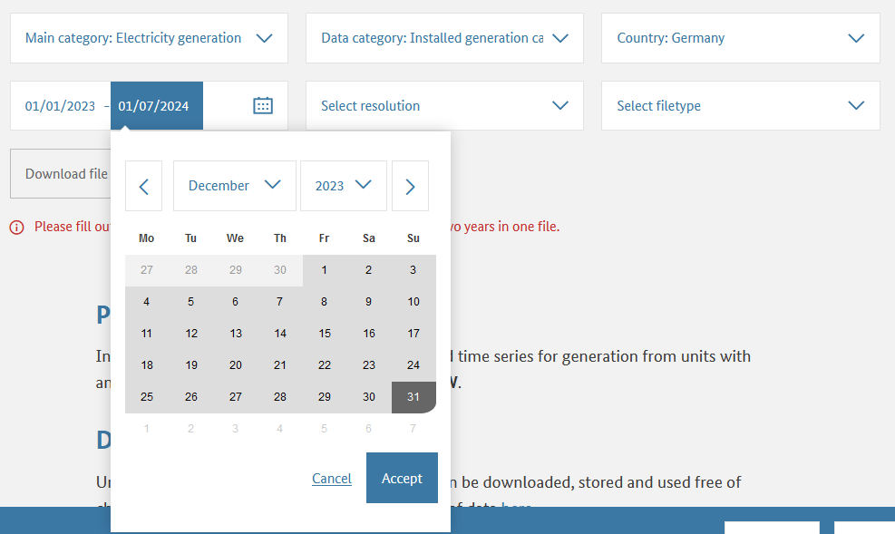
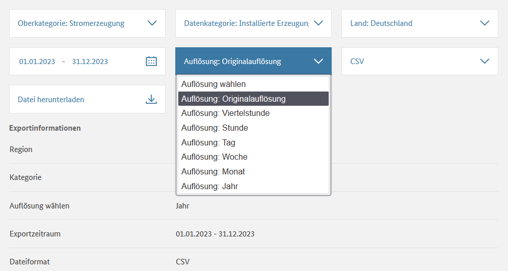
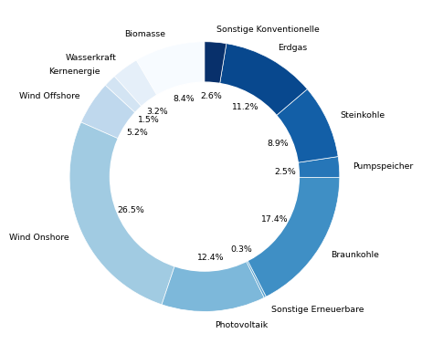
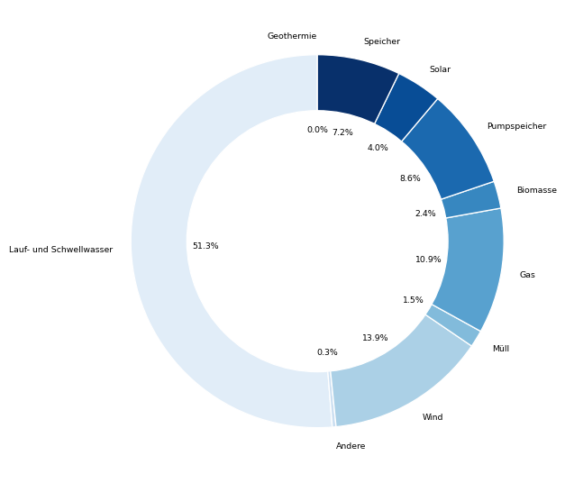
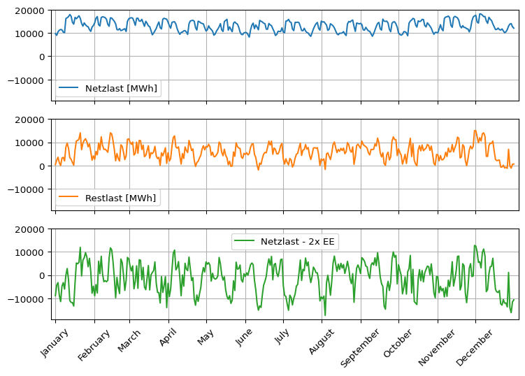
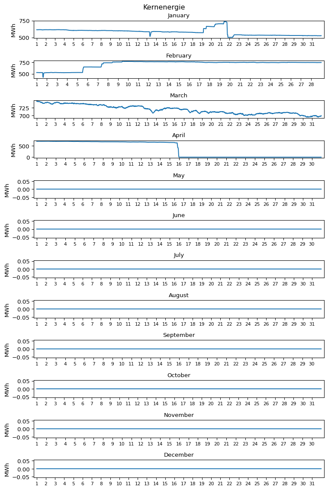
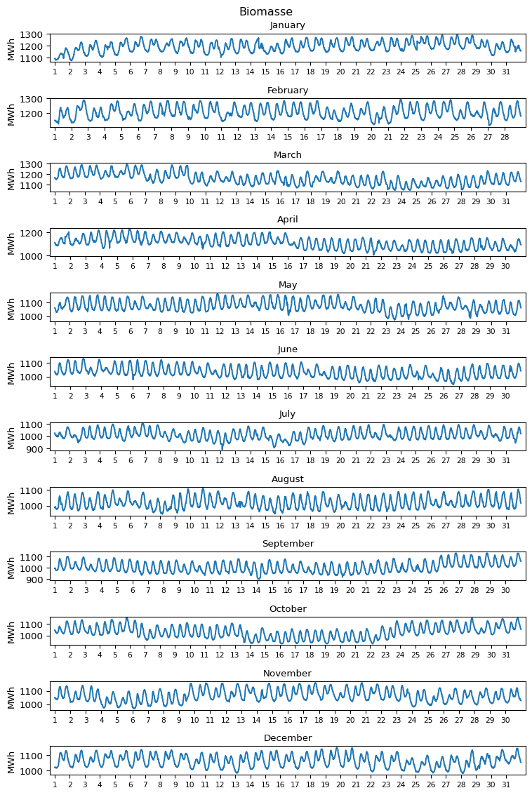
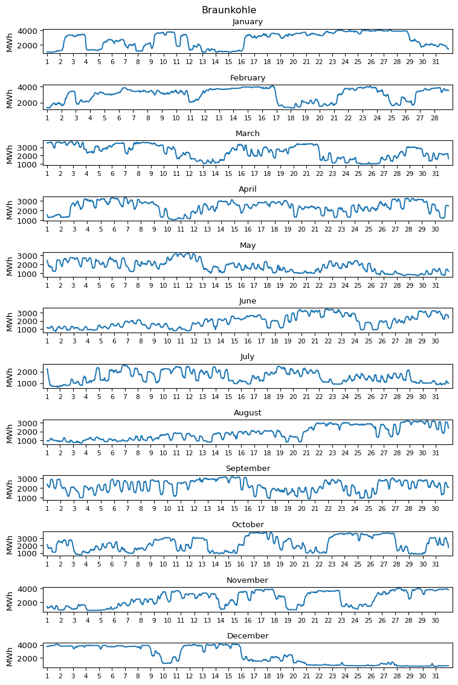
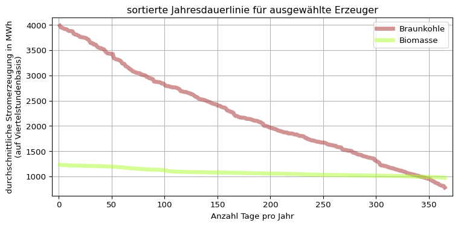
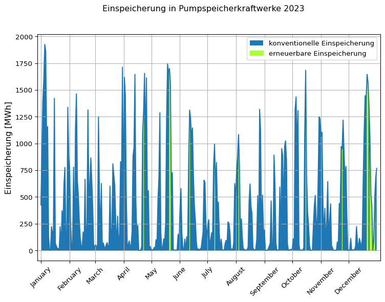

import pandas as pd
pd.set_option("display.precision", 2) # Anzahl Nachkommastellen
import numpy as np
import matplotlib.pyplot as plt
installierte_leistung0 = pd.read_csv(filepath_or_buffer = \
"01-daten/Installierte_Erzeugungsleistung_202301010000_202401010000_Jahr.csv", \
sep = ";", thousands = ".", decimal = ",", \
parse_dates = [0, 1], date_format = "%d.%m.%Y")
erzeugung0 = pd.read_csv(filepath_or_buffer = \
"01-daten/Realisierte_Erzeugung_202301010000_202401010000_Viertelstunde.csv", \
sep = ";", thousands = ".", decimal = ",", \
parse_dates = [0, 1], date_format = "%d.%m.%Y %H:%M")
verbrauch0 = pd.read_csv(filepath_or_buffer = \
"01-daten/Realisierter_Stromverbrauch_202301010000_202401010000_Viertelstunde.csv", \
sep = ";", thousands = ".", decimal = ",", \
parse_dates = [0, 1], date_format = "%d.%m.%Y %H:%M")56 Energiedatenanalyse
57 Hintergrund
Elektrischer Strom wird in Kraftwerken erzeugt und über das Stromnetz zu den Stromverbrauchern transportiert. Stromerzeugung und -verbrauch müssen dabei immer ausgeglichen sein. Der Anteil wetterabhängiger erneuerbarer Einspeisung steigt, Strom kann bislang aber nicht (kostengünstig) großtechnisch gespeichert werden. 2023 speisten die Pumpspeicherkraftwerke in Deutschland bei einer Kapazität von 37,4 GWh [@Heimerl-Kohler-2017-Pumpspeicher-in-Deutschland, S. 77] 11,1 TWh Strom ein, was 2,4 Prozent des deutschen Stromverbrauchs von 458,3 TWh entsprach [@energy-charts-strom]. Die Kraftwerkseinsatzplanung und Speicherauslegung auf Basis von Erzeugungs- und Verbrauchsdaten ist deshalb ein relevantes Anwendungsfeld für die Datenanalyse.
Die Bundesnetzagentur veröffentlicht auf https://www.smard.de/ unter anderem Daten zu Stromerzeugung, -verbrauch und Großhandelspreisen. (Hinweis: Kraftwerksdaten liegen für Erzeugungseinheiten mit einer installierten Erzeugungsleistung von mindestens 100 MW vor.)
58 Daten einlesen
Die Strommarktdaten der Bundesnetzagentur müssen manuell auf https://www.smard.de/ heruntergeladen werden. In diesem Skript werden Daten für das Jahr 2023 benutzt.
| Daten | Dateiname |
|---|---|
| Installierte Erzeugungsleistung 2023 | Installierte_Erzeugungsleistung_202301010000_202401010000_Jahr.csv |
| Realisierte Stromerzeugung 2023 | Realisierte_Erzeugung_202301010000_202401010000_Viertelstunde.csv |
| Realisierter Stromverbrauch 2023 | Realisierter_Stromverbrauch_202301010000_202401010000_Viertelstunde.csv |
Warning 58.1: SMARD Daten herunterladen
Beim der Auswahl des Zeitraums auf Akzeptieren klicken.
Daten zur installierten Leistung in Originalauflösung (Jahresbasis) auswählen.


Das Datumsformat der Dateien ist abhängig von der auf der Internetseite eingestellten Sprache (Deutsch/English).
Die semikolonseparierten Dateien werden als DataFrame mit dem Python Modul Pandas eingelesen, das mit dem Kürzel pd importiert wird. Dazu wird die Funktion pd.read_csv() verwendet. Dabei werden:
das Wert-, Tausender- und Dezimaltrennzeichen spezifiziert.
sep = ";", thousands = ".", decimal = ","die Spalten mit Datums- und Zeitangaben sowie das Datumsformat bestimmt.
parse_dates = [0, 1], date_format = "%d.%m.%Y %H:%M"
Sehen Sie sich die Zeichenkette zur Spezifikation des Datumsformats an: "%d.%m.%Y %H:%M". Können Sie anhand der Dokumentation bestimmen, welches Format die Datumsangaben in der Datei haben? Welches Format hat der 14. April 2023 um Viertel nach zwei nachmittags?
Tip 58.1: Lösung Datumsformat
| Kürzel | Bedeutung |
|---|---|
| %d. | Tag als zweistellige Ganzzahl mit Trennzeichen “.” |
| %m. | Monat (ggf. mit führender Null) mit Trennzeichen “.” |
| %Y | Jahr als vierstellige Ganzzahl mit Trennzeichen ” ” |
| %H: | Stunde als zweistellige Ganzzahl mit Trennzeichen “:” |
| %M | Minute als zweistellige Ganzzahl |
Lösung: 14.04.2023 14:15
59 Daten organisieren
Vor der Datenanalyse sollte überprüft werden, ob die Daten korrekt eingelesen wurden. Dies bedeutet zum einen, zu kontrollieren, ob der Datentyp aller Spalten richtig erkannt wurde. Ob die Spaltentypen einer Datei korrekt eingelesen wurden, können Sie in Python mit dem Befehl df.dtypes überprüfen. Hier der Output des Befehls für den DataFrame erzeugung0.
print(f"Spalten:\n{erzeugung0.dtypes}")Spalten:
Datum von datetime64[ns]
Datum bis datetime64[ns]
Biomasse [MWh] Originalauflösungen float64
Wasserkraft [MWh] Originalauflösungen float64
Wind Offshore [MWh] Originalauflösungen float64
Wind Onshore [MWh] Originalauflösungen float64
Photovoltaik [MWh] Originalauflösungen float64
Sonstige Erneuerbare [MWh] Originalauflösungen float64
Kernenergie [MWh] Originalauflösungen float64
Braunkohle [MWh] Originalauflösungen float64
Steinkohle [MWh] Originalauflösungen float64
Erdgas [MWh] Originalauflösungen float64
Pumpspeicher [MWh] Originalauflösungen float64
Sonstige Konventionelle [MWh] Originalauflösungen float64
dtype: object
Viele der Spaltennamen enthalten die Zeichenkette ” Originalauflösungen”, die der Übersichtlichkeit wegen entfernt werden kann (führendes Leerzeichen beachten). Auf diese Weise könnte auch die Einheitenangabe [MWh] entfernt werden, falls diese als störend empfunden wird.
# Zeichenkette " Originalauflösungen" entfernen
installierte_leistung0.columns = installierte_leistung0.columns.str.replace(pat = " Originalauflösungen", repl = "")
erzeugung0.columns = erzeugung0.columns.str.replace(pat = " Originalauflösungen", repl = "")
print(f"Spalten:\n{erzeugung0.dtypes}")
verbrauch0.columns = verbrauch0.columns.str.replace(pat = " Originalauflösungen", repl = "")Spalten:
Datum von datetime64[ns]
Datum bis datetime64[ns]
Biomasse [MWh] float64
Wasserkraft [MWh] float64
Wind Offshore [MWh] float64
Wind Onshore [MWh] float64
Photovoltaik [MWh] float64
Sonstige Erneuerbare [MWh] float64
Kernenergie [MWh] float64
Braunkohle [MWh] float64
Steinkohle [MWh] float64
Erdgas [MWh] float64
Pumpspeicher [MWh] float64
Sonstige Konventionelle [MWh] float64
dtype: object
Zum anderen sollten die eingelesenen Daten betrachtet werden, um Fehler etwa bei der Umwandlung von Dezimal- und Tausendertrennzeichen, des Datumsformats oder eine unerwartete Anzahl fehlender Werte und sonstige Auffälligkeiten zu identifizieren. Dazu sollten nicht nur die ersten Zeilen des Datensatzes, sondern auch Ausschnitte aus der Mitte und dem Ende kontrolliert werden. Dafür ist der Befehl pd.concat([a, b, c]) nützlich, dem eine Liste von Indexbereichen übergeben werden kann (siehe zweiter und dritter Reiter im folgenden Panel).
# der DataFrame installierte_leistung0 hat nur 1 Zeile
installierte_leistung0| Datum von | Datum bis | Biomasse [MW] | Wasserkraft [MW] | Wind Offshore [MW] | Wind Onshore [MW] | Photovoltaik [MW] | Sonstige Erneuerbare [MW] | Kernenergie [MW] | Braunkohle [MW] | Steinkohle [MW] | Erdgas [MW] | Pumpspeicher [MW] | Sonstige Konventionelle [MW] | |
|---|---|---|---|---|---|---|---|---|---|---|---|---|---|---|
| 0 | 2023-01-01 | 2024-01-01 | 8467.0 | 5049.0 | 8129.0 | 57590.0 | 63066.0 | 440.0 | 4056.0 | 17692.0 | 18127.0 | 31808.0 | 9379.0 | 8958.0 |
pd.concat([erzeugung0.head(2), \
erzeugung0.iloc[len(erzeugung0)//2:(len(erzeugung0)//2+2)], \
erzeugung0.tail(2)])| Datum von | Datum bis | Biomasse [MWh] | Wasserkraft [MWh] | Wind Offshore [MWh] | Wind Onshore [MWh] | Photovoltaik [MWh] | Sonstige Erneuerbare [MWh] | Kernenergie [MWh] | Braunkohle [MWh] | Steinkohle [MWh] | Erdgas [MWh] | Pumpspeicher [MWh] | Sonstige Konventionelle [MWh] | |
|---|---|---|---|---|---|---|---|---|---|---|---|---|---|---|
| 0 | 2023-01-01 00:00:00 | 2023-01-01 00:15:00 | 1094.25 | 320.0 | 684.25 | 7145.75 | 0.50 | 32.25 | 615.25 | 962.75 | 517.00 | 429.75 | 13.50 | 307.25 |
| 1 | 2023-01-01 00:15:00 | 2023-01-01 00:30:00 | 1091.25 | 317.5 | 743.50 | 7158.25 | 0.25 | 32.25 | 614.75 | 963.25 | 518.00 | 429.50 | 9.75 | 307.25 |
| 17520 | 2023-07-02 13:00:00 | 2023-07-02 13:15:00 | 955.25 | 317.5 | 736.00 | 4228.50 | 6832.75 | 25.25 | 0.00 | 795.00 | 216.75 | 546.00 | 0.75 | 264.75 |
| 17521 | 2023-07-02 13:15:00 | 2023-07-02 13:30:00 | 956.75 | 321.5 | 693.75 | 3885.25 | 6961.25 | 25.25 | 0.00 | 791.00 | 215.00 | 545.00 | 0.00 | 266.00 |
| 35038 | 2023-12-31 23:30:00 | 2023-12-31 23:45:00 | 1053.25 | 412.5 | 1479.25 | 7544.25 | 0.50 | 24.00 | 0.00 | 845.25 | 444.50 | 683.00 | 122.75 | 348.50 |
| 35039 | 2023-12-31 23:45:00 | 2024-01-01 00:00:00 | 1051.50 | 404.0 | 1469.00 | 7480.50 | 0.50 | 24.00 | 0.00 | 840.75 | 442.25 | 679.00 | 58.25 | 348.00 |
pd.concat([verbrauch0.head(2), \
verbrauch0.iloc[len(verbrauch0)//2:(len(verbrauch0)//2+2)], \
verbrauch0.tail(2)])| Datum von | Datum bis | Gesamt (Netzlast) [MWh] | Residuallast [MWh] | Pumpspeicher [MWh] | |
|---|---|---|---|---|---|
| 0 | 2023-01-01 00:00:00 | 2023-01-01 00:15:00 | 9720.75 | 1890.25 | 424.75 |
| 1 | 2023-01-01 00:15:00 | 2023-01-01 00:30:00 | 9641.25 | 1739.25 | 443.50 |
| 17520 | 2023-07-02 13:00:00 | 2023-07-02 13:15:00 | 11564.00 | -233.25 | 1147.75 |
| 17521 | 2023-07-02 13:15:00 | 2023-07-02 13:30:00 | 11536.25 | -4.00 | 1223.25 |
| 35038 | 2023-12-31 23:30:00 | 2023-12-31 23:45:00 | 10495.75 | 1471.75 | 470.00 |
| 35039 | 2023-12-31 23:45:00 | 2024-01-01 00:00:00 | 10289.25 | 1339.25 | 528.00 |
Schließlich ist eine Plausibilitätskontrolle der Daten sinnvoll. Einleitend wurde der deutsche Gesamtstromverbrauch im Jahr 2023 genannt, der 458,3 TWh beträgt. Der Stromverbrauch und die Summe der Stromerzeugung sollten diesem Wert ungefähr entsprechen.
# exclude columns with datetime
print("Stromverbrauch in Millionen MWh:\n", \
verbrauch0.sum(numeric_only = True) // (1000 * 1000), sep = "")
print("\nStromerzeugung in Millionen MWh", \
erzeugung0.sum(numeric_only = True).sum() // (1000 * 1000))Stromverbrauch in Millionen MWh:
Gesamt (Netzlast) [MWh] 458.0
Residuallast [MWh] 260.0
Pumpspeicher [MWh] 14.0
dtype: float64
Stromerzeugung in Millionen MWh 448.0
Wenn alle Dateien korrekt eingelesen wurden, können Arbeitsdateien mit dem Befehl df.copy() angelegt werden. Dadurch bleiben die Rohdaten immer verfügbar und können bei Bedarf, beispielsweise nach einem versehentlichen Überschreiben der Arbeitsdateien, erneut geladen werden.
erzeugung = erzeugung0.copy()
verbrauch = verbrauch0.copy()
installierte_leistung = installierte_leistung0.copy()60 Beschreibende Datenanalyse
Mit Methoden der beschreibenden Statistik kann ein Überblick über die Datensätze und die Daten gewonnen werden. Dieser Schritt dient insbesondere auch dazu, mögliche Fehler und Auffälligkeiten im Datensatz zu identifizieren. Hierbei gewonnene Befunde können im der folgenden explorativen und schließenden Datenanalyse vertieft werden.
Einen ersten Überblick über die Daten liefert die Methode pd.DataFrame.describe(), die die Verteilung der Daten beschreibt. Durch das Argument include = [np.number] kann die Ausgabe auf Spalten mit numerischen Daten beschränkt werden, das heißt, die Spalten mit Datumsinformationen werden ausgeschlossen.
print(f"Der DataFrame erzeugung hat {erzeugung.shape[0]} Zeilen und {erzeugung.shape[1]} Spalten.\n")
erzeugung.describe(include = [np.number])Der DataFrame erzeugung hat 35040 Zeilen und 14 Spalten.
| Biomasse [MWh] | Wasserkraft [MWh] | Wind Offshore [MWh] | Wind Onshore [MWh] | Photovoltaik [MWh] | Sonstige Erneuerbare [MWh] | Kernenergie [MWh] | Braunkohle [MWh] | Steinkohle [MWh] | Erdgas [MWh] | Pumpspeicher [MWh] | Sonstige Konventionelle [MWh] | |
|---|---|---|---|---|---|---|---|---|---|---|---|---|
| count | 35040.00 | 35040.00 | 35040.00 | 35040.00 | 35040.00 | 35040.00 | 35040.00 | 35040.00 | 35040.00 | 35040.00 | 35040.00 | 35040.00 |
| mean | 1079.50 | 411.50 | 671.23 | 3389.91 | 1590.11 | 33.32 | 192.37 | 2221.58 | 1134.42 | 1431.02 | 318.19 | 330.81 |
| std | 80.16 | 83.08 | 457.65 | 2627.46 | 2470.00 | 7.69 | 305.80 | 939.80 | 838.85 | 682.72 | 425.94 | 39.99 |
| min | 892.50 | 249.75 | 0.00 | 30.25 | 0.25 | 21.75 | 0.00 | 634.25 | 170.25 | 373.00 | 0.00 | 208.50 |
| 25% | 1017.50 | 334.00 | 259.00 | 1237.25 | 0.50 | 25.50 | 0.00 | 1396.25 | 506.75 | 893.25 | 38.00 | 304.50 |
| 50% | 1066.75 | 420.50 | 612.25 | 2657.00 | 24.88 | 32.50 | 0.00 | 2111.25 | 814.75 | 1300.00 | 110.75 | 337.00 |
| 75% | 1133.25 | 481.00 | 1040.56 | 5017.19 | 2466.50 | 39.25 | 535.00 | 3000.31 | 1501.00 | 1810.75 | 443.00 | 356.00 |
| max | 1293.25 | 618.25 | 1910.00 | 12039.50 | 10361.25 | 51.25 | 771.00 | 4121.75 | 3814.00 | 4169.25 | 2399.00 | 512.50 |
Aus der beschreibenden Statistik der Daten kann beispielsweise entnommen werden, dass Onshore Wind den größten Beitrag zur Stromerzeugung lieferte. Ebenfalls ist auffällig, dass weder Onshore Wind noch Photovoltaik eine minimale Erzeugung von 0 aufweisen, was jedoch für Wind Offshore und Kernenergie der Fall ist.
60.1 Visualisieren
Die Auswertung der beschreibenden Statistik für 12 verschiedene Erzeugungsformen erfordert jedoch Konzentration. Komplexe Informationen sollten deshalb grafisch aufbereitet werden.
Einen schnellen Überblick beispielsweise über die Verteilung der Gesamterzeugungsleistung nach Erzeugungsart verschafft ein Kreis- bzw. Ringdiagramm. Allerdings hat dieser Diagrammtyp den Nachteil, dass dieser mit steigender Anzahl von Merkmalsausprägungen (bzw. hier darzustellenden Merkmalen) schnell unübersichtlich wird und Winkel kaum exakt abgelesen werden können.
Im folgenden, mit der Methode pd.DataFrame.plot.pie() erstellten Ringdiagramm wurde deshalb zum einen die automatische Annotation der Anteilswerte mit dem entsprechenden Formatierungsstring autopct='%1.1f%%' aktiviert. Zum anderen wurde die Reihenfolge der Spalten im DataFrame getauscht, da sich die Prozentangaben und Beschriftungen kleiner Kreissegmente andernfalls überlappen. Außerdem wurde für die Beschriftung der Segmente die Zeichkette ” [MWh]” aus den Spaltennamen gekürzt. Dies verbessert zwar die Lesbarkeit des Diagramms. Das ist aber nicht der Grund, weshalb die Zeichenkette entfernt wurde.
Was denken Sie, was der Grund dafür ist?
Tip 60.1: Lösung Kreisdiagramm
Das Kreis- bzw. Ringdiagramm stellt Anteilswerte dar und ist deshalb einheitenlos.
Die Details der Ploterstellung können Sie dem zweiten Reiter entnehmen.

# plot the pie first try - Sonstige Erneuerbare [MWh] overlaps with Kernenergie [MWh] and Pumpspeicher [MWh]
# erzeugung.sum(numeric_only = True).plot.pie(colormap = "Blues", startangle = 90, rotatelabels = True, explode = explosion)
# rearrange columns, remove " [MWh]"
plotting_data = erzeugung.copy()
column_to_move = plotting_data.pop("Kernenergie [MWh]")
plotting_data.insert(4, "Kernenergie [MWh]", column_to_move)
column_to_move = plotting_data.pop("Pumpspeicher [MWh]")
plotting_data.insert(10, "Pumpspeicher [MWh]", column_to_move)
plotting_data.columns = plotting_data.columns.str.replace(pat = " [MWh]", repl = "")
# plot the pie
ax = plotting_data.sum(numeric_only = True).plot.pie(colormap = "Blues", startangle = 90, rotatelabels = False, autopct='%1.1f%%', pctdistance = 0.6, textprops = dict(size = 7, color = 'black'), wedgeprops = {"linewidth": 0.5, "edgecolor": "white"})
# make a donut
circle = plt.Circle((0, 0), radius = 0.7, color = "white")
ax.add_patch(circle)
plt.show()60.1.1 Daten aggregieren
Aufgrund der zahlreichen Merkmale erschließt sich aus der deskriptiven und visuellen Beschreibung der Erzeugungsleistung nicht unbedingt ein prägnanter Befund. Eine Möglichkeit, um Daten besser zu verstehen, besteht darin, ähnliche Merkmale zusammenzufassen. Im Folgenden werden erneuerbare und konventionelle (mit fossilen Brennstoffen betriebene) Erzeugungsarten für die Darstellung der Anteilswerte in einem Ringdiagramm zusammengefasst. Beide Gruppen werden zusätzlich in einem Balkendiagramm dargestellt. Für die Darstellung wird das Modul matplotlib.pyplot verwendet. Die Details der Ploterstellung können Sie dem zweiten Reiter entnehmen.
![Die Grafik besteht aus drei, übereinander angeordneten Teilgrafiken. In der Mitte ist ein Kreisdiagramm der Erzeugungsanteile erneuerbarer Energien (56%), konventioneller Energien (40%) sowie Pumpspeicher (2.5%) und Kernenergie (1.5%) zu sehen. Die Kreissegmente sind in Blautönen eingefärbt. Oben ist in einem horizontalen Balkendiagramm die absolute Erzeugung der erneuerbaren Energien von oben nach unten aufsteigend dargestellt. Beginnend mit der geringsten Erzeugung: Sonstige Erneuerbare, Wasserkraft, Wind Offshore, Biomasse, Photovoltaik, Wind Onshore. Unten ist ein einem horizontalen Balkendiagramm die absolute Erzeugung der konventionellen Energie von oben nach unten aufsteigend dargestellt. Beginnend mit der geringsten Erzeugung: Sonstige Konventionelle, Steinkohle, Erdgas, Braunkohle.](energiedatenanalyse_files/figure-html/cell-13-output-1.png)
# Erneuerbare und Konventionelle bestimmen, jeweils summieren
## Erneuerbare
plotting_data = erzeugung.copy()
plotting_data.drop(columns = ['Datum von', 'Datum bis', 'Biomasse [MWh]', 'Wasserkraft [MWh]', 'Wind Offshore [MWh]',
'Wind Onshore [MWh]', 'Photovoltaik [MWh]',
'Sonstige Erneuerbare [MWh]'], inplace = True) # Datumsspalten entfernen, inplace = False liefert eine Kopie und tut deshalb ohne Objektzuweisung 'nichts'
erneuerbare = ['Biomasse [MWh]', 'Wasserkraft [MWh]', 'Wind Offshore [MWh]', 'Wind Onshore [MWh]', 'Photovoltaik [MWh]',
'Sonstige Erneuerbare [MWh]']
plotting_data["Erneuerbare"] = erzeugung[erneuerbare].sum(axis = 'columns')
## Konventionelle
plotting_data.drop(columns = ['Braunkohle [MWh]', 'Steinkohle [MWh]', 'Erdgas [MWh]', 'Sonstige Konventionelle [MWh]'], inplace = True)
konventionelle = ['Braunkohle [MWh]', 'Steinkohle [MWh]', 'Erdgas [MWh]', 'Sonstige Konventionelle [MWh]']
plotting_data["Konventionelle"] = erzeugung[konventionelle].sum(axis = 'columns')
# rearrange columns, remove " [MWh]"
plotting_data = plotting_data[['Erneuerbare', 'Pumpspeicher [MWh]', 'Konventionelle', 'Kernenergie [MWh]']]
plotting_data.columns = plotting_data.columns.str.replace(pat = " [MWh]", repl = "")
# zur Kontrolle - axis = columns addiert die Spalten zeilenweise
## print(erneuerbare)
## print(erzeugung[erneuerbare].sum(axis = 'columns'))
## print(plotting_data.columns)
## print(plotting_data[0:3])
# Grafik mit drei subplots erzeugen
plt.figure(figsize = (7.5, 7.5))
nrows = 4
ncols = 2
font_size = 8
# value for shared x-axis on barplots
x_lim = erzeugung.sum(numeric_only = True).max() * 1.1
# array of colors
my_colors = plt.get_cmap('Blues')(np.linspace(0.2, 1, len(plotting_data.sum())))
# plot the pie, use 4 out of 8 panels = middle 2 rows
ax = plt.subplot(nrows, ncols, (3, 6))
plt.pie(x = plotting_data.sum(), colors = my_colors, startangle = 350, labels = list(plotting_data.columns), autopct='%1.1f%%', pctdistance = 0.5, textprops = dict(size = font_size + 1), wedgeprops = {"linewidth": 0.5, "edgecolor": "white"})
# make a donut
circle = plt.Circle((0, 0), radius = 0.65, color = "white")
ax.add_patch(circle)
# top row unstacked barplot
plt.subplot(nrows, ncols, (1, 2))
erzeugung[erneuerbare].sum().sort_values(ascending = False).plot.barh(fontsize = font_size, xlim = (0, x_lim), color = my_colors[0], edgecolor = 'darkgrey')
plt.title("Erneuerbare", fontsize = font_size + 2)
# bottom row unstacked barplot
plt.subplot(nrows, ncols, (7, 8))
erzeugung[konventionelle].sum().sort_values(ascending = False).plot.barh(fontsize = font_size, xlim = (0, x_lim), color = my_colors[2], edgecolor = 'darkgrey')
plt.title("Konventionelle", fontsize = font_size + 2)
plt.tight_layout()
plt.show()
Durch die Aggregation ähnlicher Stromerzeugungsarten wurde das Ringdiagramm auf vier Erzeugungsarten reduziert. Die mit nur geringen Anteilen an der Gesamtstromerzeugung beteiligten Erzeugungsarten Pumpspeicher und Kernenergie treten dadurch gegenüber der Einzeldarstellung aller Erzeugungsarten deutlich hervor. Auf dieser Grundlage kann diskutiert werden, ob die gezeigte Aggregation zweckmäßig ist. So könnte einerseits die Kernenergie den Konventionellen zugeschlagen werden, wenn für diese Gruppe nicht auf das Merkmal einer Erzeugung mit fossilen Brennstoffen, sondern auf das Prinzip thermischer Dampfexpansion abgestellt wird. Andererseits sollte die Erzeugung durch Pumpspeicher kritisch hinterfragt werden. Dieser Aspekt wird im folgenden Abschnitt diskutiert.
Warning 60.1: Hinweis
Komplexe Grafiken, wie die hier gezeigte, sollten im Allgemeinen sparsam eingesetzt werden, da sie schwer zu erfassen und zu interpretieren sind. Die Zweck der Grafik und die wesentlichen Schlussfolgerungen sollten deshalb im Text erläutert werden.
Tipp: Stellen Sie sich vor, Sie würden die Grafik spontan einem:einer Freund:in zeigen, die Ihre Arbeit nicht gelesen hat. Wie würden Sie Ihrer:Ihrem Freund:in die Grafik erklären? Schreiben Sie es in Ihrer Arbeit auf.
60.1.2 Erzeugung, Speicherung, Einspeisung
Pumpspeicherkraftwerke sind Energiespeicher, die keine Primärenergie erzeugen, sondern den von anderen Erzeugern produzierten Strom speichern und bei Bedarf wieder ins Netz einspeisen. Welche Erzeuger Strom zum Befüllen der Pumpspeicher lieferten, wird in sec-explorative-datenanalyse untersucht. Die realisierte Netzeinspeisung von Pumpspeicherkraftwerken entspricht der um die Verluste beim Ein- und Ausspeichern (sowie ggf. Speicherverluste wie Verdunstung, Versickerung) verminderten Energieerzeugung anderer Stromerzeuger. Der Wirkungsgrad der Pumpspeicherkraftwerke kann mit den vorliegenden Daten für das Jahr 2023 berechnet werden.
Wie hoch war der Wirkungsgrad der Pumpspeicherkraftwerke 2023?
Tip 60.2: Lösung Wirkungsgrad Pumpspeicher
print(f"Summe Erzeugung Pumpspeicher: {erzeugung["Pumpspeicher [MWh]"].sum():,.2f}\n"
f"Summe Verbrauch Pumpspeicher: {verbrauch["Pumpspeicher [MWh]"].sum():,.2f}\n"
f"{41 * "="}\n"
f"Wirkungsgrad in Prozent: \t\t\t{( erzeugung["Pumpspeicher [MWh]"].sum() / verbrauch["Pumpspeicher [MWh]"].sum() ) * 100:,.2f}")Summe Erzeugung Pumpspeicher: 11,149,398.50
Summe Verbrauch Pumpspeicher: 14,095,632.75
=========================================
Wirkungsgrad in Prozent: 79.10Die tatsächlich realisierte Stromerzeugung ist deshalb die von der Bundesnetzagentur veröffentlichte kumulierte Stromerzeugung der Pumpspeicherkraftwerke zuzüglich der Speicherverluste. Die Bundesnetzagentur führt diesen Wert im Datensatz Stromverbrauch. Im folgenden Programmcode wird der “Walross”-Operator := benutzt, der Objektzuweisungen innerhalb von Anweisungen (hier die Anweisung print()) erlaubt. Dadurch Code knapper gefasst werden (die Lesbarkeit nimmt aber ab). Mit dem Walross-Operator durchgeführte Zuweisungen müssen in runde Klammern eingefasst werden:
print(f"Speicherverluste:\t\t\t{ (speicherverluste := ( verbrauch["Pumpspeicher [MWh]"].sum() - erzeugung["Pumpspeicher [MWh]"].sum() ) / (1000 * 1000) ):>6.2f} TWh\n"
f"kumulierte Stromerzeugung:\t{ ( kumulierte_erzeugung := erzeugung.sum(numeric_only = True).sum() // (1000 * 1000) ):,.2f} TWh\n"
f"Summe:\t\t\t\t\t\t{speicherverluste + kumulierte_erzeugung:,.2f} TWh\n\n")Speicherverluste: 2.95 TWh
kumulierte Stromerzeugung: 448.00 TWh
Summe: 450.95 TWh
Die Differenz zwischen tatsächlich realisierter und von der Bundesnetzagentur veröffentlichter Stromerzeugung beträgt knapp 3 TWh, also weniger als 1 Prozent der Gesamtstromerzeugung. In anderen Ländern ist die korrekte Zuordnung der Daten auch betragsmäßig relevant. In Österreich spielen Pumpspeicherkraftwerke eine bedeutende Rolle im Strommix.
60.2 Aufgabe beschreibende Datenanalyse

Blick vom Schlegeisspeicher von Höhenweg aus. von Klaus Kettner steht unter der Lizenz CC BY-SA 3.0 und ist abrufbar auf Wikimedia. Das Bild wurde zugeschnitten und im Format PNG gespeichert. 2012.
Wie die Bundesnetzagentur veröffentlicht auch die Austrian Power Grid AG (APG) Strommarktdaten unter https://markttransparenz.apg.at/. Unter dem Link können Erzeugungsdaten für das Jahr 2023 heruntergeladen werden.
Diesem Skript ist folgende Datei angefügt.
| Daten | Dateiname |
|---|---|
| Realisierte Stromerzeugung 2023 | AGPT_2022-12-31T23_00_00Z_2023-12-31T23_00_00Z_15M_de_2024-06-10T09_32_38Z.csv |
Lesen Sie die österreichischen Erzeugungsdaten ein und visualisieren Sie die Anteile der Erzeugungstypen. Was fällt Ihnen im Datensatz auf?
Warning 60.2: Markttranzparenzdaten Österreich herunterladen
Nach der Auswahl des Zeitraums auf Exportieren klicken, dann erscheint die Schaltfläche Download.


Das Datumsformat der Dateien ist abhängig von der auf der Internetseite eingestellten Sprache (Deutsch/English).
Tip 60.3: Tipp Erzeugungsdaten und Musterlösung
Der österreichische Datensatz unterscheidet sich zum einen dadurch, dass die Leistung statt der erzeugten Energie angegeben wird. (Das ist für die Visualisierung der Erzeugungsanteile unerheblich.) Der Datensatz unterscheidet sich aber noch in einer anderen Hinsicht.
Tipp: Wenn Ihnen in der Ausgabe der Methode .describe() nicht alle Spalten angezeigt werden, versuchen Sie, den DataFrame in zwei oder mehr Teilen auszugeben. Beispielsweise:
print(df.iloc[ :, 0:5].describe(include = np.number))
print(df.iloc[ :, 5:10].describe(include = np.number))
print(df.iloc[ :, 10:15].describe(include = np.number))
Musterlösung Strommarktdaten Österreich
import pandas as pd
import numpy as np
import matplotlib.pyplot as plt
# Deklarieren der Anzahl der Nachkommastellen
pd.set_option("display.precision", 2)
# Datensatz wird eingelesen und in der Variable erzeugung0 gespeichert
# !
# Für die eigene Anwendung muss der Dateipfad an den korrekten Speicherort der runtergeladenen .csv Datei angepasst werden.
# !
erzeugung0_austria_ms = pd.read_csv("01-daten/AGPT_2022-12-31T23_00_00Z_2023-12-31T23_00_00Z_15M_de_2024-06-10T09_32_38Z.csv",
sep = ";", thousands = ".", decimal = ",", parse_dates = [0, 1], date_format = "%d.%m.%Y")
print(erzeugung0_austria_ms.head(10))
print(f"Der DataFrame erzeugung_austria_ms hat {erzeugung0_austria_ms.shape[0]} Zeilen und {erzeugung0_austria_ms.shape[1]} Spalten.")
# Eckdaten des Datensatzes werden kurz "zusammengefasst"
print(erzeugung0_austria_ms.describe(include = [np.number]))
# Da der Datensatz relativ viele Spalten besitzt, können möglicherweise (je nach Bildschirmauflösung) nicht alle Spalten im Terminal angezeigt werden
# und die mittleren werden daher mit "..." abgekürzt.
# In dem Fall müssen die Spalten passend unterteilt werden, sodass man sich mit der Methode .describe() auch wirklich alle Spalten anschauen und beschreiben lassen kann:
print(erzeugung0_austria_ms.iloc[:, 0:5].describe(include=[np.number]))
print(erzeugung0_austria_ms.iloc[:, 5:10].describe(include=[np.number]))
print(erzeugung0_austria_ms.iloc[:, 10:15].describe(include=[np.number]))
# Kopie des Datensatzes wird angelegt
erzeugung_austria_ms_c = erzeugung0_austria_ms
# Spalten mit den Uhrzeitdaten werden gelöscht
erzeugung_austria_ms_c = erzeugung_austria_ms_c.drop(columns=["Zeit von [CET/CEST]","Zeit bis [CET/CEST]"])
print(erzeugung_austria_ms_c.head(5))
# Die Zeichenkette "[MW]" wird aus den Spalten entfernt
erzeugung_austria_ms_c.columns = erzeugung_austria_ms_c.columns.str.replace(pat=" [MW]", repl="")
print(erzeugung_austria_ms_c.head(5))
# mögliche Plausibilisierung: die .csv Datei in Excel ansehen. Es sollte auffallen, dass sich in der Spalte der Pumpspeicher sowohl
# Positiv- als auch Negativwerte befinden. Sieht man auch, wenn man genau auf die beschriebenen Werte der .describe() Methode achtet
# Nun wird geprüft, ob sich negative Werte in den Erzeugungsleistungen befinden:
check_minus_werte = (erzeugung_austria_ms_c < 0).any().any()
if check_minus_werte == True:
print("FEHLER: Es befinden sich negative Werte unter den Erzeugungswerten.")
# negative Werte in der Spalte "Pumpspeicher" werden auf 0 gesetzt
erzeugung_austria_ms_c["Pumpspeicher"] = erzeugung_austria_ms_c["Pumpspeicher"].clip(lower=0)
# Spalten mit Summe 0 entfernen
# Ansatz: Jede Spalte wird darauf geprüft, ob die Summe ihrer Werte Null ist. Falls ja, wird diese Spalte mit der .drop Methode aus dem neuen Dataframe gelöscht
# dadurch verschwinden 3 Spalten mit der Summe Null. Geothermie wird immer noch als 0,0 % angezeigt, da der Wert sehr klein ist (nicht erkennbar bei einer Nachkommastelle)
spalten_weg = []
for i in erzeugung_austria_ms_c.columns:
if erzeugung_austria_ms_c[i].sum() == 0:
spalten_weg.append(i)
erzeugung_austria_ms_c = erzeugung_austria_ms_c.drop(columns=spalten_weg)
print(erzeugung_austria_ms_c.head(10))
# um die Lesbarkeit der sehr kleinen Teilstücke des Kreisdiagramms zu verbessern, werden die Segmente anders angeordnet.
# Dafür wird die Reihenfolgeder Spalten im Dataframe umsortiert, sodass das größte Segment auf das kleinste Segment der Liste folgt, und so weiter
sortierte_spalten = erzeugung_austria_ms_c.sum().sort_values().index
neue_reihenfolge = []
for i in range(len(sortierte_spalten) // 2):
neue_reihenfolge.append(sortierte_spalten[i])
neue_reihenfolge.append(sortierte_spalten[-(i+1)])
# falls eine ungerade Anzahl an Spalten existiert:
if len(sortierte_spalten) % 2 != 0:
neue_reihenfolge.append(sortierte_spalten[len(sortierte_spalten) // 2])
erzeugung_austria_ms_c = erzeugung_austria_ms_c[neue_reihenfolge]
plt.figure(figsize = (7, 7))
new_plot = erzeugung_austria_ms_c.sum(numeric_only=True).plot.pie(colormap = "Blues", startangle=90, rotatelabels=False, wedgeprops = {"linewidth":1, "edgecolor":"white"}, autopct='%1.1f%%', pctdistance=0.6, textprops=dict(size=7))
# make a donut
circle = plt.Circle((0, 0), radius = 0.7, color = "white")
new_plot.add_patch(circle)
plt.show() Zeit von [CET/CEST] Zeit bis [CET/CEST] Wind [MW] Solar [MW] \
0 01.01.2023 00:00:00 01.01.2023 00:15:00 1000.0 0.0
1 01.01.2023 00:15:00 01.01.2023 00:30:00 964.0 0.0
2 01.01.2023 00:30:00 01.01.2023 00:45:00 956.0 0.0
3 01.01.2023 00:45:00 01.01.2023 01:00:00 992.0 0.0
4 01.01.2023 01:00:00 01.01.2023 01:15:00 880.0 0.0
5 01.01.2023 01:15:00 01.01.2023 01:30:00 888.0 0.0
6 01.01.2023 01:30:00 01.01.2023 01:45:00 948.0 0.0
7 01.01.2023 01:45:00 01.01.2023 02:00:00 968.0 0.0
8 01.01.2023 02:00:00 01.01.2023 02:15:00 956.0 0.0
9 01.01.2023 02:15:00 01.01.2023 02:30:00 952.0 0.0
Biomasse [MW] Gas [MW] Kohle [MW] Öl [MW] Geothermie [MW] \
0 240.0 27.6 0.0 0.0 0.07
1 240.0 27.6 0.0 0.0 0.07
2 240.0 28.0 0.0 0.0 0.07
3 240.0 27.6 0.0 0.0 0.07
4 240.0 27.6 0.0 0.0 0.07
5 240.0 28.4 0.0 0.0 0.07
6 240.0 28.8 0.0 0.0 0.07
7 240.0 28.0 0.0 0.0 0.07
8 240.0 28.8 0.0 0.0 0.07
9 240.0 28.4 0.0 0.0 0.07
Pumpspeicher [MW] Lauf- und Schwellwasser [MW] Speicher [MW] \
0 -1404.8 2291.6 70.4
1 -1532.8 2283.2 66.8
2 -1544.4 2240.0 100.4
3 -1579.6 2199.6 77.6
4 -1590.8 2234.8 63.2
5 -1602.8 2229.2 73.6
6 -1572.0 2211.2 69.2
7 -1579.2 2194.8 70.8
8 -1649.6 2202.8 75.2
9 -1702.0 2172.4 65.6
Sonstige Erneuerbare [MW] Müll [MW] Andere [MW]
0 0.0 100.0 22.0
1 0.0 100.0 22.0
2 0.0 100.0 22.0
3 0.0 100.0 22.0
4 0.0 100.0 22.0
5 0.0 100.0 22.0
6 0.0 100.0 22.0
7 0.0 100.0 22.0
8 0.0 100.0 22.0
9 0.0 100.0 22.0
Der DataFrame erzeugung_austria_ms hat 35040 Zeilen und 15 Spalten.
Wind [MW] Solar [MW] Biomasse [MW] Gas [MW] Kohle [MW] Öl [MW] \
count 35040.00 35040.00 35040.00 35040.00 35040.0 35040.0
mean 942.84 268.01 159.94 736.68 0.0 0.0
std 884.56 421.28 64.30 799.65 0.0 0.0
min 4.00 0.00 52.00 0.00 0.0 0.0
25% 204.00 0.00 100.00 0.40 0.0 0.0
50% 644.00 20.00 156.00 472.00 0.0 0.0
75% 1484.00 392.00 216.00 1273.60 0.0 0.0
max 3400.00 2028.00 312.00 3599.60 0.0 0.0
Geothermie [MW] Pumpspeicher [MW] Lauf- und Schwellwasser [MW] \
count 3.50e+04 35040.00 35040.00
mean 7.20e-02 283.53 3477.12
std 1.39e-17 1101.68 1032.45
min 7.20e-02 -2082.80 1375.60
25% 7.20e-02 -451.20 2591.60
50% 7.20e-02 181.60 3516.00
75% 7.20e-02 1010.40 4131.20
max 7.20e-02 3160.80 6290.40
Speicher [MW] Sonstige Erneuerbare [MW] Müll [MW] Andere [MW]
count 35040.00 35040.0 35040.0 35040.0
mean 488.40 0.0 100.0 22.0
std 301.89 0.0 0.0 0.0
min 16.00 0.0 100.0 22.0
25% 248.00 0.0 100.0 22.0
50% 424.40 0.0 100.0 22.0
75% 686.00 0.0 100.0 22.0
max 1434.40 0.0 100.0 22.0
Wind [MW] Solar [MW] Biomasse [MW]
count 35040.00 35040.00 35040.00
mean 942.84 268.01 159.94
std 884.56 421.28 64.30
min 4.00 0.00 52.00
25% 204.00 0.00 100.00
50% 644.00 20.00 156.00
75% 1484.00 392.00 216.00
max 3400.00 2028.00 312.00
Gas [MW] Kohle [MW] Öl [MW] Geothermie [MW] Pumpspeicher [MW]
count 35040.00 35040.0 35040.0 3.50e+04 35040.00
mean 736.68 0.0 0.0 7.20e-02 283.53
std 799.65 0.0 0.0 1.39e-17 1101.68
min 0.00 0.0 0.0 7.20e-02 -2082.80
25% 0.40 0.0 0.0 7.20e-02 -451.20
50% 472.00 0.0 0.0 7.20e-02 181.60
75% 1273.60 0.0 0.0 7.20e-02 1010.40
max 3599.60 0.0 0.0 7.20e-02 3160.80
Lauf- und Schwellwasser [MW] Speicher [MW] Sonstige Erneuerbare [MW] \
count 35040.00 35040.00 35040.0
mean 3477.12 488.40 0.0
std 1032.45 301.89 0.0
min 1375.60 16.00 0.0
25% 2591.60 248.00 0.0
50% 3516.00 424.40 0.0
75% 4131.20 686.00 0.0
max 6290.40 1434.40 0.0
Müll [MW] Andere [MW]
count 35040.0 35040.0
mean 100.0 22.0
std 0.0 0.0
min 100.0 22.0
25% 100.0 22.0
50% 100.0 22.0
75% 100.0 22.0
max 100.0 22.0
Wind [MW] Solar [MW] Biomasse [MW] Gas [MW] Kohle [MW] Öl [MW] \
0 1000.0 0.0 240.0 27.6 0.0 0.0
1 964.0 0.0 240.0 27.6 0.0 0.0
2 956.0 0.0 240.0 28.0 0.0 0.0
3 992.0 0.0 240.0 27.6 0.0 0.0
4 880.0 0.0 240.0 27.6 0.0 0.0
Geothermie [MW] Pumpspeicher [MW] Lauf- und Schwellwasser [MW] \
0 0.07 -1404.8 2291.6
1 0.07 -1532.8 2283.2
2 0.07 -1544.4 2240.0
3 0.07 -1579.6 2199.6
4 0.07 -1590.8 2234.8
Speicher [MW] Sonstige Erneuerbare [MW] Müll [MW] Andere [MW]
0 70.4 0.0 100.0 22.0
1 66.8 0.0 100.0 22.0
2 100.4 0.0 100.0 22.0
3 77.6 0.0 100.0 22.0
4 63.2 0.0 100.0 22.0
Wind Solar Biomasse Gas Kohle Öl Geothermie Pumpspeicher \
0 1000.0 0.0 240.0 27.6 0.0 0.0 0.07 -1404.8
1 964.0 0.0 240.0 27.6 0.0 0.0 0.07 -1532.8
2 956.0 0.0 240.0 28.0 0.0 0.0 0.07 -1544.4
3 992.0 0.0 240.0 27.6 0.0 0.0 0.07 -1579.6
4 880.0 0.0 240.0 27.6 0.0 0.0 0.07 -1590.8
Lauf- und Schwellwasser Speicher Sonstige Erneuerbare Müll Andere
0 2291.6 70.4 0.0 100.0 22.0
1 2283.2 66.8 0.0 100.0 22.0
2 2240.0 100.4 0.0 100.0 22.0
3 2199.6 77.6 0.0 100.0 22.0
4 2234.8 63.2 0.0 100.0 22.0
FEHLER: Es befinden sich negative Werte unter den Erzeugungswerten.
Wind Solar Biomasse Gas Geothermie Pumpspeicher \
0 1000.0 0.0 240.0 27.6 0.07 0.0
1 964.0 0.0 240.0 27.6 0.07 0.0
2 956.0 0.0 240.0 28.0 0.07 0.0
3 992.0 0.0 240.0 27.6 0.07 0.0
4 880.0 0.0 240.0 27.6 0.07 0.0
5 888.0 0.0 240.0 28.4 0.07 0.0
6 948.0 0.0 240.0 28.8 0.07 0.0
7 968.0 0.0 240.0 28.0 0.07 0.0
8 956.0 0.0 240.0 28.8 0.07 0.0
9 952.0 0.0 240.0 28.4 0.07 0.0
Lauf- und Schwellwasser Speicher Müll Andere
0 2291.6 70.4 100.0 22.0
1 2283.2 66.8 100.0 22.0
2 2240.0 100.4 100.0 22.0
3 2199.6 77.6 100.0 22.0
4 2234.8 63.2 100.0 22.0
5 2229.2 73.6 100.0 22.0
6 2211.2 69.2 100.0 22.0
7 2194.8 70.8 100.0 22.0
8 2202.8 75.2 100.0 22.0
9 2172.4 65.6 100.0 22.0 
Musterlösung von Marc Sönnecken. Für die Kompatibilität mit diesem Skript wurden der Dateipfad und die Objektbezeichnungen angepasst. Für die Barrierefreiheit wurden die Grafikgröße geändert, die Farbpalette geändert, ein weißer Innenkreis ergänzt und die Position der Prozentwerte angepasst.
61 Explorative Datenanalyse
Explorative Datenanalyse bedeutet, Fragen an die vorliegenden Daten zu stellen und diese mittels datenanalytischer Methoden zu beantworten. Die so gewonnenen Erkenntnisse können helfen, die Fragen zu verfeinern oder neue Fragen zu generieren. Es handelt sich also um einen iterativen Prozess. Dadurch soll vor allem ein tieferes Verständnis der Daten gewonnen werden. [@R-for-Data-Science, Kapitel 10 Exploratory data analysis]
61.1 Hintergrund: Grenzstromanalyse
Im vorliegenden Fall wird die explorative Auseinandersetzung mit dem Datensatz von der Frage strukturiert, welche Erzeuger Strom lieferten, um zusätzlich zur Netzlast die Pumpspeicher zu befüllen. Es soll also bestimmt werden, welche Stromerzeuger an den Zeitpunkten, an denen die Pumpspeicher befüllt wurden, in der Lage waren, zusätzliche Leistung bereitzustellen. Dieser zusätzliche Strom kann kurz als Grenzstrom bezeichnet werden.
Important 61.1: Grenzstrom
Grenzbetrachtungen untersuchen die Bedingungen, die bei der Produktion oder dem Verbrauch einer zusätzlichen Einheit herrschen. Eine Grenzbetrachtung unterscheidet sich dadurch von einer Durchschnittsbetrachtung, die den Effekt einer Mengenänderung auf alle Einheiten untersucht. Der Grenzstrom bezeichnet eine zusätzliche Einheit Strom.
Beispielsweise bestehe die momentane Stromerzeugung in Höhe von 100 Einheiten aus 60 Einheiten Solarstrom und, weil die solare Produktion nicht ausreicht, zusätzlich aus 40 Einheiten Kohlestrom. In diesem Fall enthält jede Einheit Strom durchschnittlich 0,4 Anteile Kohlestrom. Werden nun weitere 20 Einheiten Strom nachgefragt, so müssen diese durch eine zusätzliche Kohleverstromung bedient werden. In der Durchschnittsbetrachtung beträgt der Strommix nun aus 60 Einheiten Solarstrom und 40 + 20 = 60 Einheiten Kohlestrom. Dadurch verändert sich der durchschnittliche Anteil der Kohle an der Stromproduktion von 0,4 auf 0,5.
In der Grenzbetrachtung beträgt der Kohleanteil des zusätzlich verbrauchten Stroms 20 von 20 Einheiten, also 1.
61.2 Hintergrund: Einspeisevorrang erneuerbarer Energien
In Deutschland gilt seit dem Jahr 2000 das Erneuerbare-Energien-Gesetz, das ursprünglich als Gesetz für den Vorrang Erneuerbarer Energien eingeführt wurde Dokumentations- und Informationssystem für Parlamentsmaterialien. Dieses regelte in § 3 den Einspeisevorrang erneuerbarer Energien:
Abnahme- und Vergütungspflicht
(1) Netzbetreiber sind verpflichtet, Anlagen zur Erzeugung von Strom nach § 2 an ihr Netz anzuschließen, den gesamten angebotenen Strom aus diesen Anlagen vorrangig abzunehmen und den eingespeisten Strom nach §§ 4 bis 8 zu vergüten.
Gesetz für den Vorrang Erneuerbarer Energien (Erneuerbare-Energien-Gesetz – EEG) sowie zur Änderung des Energiewirtschaftsgesetzes und des Mineralölsteuergesetzes. Bundesgesetzblatt Jahrgang 2000 Teil I Nr. 13, ausgegeben zu Bonn am 31. März 2000. Bundesanzeiger
Als erneuerbare Energien klassifizierte Erzeuger speisen vorrangig in das Netz ein. Dies sind nach der aktuellen Fassung des Gesetztes:
Wasserkraft einschließlich der Wellen-, Gezeiten-, Salzgradienten- und Strömungsenergie,
Windenergie,
solare Strahlungsenergie,
Geothermie,
Energie aus Biomasse einschließlich Biogas, Biomethan, Deponiegas und Klärgas sowie aus dem biologisch abbaubaren Anteil von Abfällen aus Haushalten und Industrie
Gesetz für den Ausbau erneuerbarer Energien (Erneuerbare-Energien-Gesetz - EEG 2023). § 3 Begriffsbestimmungen. https://www.gesetze-im-internet.de/eeg_2014/__3.html
Die nicht erneuerbaren Erzeuger arbeiten im Lastfolgebetrieb zur Deckung der Restlast, das heißt der Netzlast abzüglich der erneuerbaren Erzeugungsleistung. Dies bedeutet, dass zwei Szenarien zu unterscheiden sind:
Überschuss an erneuerbaren Energien: Der Stromverbrauch wird vollständig durch die Erzeugung erneuerbarer Energien gedeckt und es besteht ein Erzeugungsüberschuss (bzw. Erzeuger wurden abgeregelt), aus dem zusätzlicher Stromverbrauch bedient werden kann.
Strommix aus erneuerbarer Einspeisung und Lastfolgebetrieb nicht erneuerbarer Erzeuger: Erneuerbare Energien speisen mit voller Leistung ein, die Restlast und zusätzlicher Stromverbrauch wird von nicht erneuerbaren Erzeugern gedeckt.
Welches Szenario im Stromnetz zu einem bestimmten Zeitpunkt besteht, lässt sich also an der Restlast ablesen.
61.3 Residual- und Restlast bestimmen
Die Bundesnetzagentur veröffentlicht im Datensatz zum realisierten Stromverbrauch Netzlast, Residuallast und den Stromverbrauch durch Pumpspeicherkraftwerke.
print(verbrauch.sum(numeric_only = True))Gesamt (Netzlast) [MWh] 4.58e+08
Residuallast [MWh] 2.60e+08
Pumpspeicher [MWh] 1.41e+07
dtype: float64
Important 61.2: Residuallast
“Die Residuallast […] entspricht dem gesamten Realisierten Stromverbrauch, abzüglich der Einspeisung von Photovoltaik-, Wind Onshore- und Wind Offshore-Anlagen.” SMARD.de Benutzerhandbuch (S. 53)
Die nicht durch erneuerbare Energien bediente Restlast ist die Differenz aus Stromverbrauch und der Erzeugung durch erneuerbare Energien. Die Restlast ist folglich kleiner als die von der Bundesnetzagentur veröffentlichte Residuallast. Residual- und Restlast können aus der Differenz von Netzlast und der entsprechenden erneuerbaren Stromerzeugung berechnet werden.
erneuerbare = ['Biomasse [MWh]', 'Wasserkraft [MWh]', 'Wind Offshore [MWh]', 'Wind Onshore [MWh]', 'Photovoltaik [MWh]', 'Sonstige Erneuerbare [MWh]']
PV_WindOnshore_WindOffshore = ['Wind Offshore [MWh]', 'Wind Onshore [MWh]', 'Photovoltaik [MWh]']
plotting_data = pd.DataFrame()
plotting_data["Netzlast [MWh]"] = verbrauch["Gesamt (Netzlast) [MWh]"].copy()
plotting_data["volatile EE [MWh]"] = erzeugung[PV_WindOnshore_WindOffshore].sum(axis = "columns").copy()
plotting_data["Erneuerbare [MWh]"] = erzeugung[erneuerbare].sum(axis = "columns").copy()
plotting_data["Residuallast BNetzA [MWh]"] = verbrauch["Residuallast [MWh]"].copy()
plotting_data["Residuallast [MWh]"] = plotting_data["Netzlast [MWh]"] - plotting_data["volatile EE [MWh]"]
plotting_data["Restlast [MWh]"] = plotting_data["Netzlast [MWh]"] - plotting_data["Erneuerbare [MWh]"]
plotting_data.head()| Netzlast [MWh] | volatile EE [MWh] | Erneuerbare [MWh] | Residuallast BNetzA [MWh] | Residuallast [MWh] | Restlast [MWh] | |
|---|---|---|---|---|---|---|
| 0 | 9720.75 | 7830.50 | 9277.00 | 1890.25 | 1890.25 | 443.75 |
| 1 | 9641.25 | 7902.00 | 9343.00 | 1739.25 | 1739.25 | 298.25 |
| 2 | 9609.50 | 8119.50 | 9559.50 | 1490.00 | 1490.00 | 50.00 |
| 3 | 9565.00 | 7919.00 | 9362.25 | 1646.00 | 1646.00 | 202.75 |
| 4 | 9473.50 | 8107.75 | 9540.50 | 1365.75 | 1365.75 | -67.00 |
Die von der Bundesnetzagentur veröffentlichte Residuallast Residuallast BNetzA [MWh] entspricht nach der Betrachtung der ersten Zeilen der selbst berechneten Residuallast Residuallast [MWh]. Ob dies für die gesamte Zeitreihe gilt, kann leicht mit der Methode pd.Series.equals() überprüft werden, die einen boolschen Wahrheitswert, d. h. True oder False, zurückgibt.
plotting_data['Residuallast BNetzA [MWh]'].equals(plotting_data['Residuallast [MWh]'])TrueSomit kann die redundante Spalte entfernt werden.
plotting_data.drop(['Residuallast BNetzA [MWh]'], axis = 'columns', inplace = True)61.4 Jahresgang grafisch darstellen
Die Netzlast, die Erzeugung durch erneuerbare Energien sowie die Residual- und Restlast sollen im Jahresgang dargestellt werden. Zur besseren Darstellung wird nur jeder 100. Wert eingezeichnet.

# Position und Inhalt der x-Achsenbeschriftung finden
monate = erzeugung["Datum von"].dt.month.unique().tolist() # gibt die Zahlen 1-12 aus
## mit Pandas
monate_index = erzeugung[~erzeugung["Datum von"].dt.month.duplicated()].index
monatsnamen = erzeugung["Datum von"].iloc[monate_index].dt.strftime("%B")
## alternativ mit einer Listenoperation
# monate_index = []
# monatsnamen = []
# for i in monate:
# monate_index.append(erzeugung.index[erzeugung["Datum von"].dt.month == i].min())
# monatsnamen.append(erzeugung["Datum von"].iloc[monate_index[i - 1]].strftime("%B"))# plotten jedes 100. Werts
plotting_data[::100].plot(figsize = (9, 8), subplots = True, sharey = True, xlim = (plotting_data.index.min() - (len(plotting_data.index) / 100), plotting_data.index.max() * 1.01), rot = 45, grid = True)
plt.ylim(top = 20000)
plt.minorticks_off()
plt.xticks(monate_index, monatsnamen);
plt.show()Es ist zu erkennen, dass die Netzlast dauerhaft oberhalb von 9.000 MWh liegt. Darüber hinausgehend schwankt die Netzlast im Monatsgang stark und erreicht Werte von bis zu 19.000 MWh. In jedem Monat werden Leistungen nahe des absoluten Minimums und Maximums erreicht. Im Sommer ist die Netzlast im Allgemeinen etwas niedriger als im Winter.
Die Stromerzeugung durch erneuerbare Energien, die im zweiten subplot (volatile EE [MWh]) dargestellt ist, ist stark volatil. Phasen hoher Produktion wechseln sich mit Phasen geringer Produktion ab und dauern jeweils nur einige Tage und höchstens für zwei Wochen an. Dies geht maßgeblich auf die Stromerzeugung durch Photovoltaik und Off- und Onshore Wind zurück, deren deutschlandweit kombinierte Erzeugungsleistung häufig nahe Null liegt, um anschließend ein (lokales) Produktionsmaximum zu erreichen. Im dritten subplot (Erneuerbare [MWh]) ist zu erkennen, dass die zusätzliche Einspeisung weniger volatiler erneuerbarer Energien wie Biomasse und Wasserkraft vergleichsweise gering ist. Dadurch ist die über alle erneuerbaren Erzeugungsformen summierte Stromerzeugung zwar nie Null, erreicht aber häufig eine geringe Gesamtleistung. Gleichwohl gibt es auch kurze Phasen erneuerbarer Vollversorgung bzw. Überschussproduktion, wie am Jahresgang der nicht erneuerbaren Restlast abzulesen ist.
Für die Frage nach der Herkunft des in den Pumpspeicherkraftwerken gespeicherten Stroms kann bereits durch die graphische Darstellung gefolgert werden, dass dieser überwiegend durch nicht erneuerbare Stromerzeuger erzeugt wurde, da die Restlast nur selten Null oder negativ ist.
Der Jahresgang der Restlast gleicht dem Erzeugungsverlauf der volatilen erneuerbaren Energien. Dies stellt für die konventionellen Kraftwerke eine Herausforderung dar. Dieser Aspekt wird im nächsten Abschnitt vertieft.
Zunächst aber eine kleine Aufgabe:
Wie würde sich eine Verdopplung der erneuerbaren Erzeugung auf die Restlast auswirken? Stellen Sie den Effekt auf vergleichbare Weise grafisch dar (z. B. durch eine zusätzliche Spalte ‘Netzlast - 2x EE’).
Tip 61.1: Musterlösung Verdopplung EE

plotting_data_2EE = plotting_data.copy()
plotting_data_2EE["2x EE"] = plotting_data_2EE["Erneuerbare [MWh]"] * 2
plotting_data_2EE["Netzlast - 2x EE"] = plotting_data_2EE["Netzlast [MWh]"] - plotting_data_2EE["2x EE"]
plotting_data_2EE = plotting_data_2EE[["Netzlast [MWh]", "Netzlast - 2x EE"]]
# plotten jedes 100. Werts
plotting_data_2EE[::100].plot(figsize = (9, 6), subplots = True, sharey = True, xlim = (plotting_data_2EE.index.min() - (len(plotting_data_2EE.index)) / 100, plotting_data_2EE.index.max() * 1.01), rot = 45, grid = True)
plt.minorticks_off()
plt.xticks(monate_index, monatsnamen);
plt.show()Die Netzlast abzüglich der verdoppelten erneuerbaren Stromerzeugung nähert sich einer symmetrischen Verteilung um die Nullinie an. Das heißt, Phasen erneuerbarer Über- und Unterproduktion halten sich ungefähr die Waage.
61.5 Hintergrund: Grund-, Mittel und Spitzenlast
Nicht alle Erzeuer sind aus technischen oder aus wirtschaftlichen Gründen gleichermaßen für den Lastfolgebetrieb geeignet. Beispielsweise sind Kohlekraftwerke weniger flexibel regelbar als Gaskraftwerke. Kernkraftwerke werden aufgrund ihrer hohen Fix- und geringen variablen Kosten bevorzugt im Grundlastbetrieb betrieben. Im Stromnetz werden drei Einsatzprofile für Kraftwerke unterschieden: Grundlast, Mittellast und Spitzenlast.
Important 61.3: Grund-, Mittel- und Spitzenlast
Grundlast: Die im Jahresgang dauerhaft nachgefragte Leistung.
Kraftwerkstypen: Braunkohle, Kernkraft, LaufwasserMittellast: Über die Grundlast hinausgehende, im Tages- und Jahresgang planbar nachgefragte Leistung.
Kraftwerkstypen: Gas-und-Dampfturbinen-Kraftwerk, SteinkohleSpitzenlast: Über die Mittellast hinausgehende, im Tages- und Jahresgang nur kurzzeitig oder ungeplant nachgefragte Leistung.
Kraftwerkstypen: Gaskraftwerke, Pumpspeicherkraftwerke
ISPEX AG: Grundlast, Mittellast, Spitzenlast
Grünwald, Reinhard / Caviezel, Claudio 2017: Lastfolgefähigkeit deutscher Kernkraftwerke. Monitoring. Büro für Technikfolgen-Abschätzung beim Deutschen Bundestag (TAB). doi: 10.5445/IR/1000102277. Seite 16.
Für die Frage, welche Kraftwerke den Grenzstrom zur Befüllung der Pumpspeicherkraftwerke liefern, ist insbesondere die Unterscheidung von im Grundlastbetrieb operierenden Kraftwerken einerseits sowie von im Mittellast- und Spitzenlastbetrieb arbeitenden Kraftwerken andererseits relevant. In Grundlast operierende Kraftwerke fahren 24 Stunden am Tag in Volllast. Beispielsweise erreichte Kernenergie im Jahr 2021 mit 8.070 Jahresvolllaststunden beinahe einen durchgehenden Volllastbetrieb statista. In Volllast betriebene Kraftwerke können nicht mehr auf zusätzliche Stromnachfrage reagieren. Dies bleibt im Mittel- und Spitzenlastbetrieb arbeitenden Kraftwerken überlassen.
Somit können durch die Unterscheidung von in Grundlast und von in Mittel- bzw. Spitzenlast betriebenen Kraftwerkstypen die Kraftwerkstypen, die den zur Befüllung der Pumpspeicherkraftwerken erforderlichen Strom lieferten, eingegrenzt werden.
Die Auslastung eines Kraftwerks (bzw. einer Gruppe von Kraftwerken) kann mittels seiner Jahresvolllaststunden quantifiziert werden.
Important 61.4: Jahresvolllaststunden
Die Jahresvolllaststunden geben an, wie viel der 8.760 Stunden eines Jahres ein Kraftwerk bei maximaler Leistung laufen müsste, um seine Jahresproduktion zu erzeugen. statista
\[ Jahresvolllaststunden ~ in ~ h = \frac{Summe ~ erzeugten ~ Stroms ~ in ~ MWh}{installierte ~ Leistung ~ in ~ MW} \]
Die Jahresvolllaststunden können wie folgt berechnet werden. Die Anwendung der Methode .sum auf den Datensatz installierte_leistung ist nicht erforderlich, da dieser nur eine Zeile hat. Die Methode .sum erlaubt es aber, über den Parameter numeric_only = True die Datumsspalten auszuschließen.
# print(f"{erzeugung.sum(numeric_only = True)}\n")
# print(installierte_leistung.sum(numeric_only = True), "\n")
# Für die Division müssen die Indizes zurücksetzt werden
jahresvolllaststunden = erzeugung.sum(numeric_only = True).reset_index(drop = True).divide(installierte_leistung.sum(numeric_only = True).reset_index(drop = True))
# Index neu setzen
jahresvolllaststunden.index = erzeugung.sum(numeric_only = True).index.str.replace(pat = " [MWh]", repl = " [h]")
print(f"\n\nJahresvolllaststunden\n\n{jahresvolllaststunden.sort_values(ascending = False)}")
Jahresvolllaststunden
Biomasse [h] 4467.41
Braunkohle [h] 4399.96
Wind Offshore [h] 2893.34
Wasserkraft [h] 2855.83
Sonstige Erneuerbare [h] 2653.47
Steinkohle [h] 2192.86
Wind Onshore [h] 2062.55
Kernenergie [h] 1661.92
Erdgas [h] 1576.42
Sonstige Konventionelle [h] 1293.98
Pumpspeicher [h] 1188.76
Photovoltaik [h] 883.48
dtype: float64Die Berechnung der Jahresstunden zeigt, dass kein Kraftwerkstyp auch nur annähernd in Volllast lief. Die höchste Auslastung weisen Biomasse und Braunkohle auf. Biomasse ist umgerechnet in 51 Prozent der 8760 Jahresstunden in Volllast gelaufen, Braunkohle in 50 Prozent. Demgegenüber erreichte der klassische Grundlasterzeuger Kernenergie nur 25 Prozent. Die in Deutschland hauptsächlich für den Mittellastbetrieb eingesetzte Steinkohle erreichte 19 Prozent. Das Jahr 2023 war insbesondere für die Kernenergie ein ungewöhnliches Jahr.
Deshalb wird der Jahresgang ausgewählter konventioneller Erzeuger dargestellt. Um eine hohe Auflösung zu erreichen, wird eine Darstellung auf Monatsbasis gewählt.
plotting_data = erzeugung.copy()
erzeuger = "Kernenergie"
fig = plt.figure(figsize = (8, 12))
fig.suptitle(erzeuger, fontsize = 12)
for i in range(1, 13):
plotting_data_monthly = plotting_data[plotting_data['Datum von'].dt.month == i]
ax = fig.add_subplot(12, 1, i)
ax.plot(plotting_data_monthly[erzeuger + " [MWh]"])
plt.margins(x = 0.01)
ax.set_ylabel(ylabel = "MWh")
# Titel erzeugen
plt.title(label = plotting_data_monthly['Datum von'].head(1).dt.strftime('%B').item(), fontsize = 10)
# xticks erzeugen
tage_index = plotting_data_monthly[~plotting_data_monthly["Datum von"].dt.day.duplicated()].index
tagesnamen = plotting_data_monthly["Datum von"].dt.day.unique()
plt.xticks(tage_index, tagesnamen, fontsize = 8)
plt.tight_layout()
plt.show()


![Der Jahresgang der Stromerzeugung durch Erdgas wird monatsweise in 12 Grafiken gezeigt. Der Jahresgang von Erdgas ähnelt der von Steinkohle, wenngleich auf einem deutlich niedrigeren Produktionsniveau. Obwohl die installierte Leistung der Gaskraftwerke um ein Dreiviertel höher ist als die der Braun- und Steinkohlekraftwerke, werden auf Viertelstundenbasis in der Spitze nur 4000 MWh produziert. Typisch sind jedoch Produktionsniveaus unterhalb von 2000 MWh, häufig auch deutlich unterhalb von 1000 MWh.](energiedatenanalyse_files/figure-html/cell-34-output-1.png)
Im Reiter Kernenergie ist zu erkennen, dass 2023 die letzten deutschen Atomkraftwerke Emsland, Isar 2 und Neckarwestheim 2 vom Netz genommen wurden. Für diese wurde im Herbst 2022 aufgrund der Energiekrise ein über den ursprünglichen Abschalttermin zum 31. Dezember 2022 hinausgehender Streckbetrieb beschlossen. BMWK
Bis zu welchem Tag wurde der Streckbetrieb genehmigt? Bestimmen Sie den Zeitpunkt der Abschaltung anhand des Datensatzes erzeugung. Geben Sie den Zeitpunkt über die Spalte ‘Datum bis’ in deutscher Datumsformtierung `TT. Monat YYYY um HH:MM Uhr’ aus.
Tip 61.3: Lösungshinweis und Musterlösung
Mit der Abschaltung erreichte die Stromproduktion durch Kernenergie den Wert 0. Die Abschaltung wurde in der Periode vollendet, die der ersten Periode mit der Stromproduktion durch Kernenergie mit dem Wert 0 vorausging.
Die Ausgabe einer als datetime formatierten Spalten können Sie mit der Methode pandas.Series.dt.strftime formatieren.
Tip 61.2: Musterlösung
In der graphischen Darstellung des Jahresgangs wurde nur jeder 100. Wert geplottet, sodass es möglich ist, dass die Stromerzeugung bereits vor der endgültigen Abschaltung den Wert Null erreichte. Es ist deshalb zuverlässiger, den Datensatz rückwärts zu durchsuchen.
In der Vorwärtssuche wird mit der Methode .eq()die Position des ersten Auftretens des Werts 0 bestimmt und 1 subtrahiert. In der Rückwärtssuche wird mit der Methode .gt() die Position des ersten Werts bestimmt, der größer als 0 ist.
print(f"Vorwärtssuche: erzeugung['Kernenergie [MWh]'].eq(0).idxmax() - 1\n{erzeugung['Kernenergie [MWh]'].eq(0).idxmax() - 1}\n")
# rückwärts
print(f"Rückwärtssuche: position := erzeugung['Kernenergie [MWh]'].iloc[::-1].gt(0).idxmax()\n{ ( position := erzeugung['Kernenergie [MWh]'].iloc[::-1].gt(0).idxmax() ) }\n")
print(f"erzeugung['Datum bis'].iloc[position].strftime('%d. %B %Y um %H:%M Uhr')\n{erzeugung['Datum bis'].iloc[position].strftime('%d. %B %Y um %H:%M Uhr')}")Vorwärtssuche: erzeugung['Kernenergie [MWh]'].eq(0).idxmax() - 1
10075
Rückwärtssuche: position := erzeugung['Kernenergie [MWh]'].iloc[::-1].gt(0).idxmax()
10075
erzeugung['Datum bis'].iloc[position].strftime('%d. %B %Y um %H:%M Uhr')
16. April 2023 um 00:00 UhrDie Berechnung der Jahresvolllaststunden und die Visualisierung der Jahresgänge zeigen, dass es durch den hohen Anteil volatiler erneuerbarer Stromerzeugung im deutschen Stromsystem keine Grundlast mehr gibt, die von konventionellen Erzeugern bedient werden kann. Dies bedeutet, dass alle nicht erneuerbaren Erzeuger im Lastfolgebetrieb arbeiten. Dies kann am Beispiel der Steinkohle verdeutlicht werden, deren erzielte Jahresvolllaststunden näher an der klassischen Spitzenlasterzeugung aus Erdgas als an der Mittellasterzeugung durch Braunkohle liegt. Die Auslastung eines Stromerzeugers kann mit einer sortierten Jahresdauerlinie dargestellt werden.
Important 61.5: sortierte Jahresdauerlinie
Die sortierte Jahresdauerlinie ist ein Diagramm der absteigend sortierten Daten.
Energietechnik. 2 Einführung. 2.13 Sortierte Jahresdauerlinie von Henrik te Heesen ist lizensiert unter CC BY-SA 3.0 und abrufbar auf YouTube.
![Dargestellt werden die sortierten Jahresdauerlinien für Braunkohle, Steinkohle und Erdgas. Während sich für Braunkohle ein fast liniear abfallender Verlauf ergibt, zeigen Erdgas und insbesondere Steinkohle stark abfallende Verläufe, was bedeutet, dass hohe Produktionsniveaus deutlich seltener erreicht werden, als niedrige. Beispielsweise erreicht Braunkohle das Produktionsmaximum von ca. 4000 MWh an einem Tag. Die Hälfte dieses Werts (oder mehr) wird an 200 Tagen im Jahr erreicht. Demgegenüber erreicht Steinkohle das Produktionsmaximum von ca. 3750 MWh an einem Tag. Die Hälfte dieses Werts (oder mehr) wird aber nur an ca. 60 Tagen im Jahr erreicht.](energiedatenanalyse_files/figure-html/cell-36-output-1.png)
# Daten nach Tag gruppieren und durch Mittelwertbildung auf Tagesbasis aggregieren.
braunkohle_daily = erzeugung['Braunkohle [MWh]'].groupby(erzeugung["Datum von"].dt.dayofyear).mean()
steinkohle_daily = erzeugung['Steinkohle [MWh]'].groupby(erzeugung["Datum von"].dt.dayofyear).mean()
erdgas_daily = erzeugung['Erdgas [MWh]'].groupby(erzeugung["Datum von"].dt.dayofyear).mean()
## Zur Kontrolle
## print(erzeugung["Datum von"].dt.dayofyear)
## print(f"\n\nbraunkohle_daily.head()\n{braunkohle_daily.head()}\n\n"
## f"Zum Vergleich:\nerzeugung['Braunkohle [MWh]'].iloc[[0, 1, 95, 96]]\n{erzeugung['Braunkohle [MWh]'].iloc[[0, 1, 95, 96]]}\n\n"
## f"erzeugung['Braunkohle [MWh]'].iloc[0:96].mean()\n{erzeugung['Braunkohle [MWh]'].iloc[0:96].mean()}")
# Liniendiagramm plotten
# Index um 1 verschieben, weil Index mit 0 beginnt, aber die Anzahl der Tage dargestellt wird.
linienstärke = 5
plt.figure(figsize = (8, 4))
braunkohle_daily = braunkohle_daily.sort_values(ascending = False, ignore_index = True)
braunkohle_daily.index += 1
braunkohle_daily.plot.line(lw = linienstärke, color = 'brown', alpha = 0.5, label = 'Braunkohle')
steinkohle_daily = steinkohle_daily.sort_values(ascending = False, ignore_index = True)
steinkohle_daily.index += 1
steinkohle_daily.plot.line(lw = linienstärke, color = 'black', alpha = 0.5, label = 'Steinkohle')
erdgas_daily = erdgas_daily.sort_values(ascending = False, ignore_index = True)
erdgas_daily.index += 1
erdgas_daily.plot.line(lw = linienstärke, color = 'lightskyblue', alpha = 0.5, label = 'Erdgas')
plt.title(label = "sortierte Jahresdauerlinie für ausgewählte konventionelle Erzeuger")
plt.grid()
plt.legend()
plt.ylabel('durchschnittliche Stromerzeugung in MWh\n(auf Viertelstundenbasis)')
plt.xlabel('Anzahl Tage pro Jahr')
plt.margins(x = 0.02)
plt.show()Beim Vergleich der erzielten Jahresvolllaststunden konnte festgestellt werden, dass die Auslastung der Steinkohle eher der des Spitzenlasterzeugers Erdgas als des Mittellasterzeugers Braunkohle entspricht. In der grafischen Darstellung der sortierten Jahresdauerlinien wird darüber hinaus deutlich, dass das Erzeugungsprofil der Steinkohle dem der Braunkohle sogar weniger ähnelt als dem von Erdgas.
Bisher wurde ausschließlich die Erzeugung durch konventionelle Kraftwerke betrachtet. Biomasse und Braunkohle erreichen vergleichbare Jahresvolllaststunden, sodass ein Vergleich beider Erzeuger interessant sein könnte.
Stellen Sie den Jahresgang und die Jahresdauerlinien für Biomasse und Braunkohle dar.
Tip 61.4: Musterlösung Erzeugungsprofile von Biomasse und Braunkohle
import pandas as pd
import matplotlib.pyplot as plt
# Deklarieren der Anzahl der Nachkommastellen
pd.set_option("display.precision", 2)
# Datensätze werden eingelesen
# !
# Für die eigene Anwendung muss der Dateipfad an den korrekten Speicherort der runtergeladenen .csv Datei angepasst werden.
# !
erzeugung0_ms = pd.read_csv("01-daten/Realisierte_Erzeugung_202301010000_202401010000_Viertelstunde.csv", \
sep = ";", thousands = ".", decimal = ",", parse_dates = [0, 1], date_format = "%d.%m.%Y %H:%M")
# Zeichenkette " Originalauflösungen" entfernen
erzeugung0_ms.columns = erzeugung0_ms.columns.str.replace(pat = " Originalauflösungen", repl = "")
print(erzeugung0_ms.head(10))
# Daten der zu betrachtenden Erzeugungsarten nach Tag gruppieren und durch Mittelwertbildung auf Tagesbasis aggregieren
braunkohle_daily_ms = erzeugung0_ms['Braunkohle [MWh]'].groupby(erzeugung0_ms["Datum von"].dt.dayofyear).mean()
biomasse_daily_ms = erzeugung0_ms['Biomasse [MWh]'].groupby(erzeugung0_ms["Datum von"].dt.dayofyear).mean()
# Liniendiagramm plotten
linienstärke = 5
plt.figure(figsize = (8, 4))
braunkohle_daily_ms = braunkohle_daily_ms.sort_values(ascending = False, ignore_index = True)
braunkohle_daily_ms.index += 1
braunkohle_daily_ms.plot.line(lw = linienstärke, color = 'brown', alpha = 0.5, label = 'Braunkohle')
biomasse_daily_ms = biomasse_daily_ms.sort_values(ascending = False, ignore_index = True)
biomasse_daily_ms.index += 1
biomasse_daily_ms.plot.line(lw = linienstärke, color = 'greenyellow', alpha = 0.5, label = 'Biomasse')
plt.title(label = "sortierte Jahresdauerlinie für ausgewählte Erzeuger")
plt.grid()
plt.legend()
plt.ylabel('durchschnittliche Stromerzeugung in MWh\n(auf Viertelstundenbasis)')
plt.xlabel('Anzahl Tage pro Jahr')
plt.margins(x = 0.02)
# Lastgang: Hier den Erzeugungstyp auswählen, je nachdem, welcher Lastgang geplottet werden soll. Der andere wird auskommentiert
erzeuger = "Biomasse"
#erzeuger = "Braunkohle"
fig = plt.figure(figsize = (8, 12))
fig.suptitle(erzeuger, fontsize = 12)
for i in range(1, 13):
plotting_data_monthly = erzeugung0_ms[erzeugung0_ms['Datum von'].dt.month == i]
ax = fig.add_subplot(12, 1, i)
ax.plot(plotting_data_monthly[erzeuger + " [MWh]"])
plt.margins(x = 0.01)
ax.set_ylabel(ylabel = "MWh")
# Titel erzeugen
plt.title(label = plotting_data_monthly['Datum von'].head(1).dt.strftime('%B').item(), fontsize = 10)
# xticks erzeugen
tage_index = plotting_data_monthly[~plotting_data_monthly["Datum von"].dt.day.duplicated()].index
tagesnamen = plotting_data_monthly["Datum von"].dt.day.unique()
plt.xticks(tage_index, tagesnamen, fontsize = 8)
plt.tight_layout()
plt.show() Datum von Datum bis Biomasse [MWh] Wasserkraft [MWh] \
0 2023-01-01 00:00:00 2023-01-01 00:15:00 1094.25 320.00
1 2023-01-01 00:15:00 2023-01-01 00:30:00 1091.25 317.50
2 2023-01-01 00:30:00 2023-01-01 00:45:00 1090.25 317.25
3 2023-01-01 00:45:00 2023-01-01 01:00:00 1089.25 321.50
4 2023-01-01 01:00:00 2023-01-01 01:15:00 1085.25 315.25
5 2023-01-01 01:15:00 2023-01-01 01:30:00 1087.75 304.75
6 2023-01-01 01:30:00 2023-01-01 01:45:00 1086.50 303.50
7 2023-01-01 01:45:00 2023-01-01 02:00:00 1085.25 304.25
8 2023-01-01 02:00:00 2023-01-01 02:15:00 1080.25 308.25
9 2023-01-01 02:15:00 2023-01-01 02:30:00 1084.25 305.50
Wind Offshore [MWh] Wind Onshore [MWh] Photovoltaik [MWh] \
0 684.25 7145.75 0.50
1 743.50 7158.25 0.25
2 817.00 7302.25 0.25
3 814.50 7104.25 0.25
4 785.50 7322.00 0.25
5 898.50 7332.75 0.25
6 943.75 7259.75 0.25
7 958.25 7390.50 0.25
8 1009.75 7229.00 0.50
9 967.00 7421.75 0.25
Sonstige Erneuerbare [MWh] Kernenergie [MWh] Braunkohle [MWh] \
0 32.25 615.25 962.75
1 32.25 614.75 963.25
2 32.50 615.00 966.50
3 32.50 614.50 966.75
4 32.25 614.50 969.00
5 32.25 614.75 965.75
6 32.25 614.75 967.50
7 32.25 614.75 964.25
8 32.25 615.00 963.00
9 32.25 614.75 967.00
Steinkohle [MWh] Erdgas [MWh] Pumpspeicher [MWh] \
0 517.00 429.75 13.50
1 518.00 429.50 9.75
2 517.00 432.00 9.75
3 515.50 430.50 9.75
4 513.25 391.25 26.50
5 514.00 389.50 45.00
6 513.75 393.75 50.50
7 511.00 393.50 50.50
8 509.75 391.50 41.25
9 509.00 394.50 40.75
Sonstige Konventionelle [MWh]
0 307.25
1 307.25
2 308.25
3 306.00
4 306.75
5 305.00
6 302.00
7 304.50
8 303.00
9 303.75 


Musterlösung von Marc Sönnecken. Der Code und die durch Abschnitte des Codes erzeugten Outputs wurden in Reiter aufgeteilt. Für die Kompatibilität mit diesem Skript wurden der Dateipfad und die Objektbezeichnungen angepasst. Für die Barrierefreiheit wurden die verwendeten Farben angepasst.
61.6 Bestimmung des in den Pumpspeichern gespeicherten Stroms
In den bisherigen Betrachtungen wurde gezeigt, dass zwei grundsätzliche Szenarien im Stromnetz zu unterscheiden sind:
Restlast Null oder negativ: Grenzstrom wird von erneuerbaren Energien produziert.
Restlast positiv: Grenzstrom wird von konventionellen Energien im Lastfolgebetrieb produziert.
Den Jahresgang des Stromverbrauchs durch Pumpspeicher und das jeweils bestehende Szenario zeigt folgender Graph, der jeden 100. Wert der Datenreihe verbrauch['Pumpspeicher [MWh]'] darstellt.

# Restlast berechnen
erneuerbare = ['Biomasse [MWh]', 'Wasserkraft [MWh]', 'Wind Offshore [MWh]', 'Wind Onshore [MWh]', 'Photovoltaik [MWh]', 'Sonstige Erneuerbare [MWh]']
restlast = pd.DataFrame()
restlast["Netzlast [MWh]"] = verbrauch["Gesamt (Netzlast) [MWh]"].copy()
restlast["Erneuerbare [MWh]"] = erzeugung[erneuerbare].sum(axis = "columns").copy()
restlast["Restlast [MWh]"] = restlast["Netzlast [MWh]"] - restlast["Erneuerbare [MWh]"]
restlast = restlast["Restlast [MWh]"]
# xticks berechnen
monate_index = erzeugung[~erzeugung["Datum von"].dt.month.duplicated()].index
monatsnamen = erzeugung["Datum von"].iloc[monate_index].dt.strftime("%B")
# plotten jedes n. Werts
schritt = 100
verbrauch['Pumpspeicher [MWh]'][::schritt].plot(figsize = (9, 6), xlim = (verbrauch.index.min() - (len(verbrauch.index) / 100), verbrauch.index.max() * 1.01), rot = 45, grid = True, label = "")
plt.ylabel('Einspeicherung [MWh]', fontsize = 12)
plt.suptitle('Einspeicherung in Pumpspeicherkraftwerke 2023')
# xticks eintragen
plt.minorticks_off()
plt.xticks(monate_index, monatsnamen);
# Kurve unterlegen: plt.fill_between bietet einen praktischen Parameter where
plt.fill_between(x = verbrauch['Pumpspeicher [MWh]'].index[::schritt], y1 = verbrauch['Pumpspeicher [MWh]'][::schritt], label = 'konventionelle Einspeicherung') # , where = restlast[::schritt] > 0 führt zu weißen Stellen
plt.fill_between(x = verbrauch['Pumpspeicher [MWh]'].index[::schritt], y1 = verbrauch['Pumpspeicher [MWh]'][::schritt], where = restlast[::schritt] <= 0, color = 'greenyellow', label = 'erneuerbare Einspeicherung')
plt.legend()
plt.show()Die Grafik spiegelt die bei der Bestimmung der Residual- und Restlast gewonnene Erkenntnis wider, dass mit dem im Jahr 2023 realisierten Strommix zusätzliche Stromnachfrage vorwiegend konventionell bedient wird.
Wie sähe die Grafik aus, wenn die Einspeisung aus erneuerbaren Energien doppelt so hoch ausgefallen wäre?
Tip 61.5: Musterlösung Einspeicherung bei doppelter erneuerbarer Erzeugung
Für die Berechnung genügt es, die summierte Stromerzeugung aus erneuerbaren Energien mit 2 zu multiplizieren.
restlast = pd.DataFrame()
restlast["Netzlast [MWh]"] = verbrauch["Gesamt (Netzlast) [MWh]"].copy()
restlast["Erneuerbare [MWh]"] = erzeugung[erneuerbare].sum(axis = "columns").copy()
restlast["Restlast [MWh]"] = restlast["Netzlast [MWh]"] - 2 * restlast["Erneuerbare [MWh]"]
restlast = restlast["Restlast [MWh]"]
61.7 Aufgabe explorative Datenanalyse
Ober- und Hauptstufe der Kraftwerksgruppe: Mooser- und Wasserfallboden mit Karlingerkees links oben, im Hintergrund rechts der Großvenediger von Tigerente ist lizensiert unter CC BY-SA 3.0 und abrufbar auf wikimedia.org. 2008
Stellen Sie den Jahresgang der Pumpspeicher in Österreich 2023 dar. Hinweise zum Herunterladen der Daten finden Sie in Abschnitt sec-aufgabe-beschreibende-Datenanalyse.
Warning 61.1: Zeitumstellung im österreichischen Datensatz
Im österreichischen Datensatz wird durch die Umstellung von Sommer- auf Winterzeit am letzten Sonntag im Oktober die Stunde 2 Uhr morgens doppelt eingetragen (dafür fehlt eine Stunde bei der Umstellung von Winter- auf Sommerzeit am letzten Sonntag im März). Die doppelte Stunde wird im Datensatz mit 2A bzw. 2B gekennzeichnet. (Mitteilung Austrian Power Grid AG vom 13.08.2024)
![Dargestellt ist ein Ausschnitt aus dem Datensatz der österreichischen Erzeugungsdaten. In den Spalten Zeit von [CET/CEST] und Zeit bis [CET/CEST] ist der Zeitraum vom 29.10.2023 02:00:00 bis 29.10.2023 03:00:00 gelb markiert, um die im vorausgehenden Text beschriebene Auffälligkeit zu illustrieren.](00-bilder/erzeugung-aut-zeitumstellung.png)
Damit die Datumsspalten korrekt eingelesen werden können, müssen die Einträge bereinigt werden. Eine Möglichkeit besteht darin, die Zeichenfolgen “2A” und “2B” mit der Methode str.replace() durch “02” zu ersetzen (wodurch eine Dublette im Datensatz erzeugt wird).
Musterlösung korrektes Einlesen mit Hilfe von str.replace()
erzeugung_austria = pd.read_csv(filepath_or_buffer = "01-daten/AGPT_2022-12-31T23_00_00Z_2023-12-31T23_00_00Z_15M_de_2024-06-10T09_32_38Z.csv",
sep = ";", decimal = ",", thousands = ".")
# string replace & als Datum einlesen
## Spalte Zeit von [CET/CEST]
erzeugung_austria['Zeit von [CET/CEST]'] = erzeugung_austria['Zeit von [CET/CEST]'].str.replace(pat = '2A', repl = '02')
erzeugung_austria['Zeit von [CET/CEST]'] = erzeugung_austria['Zeit von [CET/CEST]'].str.replace(pat = '2B', repl = '02')
erzeugung_austria['Zeit von [CET/CEST]'] = pd.to_datetime(erzeugung_austria['Zeit von [CET/CEST]'], format = "%d.%m.%Y %H:%M:%S")
## Spalte Zeit bis [CET/CEST]
erzeugung_austria['Zeit bis [CET/CEST]'] = erzeugung_austria['Zeit bis [CET/CEST]'].str.replace(pat = '2A', repl = '02')
erzeugung_austria['Zeit bis [CET/CEST]'] = erzeugung_austria['Zeit bis [CET/CEST]'].str.replace(pat = '2B', repl = '02')
erzeugung_austria['Zeit bis [CET/CEST]'] = pd.to_datetime(erzeugung_austria['Zeit bis [CET/CEST]'], format = "%d.%m.%Y %H:%M:%S")
print(erzeugung_austria.dtypes)Zeit von [CET/CEST] datetime64[ns]
Zeit bis [CET/CEST] datetime64[ns]
Wind [MW] float64
Solar [MW] float64
Biomasse [MW] float64
Gas [MW] float64
Kohle [MW] float64
Öl [MW] float64
Geothermie [MW] float64
Pumpspeicher [MW] float64
Lauf- und Schwellwasser [MW] float64
Speicher [MW] float64
Sonstige Erneuerbare [MW] float64
Müll [MW] float64
Andere [MW] float64
dtype: object
Musterlösung Aufgabe explorative Datenanalyse
import pandas as pd
import matplotlib.pyplot as plt
# Deklarieren der Anzahl der Nachkommastellen
pd.set_option("display.precision", 2)
# Datensatz wird eingelesen und in der Variable erzeugung0_austria_ms gespeichert
# !
# Für die eigene Anwendung muss der Dateipfad an den korrekten Speicherort der runtergeladenen .csv Datei angepasst werden.
# !
erzeugung0_austria_ms = pd.read_csv("01-daten/AGPT_2022-12-31T23_00_00Z_2023-12-31T23_00_00Z_15M_de_2024-06-10T09_32_38Z.csv",
sep = ";", thousands = ".", decimal = ",", parse_dates = [0, 1], date_format = "%d.%m.%Y %H:%M")
# string replace & als Datum einlesen
## Spalte Zeit von [CET/CEST]
erzeugung0_austria_ms['Zeit von [CET/CEST]'] = erzeugung0_austria_ms['Zeit von [CET/CEST]'].str.replace(pat = '2A', repl = '02')
erzeugung0_austria_ms['Zeit von [CET/CEST]'] = erzeugung0_austria_ms['Zeit von [CET/CEST]'].str.replace(pat = '2B', repl = '02')
erzeugung0_austria_ms['Zeit von [CET/CEST]'] = pd.to_datetime(erzeugung0_austria_ms['Zeit von [CET/CEST]'], format = "%d.%m.%Y %H:%M:%S")
## Spalte Zeit bis [CET/CEST]
erzeugung0_austria_ms['Zeit bis [CET/CEST]'] = erzeugung0_austria_ms['Zeit bis [CET/CEST]'].str.replace(pat = '2A', repl = '02')
erzeugung0_austria_ms['Zeit bis [CET/CEST]'] = erzeugung0_austria_ms['Zeit bis [CET/CEST]'].str.replace(pat = '2B', repl = '02')
erzeugung0_austria_ms['Zeit bis [CET/CEST]'] = pd.to_datetime(erzeugung0_austria_ms['Zeit bis [CET/CEST]'], format = "%d.%m.%Y %H:%M:%S")
print(erzeugung0_austria_ms.dtypes)
print(erzeugung0_austria_ms.head(10))
# Kopie des Datensatzes wird angelegt
erzeugung_c_austria_ms = erzeugung0_austria_ms.copy()
plotting_data_ms = erzeugung_c_austria_ms.copy()
erzeuger = "Pumpspeicher"
fig = plt.figure(figsize = (7.5, 12))
fig.suptitle(erzeuger, fontsize = 12)
for i in range(1, 13):
plotting_data_monthly_ms = plotting_data_ms[plotting_data_ms["Zeit von [CET/CEST]"].dt.month == i]
ax = fig.add_subplot(12, 1, i)
ax.plot(plotting_data_monthly_ms[erzeuger + " [MW]"])
plt.margins(x = 0.01)
ax.set_ylabel(ylabel = "MW")
# Titel erzeugen
plt.title(label = plotting_data_monthly_ms["Zeit von [CET/CEST]"].head(1).dt.strftime('%B').item(), fontsize = 10)
# xticks erzeugen
tage_index = plotting_data_monthly_ms[~plotting_data_monthly_ms["Zeit von [CET/CEST]"].dt.day.duplicated()].index
tagesnamen = plotting_data_monthly_ms["Zeit von [CET/CEST]"].dt.day.unique()
plt.xticks(tage_index, tagesnamen, fontsize = 8)
plt.tight_layout()
plt.show()Zeit von [CET/CEST] datetime64[ns]
Zeit bis [CET/CEST] datetime64[ns]
Wind [MW] float64
Solar [MW] float64
Biomasse [MW] float64
Gas [MW] float64
Kohle [MW] float64
Öl [MW] float64
Geothermie [MW] float64
Pumpspeicher [MW] float64
Lauf- und Schwellwasser [MW] float64
Speicher [MW] float64
Sonstige Erneuerbare [MW] float64
Müll [MW] float64
Andere [MW] float64
dtype: object
Zeit von [CET/CEST] Zeit bis [CET/CEST] Wind [MW] Solar [MW] \
0 2023-01-01 00:00:00 2023-01-01 00:15:00 1000.0 0.0
1 2023-01-01 00:15:00 2023-01-01 00:30:00 964.0 0.0
2 2023-01-01 00:30:00 2023-01-01 00:45:00 956.0 0.0
3 2023-01-01 00:45:00 2023-01-01 01:00:00 992.0 0.0
4 2023-01-01 01:00:00 2023-01-01 01:15:00 880.0 0.0
5 2023-01-01 01:15:00 2023-01-01 01:30:00 888.0 0.0
6 2023-01-01 01:30:00 2023-01-01 01:45:00 948.0 0.0
7 2023-01-01 01:45:00 2023-01-01 02:00:00 968.0 0.0
8 2023-01-01 02:00:00 2023-01-01 02:15:00 956.0 0.0
9 2023-01-01 02:15:00 2023-01-01 02:30:00 952.0 0.0
Biomasse [MW] Gas [MW] Kohle [MW] Öl [MW] Geothermie [MW] \
0 240.0 27.6 0.0 0.0 0.07
1 240.0 27.6 0.0 0.0 0.07
2 240.0 28.0 0.0 0.0 0.07
3 240.0 27.6 0.0 0.0 0.07
4 240.0 27.6 0.0 0.0 0.07
5 240.0 28.4 0.0 0.0 0.07
6 240.0 28.8 0.0 0.0 0.07
7 240.0 28.0 0.0 0.0 0.07
8 240.0 28.8 0.0 0.0 0.07
9 240.0 28.4 0.0 0.0 0.07
Pumpspeicher [MW] Lauf- und Schwellwasser [MW] Speicher [MW] \
0 -1404.8 2291.6 70.4
1 -1532.8 2283.2 66.8
2 -1544.4 2240.0 100.4
3 -1579.6 2199.6 77.6
4 -1590.8 2234.8 63.2
5 -1602.8 2229.2 73.6
6 -1572.0 2211.2 69.2
7 -1579.2 2194.8 70.8
8 -1649.6 2202.8 75.2
9 -1702.0 2172.4 65.6
Sonstige Erneuerbare [MW] Müll [MW] Andere [MW]
0 0.0 100.0 22.0
1 0.0 100.0 22.0
2 0.0 100.0 22.0
3 0.0 100.0 22.0
4 0.0 100.0 22.0
5 0.0 100.0 22.0
6 0.0 100.0 22.0
7 0.0 100.0 22.0
8 0.0 100.0 22.0
9 0.0 100.0 22.0 ![In 12 Teilgrafiken ist monatsweise der Jahresgang der Pumpspeicher in Österreich im Jahr 2023 dargestellt. Auf der x-Achse sind die Tage jedes Monats abgetragen, auf der y-Achse die ein- bzw. ausgespeicherte Leistung. Die Leistungskurve ist sehr volatil. An vielen Tagen liefern die Pumpspeicher Leistungen nahe des Maximums im Bereich von 2500 MW, die aber nur stundenweise erreicht werden. Regelmäßig werden negative Leistungen im Bereich von 1000 MW erreicht, d. h. die Pumpsspeicher pumpen Wasser in die Speicherbecken. Leistungsniveaus von Null oder negative Leistungen werden während der Wintermonate tendenziell während der Nachtstunden erreicht, während des Sommers eher gegen den Mittag.](energiedatenanalyse_files/figure-html/cell-48-output-2.png)
Musterlösung von Marc Sönnecken. Für die Kompatibilität mit diesem Skript wurden der Dateipfad und die Objektbezeichnungen angepasst sowie die Grafikbreite reduziert.
62 Schließende Datenanalyse
Schließende Datenanalyse bedeutet, auf Grundlage der Daten Rückschlüsse zu ziehen. Die schließende Datenanalyse unterscheidet sich von der beschreibenden und explorativen Datenanalyse dadurch, dass Daten nicht nur betrachtet und zueinander ins Verhältnis gesetzt werden, sondern neue Daten erzeugt werden.
Bei der explorativen Analyse der Erzeugungsdaten konnte festgestellt werden, dass im Jahr 2023 punktuell bereits eine Vollversorgung aus erneuerbaren Energien erreicht wird. Aus der Betrachtung der verdoppelten erneuerbaren Stromerzeugung des Jahres 2023 (siehe Tip tip-verdopplung-EE) kann geschlussfolgert werden, dass mit zunehmenden Ausbau der erneuerbaren Stromproduktion Phasen erneuerbarer Überproduktion immer häufiger der Fall sein werden. Die Perspektive regelmäßiger erneuerbarer Produktionsüberschüsse begründet einen Bedarf für Stromspeicher, um Strom aus Phasen der Überproduktion in Phasen mit positiver Restlast nutzbar zu machen.
In diesem Abschnitt wird der daraus resultierende Speicherbedarf betrachtet.
Hinweis
Die folgenden Rechnungen finden im sogenannten „Kupferplattenmodell“ auf der Grundlage der von der Bundesnetzgentur veröffentlichten Aggregatdaten zur Stromerzeugung und zum Stromverbrauch statt. In der Realität spielen die verfügbaren Kapazitäten zum Stromtransport eine wichtige Rolle bei der Auslegung eines Stromsystems. Diese werden hier aber nur insoweit berücksichtigt, als dass die Daten die tatsächlich realisierte Stromerzeugung im deutschen Stromsystem widerspiegeln. So wird auch die Abregelung erneuerbarer Stromerzeugung vernachlässigt. Diese betrug im Rahmen des Netzengpassmanagements im ersten Quartal 2023 5,29 Prozent der erneuerbaren Erzeugung (Deutscher Bundestag Drucksache 20/9016, S. 2).
Ebenfalls bleibt der Stromhandel zum Ausland unberücksichtigt (siehe Differenz Netzlast und Stromerzeugung).
62.1 Hintergrund: Ausbaupfad erneuerbarer Energien
In Deutschland begann der Ausbau erneuerbarer Energien in den 1990er Jahren. Seit dem Beginn der 2000er Jahre stieg die erneuerbare Stromerzeugung weitgehend kontinuierlich an.
![Dargestellt ist die Entwicklung der Stromerzeugung aus Photovoltaik, Biomasse, Wind offshore, Wind onshre und Wasserkraft auf Jahresbasis in Deutschland von 1990 bis 2022. Bis 1995 gibt es praktisch ausschließlich Stromerzeugung aus Wasserkraft in Höhe von 20 TWh. Dieser Wert bleibt bis 2022 mit leichten Schwankungen nahezu unverändert. Ab 1996 beginnt der Zubau anderer Formen erneuerbarer Stromerzeugugn sichtbar zu werden. Im Jahr 2001 wird durch den Zubau von Wind onshore und Biomasse eine Stromproduktion von 40 TWh. Seitdem werden im Schnitt und einigermaßen (in Anbetracht wetterbedingter Schwankungen) gleichmäßig jedes Jahr ca. 10 TWh zusätzlich aus erneuerbaren Energien produziert. Ab dem Jahr 2006 erfolgt der Zubau von Photovoltaik, ab 2014 von Wind offshore.](00-bilder/ren-strom-d-vq-ccbysa40.png)
Regenerative Stromerzeugung in Deutschland seit 1990 von Volker Quaschning nach Daten der AG Energiebilanzen (Stromerzeugung nach Energieträgern (Strommix) von 1990 bis 2022 (in TWh) Deutschland insgesamt (XLSX)) ist lizensiert unter CC BY-SA 4.0 und abrufbar unter https://www.volker-quaschning.de/datserv/ren-Strom-D/index.php. 2023
Das Erneuerbare-Energien Gesetz legt in Paragraph 4 Ausbaupfade für die installierte Leistung von Solarenergie, Windenergie an Land sowie für Biomasse fest. Der Ausbaupfad für Windenergie auf See ist in Paragraph 1 des Windenergie-auf-See-Gesetzes geregelt.
Gesetzliche Grundlagen des erneuerbaren Ausbaupfads
§ 4 Ausbaupfad
[…]
1. eine Steigerung der installierten Leistung von Windenergieanlagen an Land auf
a) 69 Gigawatt im Jahr 2024,
b) 84 Gigawatt im Jahr 2026,
c) 99 Gigawatt im Jahr 2028,
d) 115 Gigawatt im Jahr 2030,
e) 157 Gigawatt im Jahr 2035 und
f) 160 Gigawatt im Jahr 2040
[…]
2. eine Steigerung der installierten Leistung von Windenergieanlagen auf See nach Maßgabe des Windenergie-auf-See-Gesetzes,
3. eine Steigerung der installierten Leistung von Solaranlagen auf
a) 88 Gigawatt im Jahr 2024,
b) 128 Gigawatt im Jahr 2026,
c) 172 Gigawatt im Jahr 2028,
d) 215 Gigawatt im Jahr 2030,
e) 309 Gigawatt im Jahr 2035 und
f) 400 Gigawatt im Jahr 2040
[…]
4. eine installierte Leistung von Biomasseanlagen von 8 400 Megawatt im Jahr 2030.
Gesetz für den Ausbau erneuerbarer Energien (Erneuerbare-Energien-Gesetz - EEG 2023) Bundesministerium der Justiz
§ 1 Zweck und Ziel des Gesetzes
[…]
(2) Ziel dieses Gesetzes ist es, die installierte Leistung von Windenergieanlagen auf See, die an das Netz angeschlossen werden, auf insgesamt mindestens 30 Gigawatt bis zum Jahr 2030, auf insgesamt mindestens 40 Gigawatt bis zum Jahr 2035 und auf insgesamt mindestens 70 Gigawatt bis zum Jahr 2045 zu steigern.
Gesetz zur Entwicklung und Förderung der Windenergie auf See (Windenergie-auf-See-Gesetz - WindSeeG) Bundesministerium der Justiz
Die Ausbauziele der Bundesregierung legen für das Jahr 2030 bzw. 2035 eine installierte Leistung fest in Höhe von:
115 GW Wind an Land bis 2030, 157 GW bis 2035,
30 GW Wind auf See bis 2030, 40 GW bis 2035,
215 GW Solar bis 2030, 309 GW bis 2035 sowie
8,4 GW Biomasse.
Dies bedeutet einen geplanten Zubau der installierten Leistung gemessen an der installierten Leistung im Jahr 2023 von:
print(f"Wind an Land 2030:\t{( zubaufaktor_windonshore_2030 := 115 / (installierte_leistung['Wind Onshore [MW]'].sum() / 1000) ):,.2f}\n"
f"Wind auf See 2030:\t{( zubaufaktor_windoffshore_2030 := 30 / (installierte_leistung['Wind Offshore [MW]'].sum() / 1000) ):,.2f}\n"
f"Solar 2030:\t\t\t{( zubaufaktor_solar_2030 := 215 / (installierte_leistung['Photovoltaik [MW]'].sum() / 1000) ):,.2f}\n"
f"Biomasse 2030:\t\t{8.4 / (installierte_leistung['Biomasse [MW]'].sum() / 1000):,.2f}")
print(f"\n\nWind an Land 2035:\t{( zubaufaktor_windonshore_2035 := 157 / (installierte_leistung['Wind Onshore [MW]'].sum() / 1000) ):,.2f}\n"
f"Wind auf See 2035:\t{( zubaufaktor_windoffshore_2035 := 40 / (installierte_leistung['Wind Offshore [MW]'].sum() / 1000) ):,.2f}\n"
f"Solar 2035:\t\t\t{( zubaufaktor_solar_2035 := 309 / (installierte_leistung['Photovoltaik [MW]'].sum() / 1000) ):,.2f}\n"
f"Biomasse 2035:\t\t{8.4 / (installierte_leistung['Biomasse [MW]'].sum() / 1000):,.2f}")Wind an Land 2030: 2.00
Wind auf See 2030: 3.69
Solar 2030: 3.41
Biomasse 2030: 0.99
Wind an Land 2035: 2.73
Wind auf See 2035: 4.92
Solar 2035: 4.90
Biomasse 2035: 0.99Bis 2030 soll die Produktion durch Windkraftanlagen an Land verdoppelt sowie durch Windkraftanlagen auf See und durch Photovoltaik verdreieinhalbfacht werden. Bis 2035 soll Windkraft an Land fast verdreifacht, Wind auf See und Photovoltaik verfünffacht werden. Biomasse soll nicht weiter ausgebaut werden. Die Zubaufaktoren werden jeweils in einem Objekt gespeichert.
Netzentwicklungsplan Strom
Neben der Erzeugungsleistung soll auch das Stromübertragungsnetz ausgebaut werden. Die Planungen werden im Netzentwicklungsplan Strom festgehalten, der alle zwei Jahre von den vier Übertragungsnetzbetreibern in Abstimmung mit der Bundesnetzagentur aktualisiert wird.
Der aktuelle und die bisherigen Netzentwicklungspläne können unter https://www.netzentwicklungsplan.de/ abgerufen werden.
62.2 Hintergrund: Stromspeicher
Stromspeicher speichern die Stromerzeugung in Überschussphasen, um die Energie in Phasen der Unterdeckung wieder abzugeben. Verschiedene Arten von Stromspeichern und ihre Einsatzgebiete werden im folgenden Video vorgestellt. Die Speichertypen unterscheiden sich grundlegend hinsichtlich ihrer Kapazität sowie der Lade- bzw. Entladeleistung.
Energietechnik. 14 Energiespeicherung. 14.02 Kennzahlen von Henrik te Heesen ist lizensiert unter CC BY-SA 3.0 und abrufbar auf YouTube. 2020
Important 62.1: Ausgewählte Kenngrößen von Stromspeichern
Nominale Speicherkapazität: Energiemenge, die dem Stromspeicher entnommen werden kann.
Nutzbare Speicherkapazität: Beschädigungsfrei nutzbarer Anteil der nominalen Speicherkapazität.
Entladetiefe (Depth of Discharge, DoD): Differenz zwischen maximal und minimal erlaubten Ladezustand.
Ladezustand (State of Charge, SoC): Verhältnis der aktuell gespeicherten Energie zur nominalen Kapazität, i. d. R. in Prozent angegeben.
Effizienz: Wirkungsgrad bei der Speicherung (Be- und Entladen und Speicherverluste wie Selbstentladung)
Weitere Kenngrößen werden im folgenden Video vorgestellt:
Energietechnik. 14 Energiespeicherung. 14.03 Kenngrößen und Begriffsdefinitionen von Henrik te Heesen ist lizensiert unter CC BY-SA 3.0 und abrufbar auf YouTube. 2020
62.3 Speichergröße berechnen
Im Folgenden werden Grundprinzipien der Speicherauslegung und die entsprechenden Verfahren zu ihrer Berechnung entwickelt. Grundlage aller Überlegungen ist die Restlastkurve. Werte kleiner als Null entsprechen einer erneuerbaren Überschussproduktion, Werte größer als Null einer durch Lastfolgekraftwerke oder Speicher zu bedienenden Netzlast. Die Restlast wird wie folgt bestimmt:
erneuerbare = ['Biomasse [MWh]', 'Wasserkraft [MWh]', 'Wind Offshore [MWh]', 'Wind Onshore [MWh]', 'Photovoltaik [MWh]', 'Sonstige Erneuerbare [MWh]']
restlast = pd.DataFrame()
restlast["Netzlast [MWh]"] = verbrauch["Gesamt (Netzlast) [MWh]"].copy()
restlast["Erneuerbare [MWh]"] = erzeugung[erneuerbare].sum(axis = "columns").copy()
restlast["Restlast [MWh]"] = restlast["Netzlast [MWh]"] - restlast["Erneuerbare [MWh]"]
restlast = restlast["Restlast [MWh]"]Um die Größenordnung der Berechnungen besser einordnen zu können, wird die Speichergröße zur bestehenden Pumpspeicherkapazität von 37,4 GWh ins Verhältnis gesetzt.
pumpspeicherkapazität_MWh = 37.4 * 1000
Tip 62.1: Funktionsentwicklung mit Testdaten
Die im Folgenden entwickelten Funktionen bieten in der Regel eine Option zur Ausgabe der Rechenergebnisse, die aber aufgrund der Länge der vorliegenden Datenreihe zur Restlast nicht sinnvoll darstellbar sind. Dadurch sind die Datenreihe selbst wie auch die Zwischen- und Endergebnisse durchgeführter Berechnungen sowie vorhandene Fehler nicht zu überblicken. Für die Funktionsentwicklung empfiehlt es sich daher, mit Testdaten zu arbeiten. Auf diese Weise werden Berechnungen schneller durchgeführt und Zwischenergebnisse und Ergebnisse können bei Bedarf zur Überprüfung ausgegeben werden. Die nachfolgenden Funktionen wurden mit zufällig generierten Testdaten entwickelt.
Im folgenden Code-Block wird eine Restlastkurve aus zehn zufälligen Werten erzeugt. Durch Anpassen der Werte für a und b kann das Ergebnis gesteuert werden. In der Ausgabe ist die Summe der Datenreihe festgehalten. Ein negativer Wert bedeutet, dass über die simulierte Restlastkurve eine Überschussproduktion erneuerbarer Energien herrscht. Ein positiver Wert bedeutet, dass über die simulierte Restlastkurve die positive Restlast größer als die erneuerbare Überschussproduktion ist.
Im Code-Block wird außerdem eine statische Datenreihe angelegt. Diese dient dazu, Testdaten festzuhalten, die zu Fehlern geführt haben. Dazu wird die Datenreihe random_data in Listenform ausgegeben, sodass diese durch Kopieren und Einfügen in die statische Datenreihe eingesetzt werden kann.
import random as rd
random_data = []
for i in range(10):
random_data.append(rd.randint(a = -20, b = 20))
random_data = pd.Series(random_data, dtype = 'float')
print(f"random_data: {list(random_data)}\nSumme random_data: {random_data.sum()}\n")
static_data = pd.Series([8, -14, -7, 1, 3, -6, 5, -20, -2, 12], dtype = 'float')random_data: [17.0, -7.0, -4.0, 15.0, -18.0, -9.0, -12.0, 6.0, 12.0, 18.0]
Summe random_data: 18.0
62.3.1 Überschuss oder Defizit erneuerbarer Energien
Die erforderliche Größe des Stromspeichers ist einerseits abhängig von dem Verhältnis aus der Menge der erneuerbaren Überschussproduktion und der aus dem Speicher zu bedienenden Restlast. Andererseits spielt der Wirkungsgrad η (griechischer Buchstabe Eta) des Speichers beim Ein- und Ausspeichern von Strom eine Rolle.
![In zwei Grafiken sind zwei vereinfachte, aus je zwei Balken bestehende Restlastkurven im Jahresgang dargestellt. Auf der x-Achse sind die 365 Tage des Jahres dargestellt, auf der y-Achse die Restlast von minus 1 bis 1. In der oberen Grafik ist der Jahresgang bei einem Defizit erneuerbarer Energieerzeugung dargestellt. In der ersten Jahreshälfte ist die Restlast negativ in Höhe von minus 0.5, in der zweiten Jahreshälfte positiv in Höhe von 1. Dies ist durch jeweils einen Balken in entsprechender Höhe dargestellt. Der erste Balken mit den negativen Werten ist eingefärbt und nach links oben aufsteigend schraffiert. Die Färbung zeigt die erforderliche Speichergröße an, die aufsteigende Schraffierung die Phase der Einspeicherung. Der zweite Balken mit den positiven Werten ist bis zur halben Höhe 0.5 nach rechts unten absteigend schraffiert - dies zeigt die Phase der Ausspeicherung an. Der Bereich von 0.5 bis 1 ist unausgefüllt - dieser entspricht der durch Lastfolgekraftwerke zu bedienenden Restlast. In der unteren Grafik ist der Jahresgang bei einem Überschuss der erneuerbaren Energieerzeugung dargestellt. In der ersten Jahreshälfte ist die Restlast negativ in Höhe von minus 1, in der zweiten Jahreshälfte positiv in Höhe von 0.5. Der erste Balken mit den negativen Werten ist nicht eingefärbt und nur bis zur halben Höhe minus 0.5 zur Kennzeichnung der Einspeicherung aufsteigend schraffiert. Der zweite Balken mit den positiven Werten in Höhe von 0.5 ist zur Kennzeichnung der erforderlichen Speichergröße eingefärbt und zur kennzeichnung der Ausspeicherung absteigend schraffiert.](energiedatenanalyse_files/figure-html/cell-53-output-1.png)
- Erneuerbare Stromproduktion: Überschuss oder Defizit?
- Ist die Summe der erneuerbaren Überschussproduktion kleiner als die aus dem Speicher zu bedienende Restlast, entspricht die erforderliche Speichergröße der Summe der erneuerbaren Überschussproduktion.
- Ist die Summe der erneuerbaren Überschussproduktion größer als die aus dem Speicher zu bedienende Restlast, entspricht die erforderliche Speichergröße der Summe der zu bedienenden Restlast.
- Ob ein Überschuss oder ein Defizit erneuerbarer Stromproduktion vorliegt, kann am Vorzeichen der summierten Restlast abgelesen werden. Ein negatives Vorzeichen entspricht einem erneuerbaren Stromüberschuss, ein positives Vorzeichen einem erneuerbaren Stromdefizit.
![Eine Grafik zeigt mit zwei Balken einen vereinfachten Jahresgang der Restlast mit Ein- und Ausspeicherwirkungsgrad. Auf der x-Achse sind die 365 Tage des Jahres dargestellt, auf der y-Achse die Restlast von minus 1 bis 1. In der ersten Jahreshälfte ist die Restlast negativ in Höhe von minus 1, in der zweiten Jahreshälfte positiv in Höhe von 1. Der erste Balken mit den negativen Werten ist bis zu einer Höhe von minus 0.8 gefärbt und aufsteigend schraffiert, um die Speichergröße und die Phase der Einspeicherung zu kennzeichnen. Der Bereich von minus 0.8 bis minus 1 ist gepunktet, was die Einspeicherverluste bei einem Wirkungsgrad von 0.8 kennzeichnet. Der zweite Balken mit den positiven Werten ist bis zu einer Höhe von 0.64 absteigend schraffiert, um die Phase der Ausspeicherung zu kennzeichnen. Der Bereich von 0.64 bis 0.8 ist großgepunktet, um die Ausspeicherverluste bei einem Wirkungsgrad von 0.8 zu kennzeichnen. Die Fläche von 0.8 bis 1 ist ungekennzeichnet weiß und entspricht, ebenso wie der Bereich der Ausspeicherverluste, der durch Lastfolgekraftwerke zu bedienenden Restlast.](energiedatenanalyse_files/figure-html/cell-54-output-1.png)
- Wirkungsgrad
- Der Einspeicherwirkungsgrad vermindert den verfügbaren Überschussstrom. Ist die Summe der erneuerbaren Überschussproduktion kleiner als die aus dem Speicher zu bedienende Restlast, kann der Speicher um den Einspeicherwirkungsgrad kleiner dimensioniert werden.
- Der Ausspeicherwirkungsgrad (inklusive Speicherverluste) erhöht die durch den Speicher zu bedienende Last. Ist die Summe der erneuerbaren Überschussproduktion größer als die aus dem Speicher zu bedienende Restlast, muss der Speicher um den Ausspeicherwirkungsgrad größer dimensioniert werden.
62.3.1.1 Berechnung
Ob im Jahresgang Phasen erneuerbarer Überproduktion oder Phasen positiver Restlast vorherrschen, kann mit den folgenden Funktionen bestimmt werden.
# EE-Überschuss feststellen
## Eingabe: data = pd.Series(data, dtype = 'float')
## Verarbeitung: über die pd.Series wird die Summe gebildet
## Ausgabe: zurückgegeben wird der Wahrheitswert von data.sum() < 0
def prüfe_EE_Überschuss(data):
return data.sum() < 0
prüfe_EE_Überschuss(restlast)np.False_# EE-Überschuss feststellen, gegeben einen Ein- und Ausspeicherungswirkungsgrad
## Eingabe: data = pd.Series(data, dtype = 'float'), einspeicherwirkungsgrad = 1, ausspeicherwirkungsgrad = 1
## Verarbeitung: Werte kleiner 0 werden mit dem Einspeicherwirkungsgrad multipliziert
## Verarbeitung: Werte größer 0 werden durch den Ausspeicherwirkungsgrad geteilt
## Verarbeitung: über die pd.Series wird die Summe gebildet
## Ausgabe: zurückgegeben wird der Wahrheitswert von data_wirkungsgrad_bereinigt.sum() < 0
def prüfe_EE_Überschuss(data, einspeicherwirkungsgrad = 1, ausspeicherwirkungsgrad = 1):
data_wirkungsgrad_bereinigt = data.copy()
data_wirkungsgrad_bereinigt[data_wirkungsgrad_bereinigt < 0] = data_wirkungsgrad_bereinigt[data_wirkungsgrad_bereinigt < 0] * einspeicherwirkungsgrad
data_wirkungsgrad_bereinigt[data_wirkungsgrad_bereinigt > 0] = data_wirkungsgrad_bereinigt[data_wirkungsgrad_bereinigt > 0] / ausspeicherwirkungsgrad
return data_wirkungsgrad_bereinigt.sum() < 0
prüfe_EE_Überschuss(restlast, einspeicherwirkungsgrad = 0.9, ausspeicherwirkungsgrad = 0.9)np.False_Wie aus der Grenzstromanalyse im Abschnitt sec-Pumpspeicherinhalt bekannt, herrschte im Jahr 2023 kein Überschuss an erneuerbarer Stromproduktion.
62.3.2 Zyklik
Im Zeitraum eines Jahres beeinflusst die Reihenfolge von Phasen mit erneuerbaren Überschüssen und mit positiver Restlast, wie groß ein Speicher ausgelegt werden muss.
![In zwei Grafiken sind zwei vereinfachte, aus je vier Balken bestehende Restlastkurven für zwei aufeinanderfolgende Jahresgänge dargestellt. Auf der x-Achse sind die 730 Tage der zwei aufeinanderfolgenden Jahre dargestellt, auf der y-Achse die Restlast von minus 1 bis 1. In der oberen Grafik ist der Zweijahresgang der Restlast bei einem Defizit an erneuerbarer Überschussproduktion dargestellt. Im ersten Halbjahr beträgt die positive Restlast 1, die noch nicht durch eingespeicherten Strom gedeckt werden kann. Im zweiten Halbjahr beträgt die Restlast minus 0.5. Dieser Balken ist eingefärbt und aufsteigend schraffiert. Die Färbung zeigt die erforderliche Speichergröße an, die aufsteigende Schraffierung die Phase der Einspeicherung. Im zweiten Jahr wiederholt sich der Jahresgang. Im dritten Halbjahr beträgt die positive Restlast somit erneut 1. Der dritte Balken mit den positiven Werten in Höhe von 1 ist bis zur halben Höhe 0.5 nach rechts unten absteigend schraffiert - dies zeigt die Phase der Ausspeicherung an. Der Bereich von 0.5 bis 1 ist unausgefüllt - dieser entspricht der durch Lastfolgekraftwerke zu bedienenden Restlast. Im vierten Halbjahr beträgt die negative Restlast erneut minus 0.5. Der Balken ist aufsteigend schraffiert, um die erneute Einspeicherung in den Speicher anzuzeigen. In der unteren Grafik ist der Zweijahresgang der Restlast bei einem Überschuss an erneuerbarer Überschussproduktion dargestellt. Im ersten Halbjahr beträgt die positive Restlast 0.5, die noch nicht durch eingespeicherten Strom gedeckt werden kann. Im zweiten Halbjahr beträgt die Restlast minus 1. Dieser Balken ist bis zur Höhe minus 0.5 aufsteigend schraffiert, um die Phase der Einspeicherung zu kennzeichnen. Der Bereich von minus 0.5 bis minus 1 ist unmarkiert weiß, dieser entspricht dem ungenutzten erneuerbaren Überschuss. Im zweiten Jahr wiederholt sich der Jahresgang. Im dritten Halbjahr beträgt die positive Restlast erneut 0.5. Der dritte Balken mit den positiven Werten in Höhe von 0.5 ist eingefärbt und nach rechts unten absteigend schraffiert - dies zeigt die benötigte Speichergröße und die Phase der Ausspeicherung an. Im vierten Halbjahr beträgt die Restlast minus 1. Dieser Balken ist bis zur Höhe minus 0.5 aufsteigend schraffiert, um die Phase der Einspeicherung zu kennzeichnen. Der Bereich von minus 0.5 bis minus 1 ist unmarkiert weiß, dieser entspricht dem ungenutzten erneuerbaren Überschuss.](energiedatenanalyse_files/figure-html/cell-57-output-1.png)
- Reihenfolgeabhängigkeit
- Wird nur ein einziges Jahr betrachtet, entscheidet die Reihenfolge von erneuerbarer Über- und Unterproduktion, wie viel Strom eingespeichert werden kann. Im ungünstigsten Fall liegt im ersten Halbjahr eine positive Restlast vor (der Speicher ist aber noch leer) und im zweiten Halbjahr herrscht erneuerbare Überproduktion (die im zweiten Halbjahr nicht mehr abgenommen werden würde).
- Die Reihenfolgeabhängigkeit kann aufgelöst werden, indem zwei aufeinanderfolgende Jahresgänge betrachtet werden. Im ersten Jahr wird der Speicher leer ans Netz angeschlossen. Das zweite Jahr beginnt der Speicher gefüllt durch die Überschussproduktion aus dem Vorjahr.
![In zwei Grafiken sind zwei vereinfachte Jahresgänge der Restlast dargestellt. Auf der x-Achse sind die 365 Tage des Jahres dargestellt, auf der y-Achse die Restlast von minus 1 bis 1. In der oberen Grafik ist der Jahresgang der Restlast für einen Vollzyklus aus kompletter Ladung und Entladung mit zwei Balken dargestellt. Im ersten Halbjahr beträgt die Restlast minus 1, der Balken ist eingefärbt und aufsteigend schraffiert. Die Färbung zeigt die erforderliche Speichergröße an, die aufsteigende Schraffierung die Phase der Einspeicherung. Im zweiten Halbjahr beträgt die positive Restlast 1. Dieser Balken ist zur Kennzeichnung der Ausspeicherung nach rechts unten absteigend schraffiert. In der unteren Grafik ist der Jahresgang der Restlast für zwei Vollzyklen mit vier Balken dargestellt. Im ersten Vierteljahr beträgt die Restlast minus 1, der Balken ist eingefärbt und aufsteigend schraffiert. Die Färbung zeigt die erforderliche Speichergröße, die halb so groß wie in der oberen Grafik ist, an, die aufsteigende Schraffierung die Phase der Einspeicherung. Im zweiten Vierteljahr beträgt die positive Restlast 1. Dieser Balken ist zur Kennzeichnung der Ausspeicherung nach rechts unten absteigend schraffiert. Im zweiten Halbjahr wiederholt sich die Abfolge von Ein- und Ausspeicherung in Höhe von 1.](energiedatenanalyse_files/figure-html/cell-58-output-1.png)
- Anzahl Vollzyklen
- Die erforderliche Größe des Stromspeichers ist abhängig von der Verteilung der Restlast und der realisierten Anzahl Vollzyklen. Ein Vollzyklus bedeutet, dass ein Speicher vollständig geladen und wieder entladen wird.
- Im ungünstigsten Fall wird nur ein einziger Lade- / Entladezyklus gefahren. In diesem Fall entspricht die erforderliche Speichergröße der Summe der erneuerbaren Überschussproduktion.
- Je häufiger sich Lade- und Entladezyklen abwechseln, desto geringer ist die erforderliche Speichergröße. Diese entspricht der Summe der erneuerbaren Überschussproduktion geteilt durch die Anzahl der Vollzyklen.
![In zwei Grafiken sind zwei vereinfachte Jahresgänge der Restlast mit Teilzyklen dargestellt. Auf der x-Achse sind die 365 Tage des Jahres dargestellt, auf der y-Achse die Restlast von minus 1 bis 1. In der oberen Grafik ist der Jahresgang der Restlast bei einem Defizit an erneuerbarer Überschussproduktion mit vier Balken dargestellt. Im ersten Vierteljahr beträgt die negative Restlast minus 0.5, der Balken ist eingefärbt und aufsteigend schraffiert. Die Färbung zeigt die erforderliche Speichergröße an, die aufsteigende Schraffierung die Phase der Einspeicherung. Im zweiten Vierteljahr beträgt die positive Restlast 0.25 - hier beginnt die teilweise Ausspeicherung, weshalb der Balken absteigend schraffiert ist. Im dritten Vierteljahr beträgt die negative Restlast erneut minus 0.5. Der Balken ist schraffiert, um die Phase der Einspeicherung anzuzeigen. Der Bereich von 0 bis minus 0.25 ist nicht gefärbt - hier beginnt die teilweise Einspeicherung, es wird zunächst die zuvor entnommene Strommenge im Speicher wieder aufgefüllt. Der Bereich von minus 0.25 bis minus 0.5 ist gefärbt, diese Strommenge wird zusätzlich in den Speicher gefüllt. Die eingespeicherte Strommenge beträgt nun insgesamt 0.75. Im vierten Vierteljahr beträgt die positive Restlast 1. Der Bereich von 0 bis 0.75 ist absteigend schraffiert, der Speicher wird entleert. Der Bereich von 0.75 bis 1 ist nicht markiert weiß - dies ist die durch Lastfolgekraftwerke zu deckende Restlast. In der unteren Grafik ist der Jahresgang der Restlast bei einem Überschuss an erneuerbarer Überschussproduktion mit vier Balken dargestellt. Im ersten Vierteljahr beträgt die negative Restlast minus 1, der Balken ist aufsteigend schraffiert, um die Phase der Einspeicherung zu markieren. Im zweiten Vierteljahr beträgt die positive Restlast 0.25 - hier beginnt die teilweise Ausspeicherung, weshalb der Balken absteigend schraffiert ist. Im dritten Vierteljahr beträgt die negative Restlast erneut minus 1. Der Balken ist bis zu einer Höhe von minus 0.25 aufsteigend schraffiert, um die Phase der Einspeicherung anzuzeigen - der zuvor dem Speicher entnommene Strom wird wieder aufgefüllt. Der Bereich von minus 0.25 bis minus 1 ist nicht markiert, dieser Überschussstrom wird nicht eingespeichert. Im vierten Vierteljahr beträgt die positive Restlast 1. Dieser Balken ist gefärbt, um die benötigte Speichergröße anzuzeigen, und absteigend schraffiert, um die Phase der Ausspeicherung anzuzeigen.](energiedatenanalyse_files/figure-html/cell-59-output-1.png)
- Teilzyklen
- Auch die Verteilung auftretender Teilzyklen reduziert die erforderliche Speichergröße.
- Ist die Summe der erneuerbaren Überschussproduktion kleiner als die durch den Speicher zu bedienende Restlast, entspricht die erforderliche Speichergröße dem Minimum der kummulierten Summe der Restlast, wenn diese niemals größer 0 gesetzt wird (das Überschreiten wäre der Moment, in dem der Speicher leer ist).
- Ist die Summe der erneuerbaren Überschussproduktion größer als die durch den Speicher zu bedienende Restlast, entspricht die erforderliche Speichergröße dem Maximum der kummulierten Summe der Restlast, wenn diese niemals kleiner 0 gesetzt wird (das Unterschreiten wäre der Moment, in dem der Speicher überdimensioniert ist).
62.3.2.1 Berechnung
Die Speichergröße wird aus dem Jahresgang der Restlast berechnet. Um nicht vom Zeitpunkt abhängig zu sein, an dem der Speicher an das Netz angeschlossen wird, wird der Datensatz zwei mal durchlaufen (auflösen der Reihenfolgeabhängigkeit). Die erforderliche Speichergröße wird mittels der kummulierten Summe der Restlast berechnet. Wenn die Summe der erneuerbaren Überschussproduktion kleiner als die Summe der durch den Speicher zu bedienenden Restlast ist, wird die kummulierte Summe niemals größer 0 gesetzt. Denn das Überschreiten dieser oberen Grenze wäre der Moment, in dem der Speicher leer ist und positive Restlast nicht mehr bedient werden kann. Ist dagegen die Summe der erneuerbaren Überschussproduktion größer als die Summe der durch den Speicher zu bedienenden Restlast, wird die kummulierte Summe niemals kleiner 0 gesetzt. Denn das Unterschreiten dieser Grenze wäre der Moment, in dem der Speicher überdimensioniert ist und Energie vorgehalten wird, die im Jahresgang niemals durch eine positive Restlast verbraucht wird.
# Speichergröße berechnen
## Eingabe: data = pd.Series(data, dtype = 'float'), output = False
## Verarbeitung: aufrufen der Funktion prüfe_EE_Überschuss, um zwischen oberer Grenze = 0 (Speicher ist leer) und unterer Grenze = 0 (Speicher ist überdimensioniert) zu unterscheiden
## Verarbeitung: data wird zwei mal zu data_x2 verkettet. Für data_x2 wird die bei 0 gekappte kumulierte Summe berechnet und die Speichergröße berechnet.
## Ausgabe: wenn output = False wird die Speichergröße (float) zurückgegeben, wenn output = True werden die Summe von data und die Speichergröße mit print() ausgegeben
def berechne_speichergröße(data, output = False):
data_x2 = pd.concat([data, data])
überschuss = prüfe_EE_Überschuss(data)
if überschuss:
# gekappte kumulierte Summe berechnen
capped_cumsum = []
summe = 0
for i in data_x2:
summe += i
# Untergrenze prüfen
if summe < 0:
summe = 0
capped_cumsum.append(summe)
speichergröße = max(capped_cumsum)
else:
# gekappte kumulierte Summe berechnen
capped_cumsum = []
summe = 0
for i in data_x2:
summe += i
# Obergrenze prüfen
if summe > 0:
summe = 0
capped_cumsum.append(summe)
speichergröße = abs(min(capped_cumsum))
if output: # output = True
print(f"\nSumme data: {data.sum()}\nSpeichergröße: {speichergröße}")
else: # output = False
return speichergröße
speicher_2023 = berechne_speichergröße(restlast, output = False)
print(f"erforderliche Speichergröße 2023: {speicher_2023:,.1f} MWh\nDies entspricht {speicher_2023 / pumpspeicherkapazität_MWh:,.1f} Pumpspeicheräquivalenten.")erforderliche Speichergröße 2023: 119,667.0 MWh
Dies entspricht 3.2 Pumpspeicheräquivalenten.# Speichergröße berechnen
## Eingabe: data = pd.Series(data, dtype = 'float'), einspeicherwirkungsgrad = 1, ausspeicherwirkungsgrad = 1, output = False
## Verarbeitung: aufrufen der Funktion prüfe_EE_Überschuss, um zwischen oberer Grenze = 0 (Speicher ist leer) und unterer Grenze = 0 (Speicher ist überdimensioniert) zu unterscheiden
## Verarbeitung: data wird zwei mal zu data_x2 verkettet. Für data_x2 wird die bei 0 gekappte kumulierte Summe berechnet und die Speichergröße berechnet.
## Ausgabe: wenn output = False wird die Speichergröße (float) zurückgegeben, wenn output = True werden die Summe von data und die Speichergröße mit print() ausgegeben
def berechne_speichergröße(data, einspeicherwirkungsgrad = 1, ausspeicherwirkungsgrad = 1, output = False):
data_x2 = pd.concat([data, data])
überschuss = prüfe_EE_Überschuss(data, einspeicherwirkungsgrad, ausspeicherwirkungsgrad)
if überschuss:
# gekappte kumulierte Summe berechnen
capped_cumsum = []
summe = 0
for i in data_x2:
if i < 0:
summe += i * einspeicherwirkungsgrad
else:
summe += i / ausspeicherwirkungsgrad
# Untergrenze prüfen
if summe < 0:
summe = 0
capped_cumsum.append(summe)
speichergröße = max(capped_cumsum)
else: # Unterproduktion
# gekappte kumulierte Summe berechnen
capped_cumsum = []
summe = 0
for i in data_x2:
if i < 0:
summe += i * einspeicherwirkungsgrad
else:
summe += i / ausspeicherwirkungsgrad
# Obergrenze prüfen
if summe > 0:
summe = 0
capped_cumsum.append(summe)
speichergröße = abs(min(capped_cumsum))
if output: # output = True
print(f"\nSumme data: {data.sum()}\nSpeichergröße: {speichergröße}")
else: # output = False
return speichergröße
speicher_2023 = berechne_speichergröße(restlast, einspeicherwirkungsgrad = 0.9, ausspeicherwirkungsgrad = 0.9, output = False)
print(f"erforderliche Speichergröße 2023: {speicher_2023:,.1f} MWh\nDies entspricht {speicher_2023 / pumpspeicherkapazität_MWh:,.1f} Pumpspeicheräquivalenten.") erforderliche Speichergröße 2023: 102,674.5 MWh
Dies entspricht 2.7 Pumpspeicheräquivalenten.62.3.2.2 Jahresgang des Speichers
Nachdem die Speichergröße bestimmt wurde, kann der Jahresgang des Speichers für das erste und das zweite Jahr berechnet sowie grafisch dargestellt werden. Der Jahresgang des Speichers für das zweite Jahr ist das stabile Gleichgewicht, mit dem eine gegebene Restlastkurve beliebig oft durchlaufen werden kann.
Eingabe: Der Funktion wird eine Restlastkurve übergeben. Außerdem kann eine Speichergröße übergeben werden, andernfalls wird diese durch Aufruf der Funktion
berechne_speichergröße()ermittelt.Verarbeitung: Beginnend mit einem leeren Speicher wird die Restlastdatenreihe zwei mal elementweise durchlaufen. Negative Werte werden in den Speicher übertragen, bis die Speicherkapazität erreicht wurde. Positive Werte werden dem Speicher entnommen, bis der Ladestand des Speichers Null beträgt. In der um Ein- und Ausspeicherwirkungsgrade erweiterten Funktion werden eingespeicherte Werte mit dem Einspeicherwirkungsgrad (0.9) multipliziert und ausgespeicherte Werte durch den Ausspeicherwirkungsgrad (0.9) geteilt.
Ausgabe: Die Funktion gibt, wenn
output = Falseist, ein Tupel zurück. An Position 0 ist die Speichergröße gespeichert, an Position 1 der Jahresgang in Jahr 1 als pd.Series, an Position 2 der Jahresgang in Jahr 2 als pd.Series. Die Jahresgänge werden im Folgenden Panel grafisch dargestellt. Wenn ‘output = True’, werden die kumulierte Summe der Restlast und die Speichergröße sowie die übergebene Restlastkurve, die Ladestände und freie Kapazität des Speichers im Jahresgang für Jahr 1 und Jahr 2 mitprint()ausgegeben - dies ist in der Regel nur für Testdaten sinnvoll.
# Jahresgang des Speichers berechnen
## Eingabe: data = pd.Series(data, dtype = 'float'), speichergröße = -1, output = False
## Verarbeitung: Wenn speichergröße = -1 wird die Speichergröße mit der Funktion berechne_speichergröße(data) ermittelt
## Verarbeitung: data wird zwei mal zu data_x2 verkettet.
## Verarbeitung: Anhand der Speichergröße werden der Ladestand und die freie Kapazität des Speichers für alle Werte von data für Jahr1 und alle Folgejahre berechnet.
## Ausgabe: Wenn output False ist, wird ein Tupel aus speichergröße (float), Ladestand Jahr1 (pd.Series), Ladestand Jahr2 (pd.Series) zurückgegeben.
## Ausgabe: Wenn output True, werden die kumulierte Summe der Restlast, die Speichergröße, die Restlastkurve, die Ladestände und freie Kapazität des Speichers im Jahresgang für Jahr 1 und Jahr 2 mit ausgegeben
def jahresgang_speicher_berechnen(data, speichergröße = -1, output = False):
data_x2 = pd.concat([data, data])
if speichergröße == -1:
speichergröße = berechne_speichergröße(data)
# Jahresgang des Speichers berechnen
jahresgang_speicher = []
ladestand_speicher = []
freie_speicherkapazität = speichergröße # der speicher ist leer
for i in data_x2:
if (speichergröße - freie_speicherkapazität) - i < 0: # last ohne vorherige Einspeicherung kann nicht bedient werden
freie_speicherkapazität = speichergröße
elif freie_speicherkapazität + i < 0: # wenn der Speicher voll ist, muss Überschuss verworfen werden.
freie_speicherkapazität = 0
else: # Ein-/Ausspeicherung
freie_speicherkapazität += i
jahresgang_speicher.append(freie_speicherkapazität)
ladestand_speicher.append(speichergröße - freie_speicherkapazität)
if output: # output = True
dataset = pd.DataFrame({'Restlast': data, 'Ladestand Jahr1': ladestand_speicher[ : len(jahresgang_speicher) // 2 ], 'freie Kapazität Jahr1': jahresgang_speicher[ : len(jahresgang_speicher) // 2 ], 'Ladestand Folgejahre': ladestand_speicher[ len(jahresgang_speicher) // 2 : ], 'freie Kapazität Folgejahre': jahresgang_speicher[ len(jahresgang_speicher) // 2 : ]})
print(f"\nSumme data: {data.sum()}\nSpeichergröße: {speichergröße}")
print(dataset)
else: # output = False
return speichergröße, pd.Series(ladestand_speicher[ : len(jahresgang_speicher) // 2 ]), pd.Series(ladestand_speicher[ len(jahresgang_speicher) // 2 : ])
speicher_2023 = jahresgang_speicher_berechnen(restlast, output = False)
# Daten einlesen
jahresgang_speicher_jahr1 = speicher_2023[1]
jahresgang_speicher_jahr2 = speicher_2023[2]
# xticks erzeugen
monate_index = erzeugung[~erzeugung["Datum von"].dt.month.duplicated()].index
monatsnamen = erzeugung["Datum von"].iloc[monate_index].dt.strftime("%B")
# Grafik mit drei subplots erzeugen
font_size = 10
fig, (ax1, ax2, ax3) = plt.subplots(3, 1, figsize = (7.5, 6), height_ratios = [2, 1, 1], sharex = True, layout = 'tight')
plt.suptitle('Restlast 2023 und Jahresgang eines Speichers mit Wirkungsgrad 1')
plt.xticks(monate_index, monatsnamen, rotation = 45);
plt.minorticks_off()
plt.setp([ax1, ax2, ax3], xlim = (restlast.index.min() - len(restlast.index) / 100, restlast.index.max() * 1.01))
plt.setp([ax2, ax3], ylim = (0, max(max(jahresgang_speicher_jahr1), max(jahresgang_speicher_jahr2)) * 1.1))
## plot restlast
ax1.plot(restlast, label = "Restlast")
ax1.grid()
ax1.set_ylabel('MWh')
ax1.legend()
## plot jahresgang_speicher_jahr1
ax2.plot(jahresgang_speicher_jahr1, color = 'black', linestyle = '-', label = 'Stromspeicher Jahr 1')
ax2.grid()
ax2.set_ylabel('MWh')
ax2.legend()
## plot jahresgang_speicher_jahr2
ax3.plot(jahresgang_speicher_jahr2, color = 'black', linestyle = '-', label = 'Stromspeicher Jahr 2')
ax3.tick_params(axis = 'x', rotation = 45)
ax3.set_ylabel('MWh')
ax3.grid()
ax3.legend()
plt.show()# Jahresgang des Speichers berechnen
## Eingabe: data = pd.Series(data, dtype = 'float'), speichergröße = -1, einspeicherwirkungsgrad = 1, ausspeicherwirkungsgrad = 1, output = False
## Verarbeitung: Wenn speichergröße = -1 wird die Speichergröße mit der Funktion berechne_speichergröße(data) ermittelt
## Verarbeitung: data wird zwei mal zu data_x2 verkettet.
## Verarbeitung: Anhand der Speichergröße werden der Ladestand und die freie Kapazität des Speichers für alle Werte von data für Jahr1 und alle Folgejahre berechnet.
## Ausgabe: Wenn output False ist, wird ein Tupel aus speichergröße (float), Ladestand Jahr1 (pd.Series), Ladestand Jahr2 (pd.Series) zurückgegeben.
## Ausgabe: Wenn output True, werden die kumulierte Summe der Restlast, die Speichergröße, die Restlastkurve, die Ladestände und freie Kapazität des Speichers im Jahresgang für Jahr 1 und Jahr 2 mit ausgegeben
def jahresgang_speicher_berechnen(data, speichergröße = -1, einspeicherwirkungsgrad = 1, ausspeicherwirkungsgrad = 1, output = False):
data_x2 = pd.concat([data, data])
if speichergröße == -1:
speichergröße = berechne_speichergröße(data, einspeicherwirkungsgrad, ausspeicherwirkungsgrad)
jahresgang_speicher = []
ladestand_speicher = []
freie_speicherkapazität = speichergröße # der speicher ist leer
for i in data_x2:
if i > 0: # Restlast
# last ohne entsprechende vorherige Einspeicherung kann nicht vollständig bedient werden, der Speicher ist dann leer
if (speichergröße - freie_speicherkapazität) - i / ausspeicherwirkungsgrad < 0:
freie_speicherkapazität = speichergröße
else: # Ausspeicherung
freie_speicherkapazität += i / ausspeicherwirkungsgrad # hier kann zu viel ausgespeichert werden
if freie_speicherkapazität > speichergröße:
freie_speicherkapazität = speichergröße
else: # i <= 0 EE-Überschuss
# wenn der Speicher voll ist, muss Überschuss verworfen werden.
if freie_speicherkapazität + i * einspeicherwirkungsgrad < 0:
freie_speicherkapazität = 0
else: # Einspeicherung
freie_speicherkapazität += i * einspeicherwirkungsgrad
jahresgang_speicher.append(freie_speicherkapazität)
ladestand_speicher.append(speichergröße - freie_speicherkapazität)
if output: # output = True
dataset = pd.DataFrame({'Restlast': data, 'Ladestand Jahr1': ladestand_speicher[ : len(jahresgang_speicher) // 2 ], 'freie Kapazität Jahr1': jahresgang_speicher[ : len(jahresgang_speicher) // 2 ], 'Ladestand Folgejahre': ladestand_speicher[ len(jahresgang_speicher) // 2 : ], 'freie Kapazität Folgejahre': jahresgang_speicher[ len(jahresgang_speicher) // 2 : ]})
print(f"\nSumme data: {data.sum()}\nSpeichergröße: {speichergröße}")
print(dataset)
else: # output = False
return speichergröße, pd.Series(ladestand_speicher[ : len(jahresgang_speicher) // 2 ]), pd.Series(ladestand_speicher[ len(jahresgang_speicher) // 2 : ])
speicher_2023_wirkungsgrad_90_90 = jahresgang_speicher_berechnen(restlast, einspeicherwirkungsgrad = 0.9, ausspeicherwirkungsgrad = 0.9, output = False)
# Daten einlesen
jahresgang_speicher_jahr1 = speicher_2023_wirkungsgrad_90_90[1]
jahresgang_speicher_jahr2 = speicher_2023_wirkungsgrad_90_90[2]
# xticks erzeugen
monate_index = erzeugung[~erzeugung["Datum von"].dt.month.duplicated()].index
monatsnamen = erzeugung["Datum von"].iloc[monate_index].dt.strftime("%B")
# Grafik mit drei subplots erzeugen
font_size = 10
fig, (ax1, ax2, ax3) = plt.subplots(3, 1, figsize = (7.5, 6), height_ratios = [2, 1, 1], sharex = True, layout = 'tight')
plt.suptitle('Restlast 2023 und Jahresgang eines Speichers mit Ein- und Ausspeicherwirkungsgrad 0.9')
plt.xticks(monate_index, monatsnamen, rotation = 45);
plt.minorticks_off()
plt.setp([ax1, ax2, ax3], xlim = (restlast.index.min() - len(restlast.index) / 100, restlast.index.max() * 1.01))
plt.setp([ax2, ax3], ylim = (0, max(max(jahresgang_speicher_jahr1), max(jahresgang_speicher_jahr2)) * 1.1))
## plot restlast
ax1.plot(restlast, label = "Restlast")
ax1.grid()
ax1.set_ylabel('MWh')
ax1.legend()
## plot jahresgang_speicher_jahr1
ax2.plot(jahresgang_speicher_jahr1, color = 'black', linestyle = '-', label = 'Stromspeicher Jahr 1')
ax2.grid()
ax2.set_ylabel('MWh')
ax2.legend()
## plot jahresgang_speicher_jahr2
ax3.plot(jahresgang_speicher_jahr2, color = 'black', linestyle = '-', label = 'Stromspeicher Jahr 2')
ax3.tick_params(axis = 'x', rotation = 45)
ax3.set_ylabel('MWh')
ax3.grid()
ax3.legend()
plt.show()Die benötigte Kapazität des Speichers ergibt sich aus den ereuerbaren Erzeugungsüberschüssen während der Weihnachtsfeiertage. Diese Kapazitäten werden im übrigen Jahr kaum genutzt, der Speicher ist die meiste Zeit des Jahres leer. Der Jahresgang für das erste und das zweite Jahr ist optisch identisch. Dies kann mit pd.Series1.equals(pd.Series2) leicht überprüft werden. Werden Ein- und Ausspeicherwirkungsgrade berücksichtigt, reduzieren sich die ein- und ausgespeicherte Energie und somit die erforderliche Speichergröße.
62.3.2.3 Zyklenzahl berechnen
Anhand der Speichergröße und des Jahresgangs des Speichers kann die Zyklenzahl im ersten und in allen Folgejahren berechnet werden. Ein Zyklus entspricht der vollständigen Ladung und Entladung des Speichers bzw. einer entsprechenden Anzahl von Teilladezyklen. Die Zyklenzahl ergibt sich somit aus der Summe der im Jahresgang des Speichers ein- bzw. ausgespeicherten Energie, die durch die Speichergröße und durch 2 geteilt wird.
Eingabe: Der Funktion kann ein Tupel bestehend aus einer Speichergröße an Position 0 und Speicherjahresgängen für Jahr 1 und Jahr 2 an den Positionen 1 und 2 übergeben werden. Andernfalls werden diese durch Aufruf der Funktion
jahresgang_speicher_berechnenermittelt (ohne bzw. mit Ein- und Ausspeicherwirkungsgrad).Verarbeitung: Um die ein- und ausgespeicherte Energie zu bestimmen, wird für die Speicherjahresgänge mit der Methode
pd.Series.diff()elementweise die Differenz jedes Werts zu seinem Vorgänger gebildet (gleitende Differenz). Beispielsweise ist für die Zahlenreihe1, 4, -6, 2die elementweise DifferenzNaN, 3, -10, 8. Da der erste Wert keinen Vorgänger hat, ist die Differenz NaN. Deshalb wird für die gleitende Differenzberechnung dem Jahresgang in Jahr 1 eine Null vorangestellt (weil der Speicher leer ans Netz geht), dem Jahresgang in Jahr 2 der letzte Wert aus Jahr 1 (weil der Speicher mit diesem Ladestand ins zweite Jahr geht). Die Zahlreihe für Jahr 2 sähe beispielsweise so aus:2, 1, 4, -6, 2. Die elementweise Differenz wäre:NaN, -1, 3, -10, 8. Anschließend werden die Werte absolut gesetzt und summiert. Die Anweisung lautet somit:pd.Series.diff().abs().sum(). Zur Ermittlung der Zyklenzahl wird die Summe der ein- und ausgespeicherten Energie durch die Speichergröße und durch 2 geteilt.Ausgabe: Die Funktion gibt, wenn
output = Falseist, ein Tupel der Zyklenzahl für Jahr 1 und Jahr 2 zurück. Istoutput = True, erfolgt die Ausgabe mitprint()
# Zyklenzahl berechnen
## Eingabe: data = pd.Series(data, dtype = 'float'), output = False
## Eingabe: Wenn die Eingabe ein Tupel {'Speichergröße': float, 'jahresgang_speicher_jahr1': pd.Series, 'jahresgang_speicher_jahr2': pd.Series} ist, wird die Zyklenzahl direkt berechnet.
## Eingabe: Wenn die Eingabe data = pd.Series(data, dtype = 'float') ist, wird jahresgang_speicher_berechnen(data, speichergröße = -1, output = False) aufgerufen
## Verarbeitung: Elementweise wird für Jahr 1 und Jahr 2 die Differenz aufeinanderfolgender Werte gebildet, absolut gesetzt und aufsummiert
## Verarbeitung: Für die gleitende Differenzberechnung muss dem Jahresgang in Jahr 1 eine Null vorangestellt werden, dem Jahresgang in Jahr 2 der letzte Wert aus Jahr 1
## Verarbeitung: Die Summe der Speicherladungen und -entladungen wird durch die Speichergröße und durch 2 geteilt.
## Ausgabe: Zyklenzahl für Jahr 1 und Jahr 2 - wenn output = False als Rückgabewert (Tupel), wenn output = True mit print()
def zyklenzahl_berechnen(data, output = False):
if type(data) is tuple: # Speichergröße und Jahresgänge wurden übergeben
speichergröße = data[0]
jahresgang_speicher_jahr1 = data[1]
jahresgang_speicher_jahr2 = data[2]
else: # Restlast wurde übergeben
ergebnis = jahresgang_speicher_berechnen(data, speichergröße = -1, output = False)
speichergröße = ergebnis[0]
jahresgang_speicher_jahr1 = ergebnis[1]
jahresgang_speicher_jahr2 = ergebnis[2]
# Jahresgang Jahr 1 eine Null voranstellen, Jahresgang Jahr 2 den letzten Wert aus Jahr 1
jahresgang_speicher_jahr1 = pd.concat([pd.Series(0), jahresgang_speicher_jahr1])
jahresgang_speicher_jahr2 = pd.concat([jahresgang_speicher_jahr1[ - 1: ], jahresgang_speicher_jahr2])
# Zyklenzahl berechnen
zyklenzahl_jahr1 = jahresgang_speicher_jahr1.diff().abs().sum() / (speichergröße * 2) # ein Zyklus = vollständiges Be- und Entladen --> durch 2 teilen
zyklenzahl_jahr2 = jahresgang_speicher_jahr2.diff().abs().sum() / (speichergröße * 2) # ein Zyklus = vollständiges Be- und Entladen --> durch 2 teilen
if output:
print(f"Zyklenzahl Jahr 1: {zyklenzahl_jahr1:,.2f}\n"
f"Zyklenzahl Jahr 2: {zyklenzahl_jahr2:,.2f}")
else:
return zyklenzahl_jahr1, zyklenzahl_jahr2
zyklenzahl_berechnen(speicher_2023, output = True)Zyklenzahl Jahr 1: 8.38
Zyklenzahl Jahr 2: 8.38# Zyklenzahl berechnen mit Wirkungsgrad
## Eingabe: data = pd.Series(data, dtype = 'float'), einspeicherwirkungsgrad = 1, ausspeicherwirkungsgrad = 1, output = False
## Eingabe: Wenn die Eingabe ein Tupel {'Speichergröße': float, 'jahresgang_speicher_jahr1': pd.Series, 'jahresgang_speicher_jahr2': pd.Series} ist, wird die Zyklenzahl direkt berechnet.
## Eingabe: Wenn die Eingabe data = pd.Series(data, dtype = 'float') ist, wird jahresgang_speicher_berechnen(data, speichergröße = -1, einspeicherwirkungsgrad = 1, ausspeicherwirkungsgrad = 1, output = False) aufgerufen
## Verarbeitung: Elementweise wird für Jahr 1 und Jahr 2 die Differenz aufeinanderfolgender Werte gebildet, absolut gesetzt und aufsummiert
## Verarbeitung: Für die gleitende Differenzberechnung muss dem Jahresgang in Jahr 1 eine Null vorangestellt werden, dem Jahresgang in Jahr 2 der letzte Wert aus Jahr 1
## Verarbeitung: Die Summe der Speicherladungen und -entladungen wird durch die Speichergröße und durch 2 geteilt.
## Ausgabe: Zyklenzahl für Jahr 1 und Jahr 2 - wenn output = False als Rückgabewert (Tupel), wenn output = True mit print()
def zyklenzahl_berechnen(data, einspeicherwirkungsgrad = 1, ausspeicherwirkungsgrad = 1, output = False):
if type(data) is tuple: # Speichergröße und Jahresgänge wurden übergeben
speichergröße = data[0]
jahresgang_speicher_jahr1 = data[1]
jahresgang_speicher_jahr2 = data[2]
else: # Restlast wurde übergeben
ergebnis = jahresgang_speicher_berechnen(data, speichergröße = -1, einspeicherwirkungsgrad = einspeicherwirkungsgrad, ausspeicherwirkungsgrad = ausspeicherwirkungsgrad, output = False)
speichergröße = ergebnis[0]
jahresgang_speicher_jahr1 = ergebnis[1]
jahresgang_speicher_jahr2 = ergebnis[2]
# Jahresgang Jahr 1 eine Null voranstellen, Jahresgang Jahr 2 den letzten Wert aus Jahr 1
jahresgang_speicher_jahr1 = pd.concat([pd.Series(0), jahresgang_speicher_jahr1])
jahresgang_speicher_jahr2 = pd.concat([jahresgang_speicher_jahr1[ - 1: ], jahresgang_speicher_jahr2])
# Zyklenzahl berechnen
zyklenzahl_jahr1 = jahresgang_speicher_jahr1.diff().abs().sum() / (speichergröße * 2) # ein Zyklus = vollständiges Be- und Entladen --> durch 2 teilen
zyklenzahl_jahr2 = jahresgang_speicher_jahr2.diff().abs().sum() / (speichergröße * 2) # ein Zyklus = vollständiges Be- und Entladen --> durch 2 teilen
if output:
print(f"Zyklenzahl Jahr 1: {zyklenzahl_jahr1:,.2f}\n"
f"Zyklenzahl Jahr 2: {zyklenzahl_jahr2:,.2f}")
else:
return zyklenzahl_jahr1, zyklenzahl_jahr2
zyklenzahl_berechnen(restlast, einspeicherwirkungsgrad = 0.9, ausspeicherwirkungsgrad = 0.9, output = True)Zyklenzahl Jahr 1: 8.79
Zyklenzahl Jahr 2: 8.79Aufgrund der geringen erneuerbaren Erzeugungsschüsse im Jahr 2023 ist die Zyklenzahl in Jahr 1 und Jahr 2 identisch. Wenn der Wirkungsgrad berücksichtigt wird, steigt die Zyklenzahl, weil der Speicher kleiner dimensioniert ist.
62.3.3 Kappung
![In zwei Grafiken sind zwei vereinfachte, aus je vier Balken bestehende Restlastkurven im Jahresgang dargestellt. Auf der x-Achse sind die 365 Tage des Jahres dargestellt, auf der y-Achse die Restlast von minus 1 bis 1. In der oberen Grafik ist der Jahresgang eines Speicher ohne Kappung von Erzeugungsspitzen dargestellt. Im ersten Vierteljahr ist die Restlast negativ in Höhe von minus 1. Der erste Balken ist eingefärbt und nach links oben aufsteigend schraffiert. Die Färbung zeigt die erforderliche Speichergröße an, die aufsteigende Schraffierung die Phase der Einspeicherung. Im zweiten Vierteljahr ist die Restlast positiv in Höhe von 1, die Ausspeicherung ist durch eine absteigende Schraffierung gekennzeichnet. Es folgen im dritten und vierten Vierteljahr Phasen der Ein- bzw. Ausspeicherung in Höhe von minus bzw. plus 0.5, die entsprechend schraffiert sind. Auf diese Weise werden 1,5 Ein- und Ausspeicherzyklen realisiert. In der unteren Grafik ist der gleiche Jahresgang dargestellt, allerdings wird die Speichergröße auf 0.5 begrenzt. Im ersten Vierteljahr mit einer Restlast in Höhe von -1 werden deshalb nur -0.5 eingespeichert. Dies ist durch eine Einfärbung und aufsteigende Schraffierung des Bereichs zwischen 0 und 0.5 dargestellt. Der Bereich von minus 0.5 bis minus 1 ist ungekennzeichnet weiß. Dieser Überschussstrom wird nicht eingespeichert. Ebenso wird im zweiten Vierteljahr die Restlast in Höhe von 1 nur zur Hälfte aus dem Speicher bedient. Die Restlast im Bereich 0.5 bis 1 muss durch Lastfolgekraftwerke gedeckt werden. Die folgenden Phasen der Ein- bzw. Ausspeicherung im dritten und vierten Vierteljahr entsprechen der Restlast in Höhe von minus bzw. plus 0.5. Der auf 0.5 begrenzte Speicher erreicht dadurch 2 Ein- und Ausspeicherzyklen.](energiedatenanalyse_files/figure-html/cell-70-output-1.png)
- Kappung von Erzeugungsspitzen
- Die Kappung von Erzeugungsspitzen ist eine Möglichkeit, die benötigte Speichergröße zu reduzieren. Die Kappung der Einspeicherung führt zu einer besseren Auslastung der Speicherkapazität und einer höheren Zyklenzahl.
- Im oberen Beispiel wird die Speichergröße entsprechend der maximalen erneuerbaren Überschussproduktion ausgelegt. Der Speicher erreicht damit 1,5 Zyklen.
- Im unteren Beispiel wird der Speicher kleiner dimensioniert. Der Speicher erreicht 2 Zyklen.
62.3.3.1 Berechnung
Auf Grundlage des Jahresgangs des Speichers kann der Effekt der Kappung von Erzeugungsspitzen auf die eingespeicherte Strommenge und die erreichte Zyklenzahl des Stromspeichers berechnet werden. Dafür werden der Jahresgang des Speichers für verschiedene reduzierte Speichergrößen, die so erreichte Zyklenzahl und die Menge nicht eingespeicherten Stroms berechnet.
Eingabe: Der Funktion ist eine Restlastdatenreihe als pd.Series und optional eine Liste reduzierter Speichergrößen, ausgedrückt als relative Bruchteile von 1, zu übergeben. Wird keine Liste übergeben, erfolgt die Berechnung für die relativen Speichergrößen [0.9, 0.8, 0.7, 0.6, 0.5].
Verarbeitung: Für die Restlast werden durch Aufruf der Funktion
jahresgang_speicher_berechnendie ungekappte Speichergröße und Jahresgänge in Jahr 1 und in Jahr 2 berechnet. Anschließend wird durch Aufruf der Funktionzyklenzahl_berechnendie erreichte Zyklenzahl bestimmt. Anhand der Jahresgänge wird die eingespeicherte Strommenge berechnet. Dazu wird mit der Methodepd.Series.diff()elementweise die Differenz jedes Werts zu seinem Vorgänger gebildet (gleitende Differenz). Wie auch bei der Berechnung der Zyklenzahl wird dazu dem Jahresgang in Jahr 1 eine Null vorangestellt, dem Jahresgang in Jahr 2 der letzte Wert aus Jahr 1. Die eingespeicherte Strommenge ist die Summe aller positiven Werte dieser Reihe. Negative Werte bedeuten eine Reduzierung des Ladestands zwischen zwei Zeitpunkten, zeigen also Phasen der Ausspeicherung an. Deshalb werden negative Werte mit der Methode.clipNull gesetzt. Die Anweisung lautet:pd.Series.diff().clip(lower = 0).sum().
Diese Schritte werden für alle übergebenen Elemente in der Variablenneue_speichergrößenwiederholt. Dazu wird die Speichergröße ohne Kappung mit jeweils einer der relativen Speichergrößen multipliziert und die erreichte Zyklenzahl sowie die eingespeicherte Strommenge berechnet. Aus der Differenz der eingespeicherten Strommenge für jede neue Speichergröße zum Basisjahr wird die gekappte Strommenge bestimmt.Ausgabe: Wenn
output = False, wird ein DataFrame mit drei Spalten zurückgegeben. Die Spalte mit Index 0 enthält die relative Speichergröße, Die Spalten 1 und 2 die gekappten Strommengen in Jahr 1 und Jahr 2. Wenn’ output = True’ wird dieser DataFrame mitprint()ausgegeben. Zusätzlich wird ein fünfspaltiger DataFrame mit den Zwischenergebnissen (inklusive Basisjahr in Zeile 0) mitprint()ausgegeben. Dieser enthält in der Spalte mit Index 0 die absolute Speichergröße sowie in den folgenden Spalten die eingespeicherte Strommenge in Jahr 1 (Spalte mit Index 1), die Zyklenzahl in Jahr 1 (Spalte mit Index 2), die eingespeicherte Strommenge in Jahr 2 (Spalte mit Index 3), die Zyklenzahl in Jahr 2 (Spalte mit Index 4).
# Kappung berechnen: Wie viel EE wird verworfen, wenn die Speichergröße begrenzt wird?
## Eingabe: Restlastkurve data = pd.Series(data, dtype = 'float', neue_speichergrößen = [0.9, 0.8, 0.7, 0.6, 0.5], output = False)
## Verarbeitung: Für data werden mit der Funktion jahresgang_speicher_berechnen() die Speichergröße und die Jahresgänge Jahr 1 und Jahr 2 ohne zusätzliche Kappung bestimmt
## Verarbeitung: Für data wird mit der Funktion zyklenzahl_berechnen() die Zyklenzahl in Jahr 1 und Jahr 2 ohne zusätzliche Kappung bestimmt
## Verarbeitung: Anhand der Jahresgänge wird die eingespeicherte Strommenge ohne zusätzliche Kappung bestimmt
## Verarbeitung: Die Verarbeitungsschritte werden für alle übergebenen Elemente in der Variablen neue_speichergrößen wiederholt
## Verarbeitung: Die Speichergröße der Basisrestlastkurve data wird dafür mit den in neue_speichergrößen übergebenen Werten multipliziert
## Verarbeitung: Aus der Differenz der eingespeicherten Strommengen für jede neue Speichergröße zum Basisjahr wird die gekappte Strommenge bestimmt
## Ausgabe: Wenn output = False wird ein DataFrame mit drei Spalten zurückgegeben. Die Spalte mit Index 0 enthält die relative Speichergröße, Die Spalten 1 und 2 die gekappten Strommengen in Jahr 1 und Jahr 2.
## Ausgabe: Wenn output = True wird der dreispaltige DataFrame mit print() ausgegeben.
## Ausgabe: Zusätzlich wird ein fünfspaltiger DataFrame mit den Zwischenergebnissen (inklusive Basisjahr) mit print() ausgegeben.
## Ausgabe: (Indexangaben): 0 = absolute Speichergröße, 1 = eingespeicherte Strommenge Jahr 1, 2 = Zyklenzahl Jahr 1, 3 = eingespeicherte Strommenge Jahr 2, 4 = Zyklenzahl Jahr 2
def effekt_kappung_berechnen(data, neue_speichergrößen = [0.9, 0.8, 0.7, 0.6, 0.5], output = False):
# Speichergröße im Basisjahr bestimmen
ergebnis = jahresgang_speicher_berechnen(data, speichergröße = -1, output = False)
speichergröße0 = ergebnis[0]
jahresgang_speicher_jahr1 = ergebnis[1]
jahresgang_speicher_jahr2 = ergebnis[2]
# Zyklenzahl im Basisjahr bestimmen, Tupel übergeben
zyklen = zyklenzahl_berechnen(ergebnis, output = False)
zyklen_jahr1 = zyklen[0]
zyklen_jahr2 = zyklen[1]
# Jahresgang Jahr 1 eine Null voranstellen, Jahresgang Jahr 2 den letzten Wert aus Jahr 1
jahresgang_speicher_jahr1 = pd.concat([pd.Series([0]), jahresgang_speicher_jahr1])
jahresgang_speicher_jahr2 = pd.concat([jahresgang_speicher_jahr1[ - 1: ], jahresgang_speicher_jahr2])
# eingespeicherte Strommenge im Basisjahr bestimmen
einspeicherung_jahr1 = jahresgang_speicher_jahr1.diff().clip(lower = 0).sum()
einspeicherung_jahr2 = jahresgang_speicher_jahr2.diff().clip(lower = 0).sum()
# Ergebnisse in DataFrame speichern
dataframe = pd.DataFrame({'Speichergröße': [speichergröße0], 'Einspeicherung Jahr1': [einspeicherung_jahr1], 'Zyklen Jahr1': zyklen_jahr1, 'Einspeicherung Jahr2': [einspeicherung_jahr2], 'Zyklen Jahr2': zyklen_jahr2})
# eingespeicherte Strommenge bei alternativen Speichergrößen bestimmen
count = 1
for i in range(len(neue_speichergrößen)):
speichergröße_neu = speichergröße0 * neue_speichergrößen[i]
ergebnis = jahresgang_speicher_berechnen(data, speichergröße = speichergröße_neu, output = False)
jahresgang_speicher_jahr1 = ergebnis[1]
jahresgang_speicher_jahr2 = ergebnis[2]
# Zyklenzahl im Basisjahr bestimmen, Tupel übergeben
zyklen = zyklenzahl_berechnen(ergebnis, output = False)
zyklen_jahr1 = zyklen[0]
zyklen_jahr2 = zyklen[1]
# Jahresgang Jahr 1 eine Null voranstellen, Jahresgang Jahr 2 den letzten Wert aus Jahr 1
jahresgang_speicher_jahr1 = pd.concat([pd.Series([0]), jahresgang_speicher_jahr1])
jahresgang_speicher_jahr2 = pd.concat([jahresgang_speicher_jahr1[ - 1: ], jahresgang_speicher_jahr2])
# eingespeicherte Strommenge mit neuer Speichergröße bestimmen
einspeicherung_jahr1 = jahresgang_speicher_jahr1.diff().clip(lower = 0).sum()
einspeicherung_jahr2 = jahresgang_speicher_jahr2.diff().clip(lower = 0).sum()
neue_Zeile = [speichergröße_neu, einspeicherung_jahr1, zyklen_jahr1, einspeicherung_jahr2, zyklen_jahr2]
dataframe.loc[count] = neue_Zeile
count += 1
# gekappte Menge berechnen data.sub(data[0]).drop(0)
gekappte_einspeicherung_jahr1 = dataframe['Einspeicherung Jahr1'].sub(dataframe['Einspeicherung Jahr1'][0]).abs().drop(0).reset_index(drop = True)
gekappte_einspeicherung_jahr2 = dataframe['Einspeicherung Jahr2'].sub(dataframe['Einspeicherung Jahr2'][0]).abs().drop(0).reset_index(drop = True)
dataset = pd.DataFrame({'relative Speichergröße': pd.Series(neue_speichergrößen), 'gekappte Einspeicherung Jahr1': gekappte_einspeicherung_jahr1, 'gekappte Einspeicherung Jahr2': gekappte_einspeicherung_jahr2})
if output:
print(dataframe)
print("\n")
print(dataset)
else:
return dataset
effekt_kappung_berechnen(restlast, output = True) Speichergröße Einspeicherung Jahr1 Zyklen Jahr1 Einspeicherung Jahr2 \
0 119667.0 1.00e+06 8.38 1.00e+06
1 107700.3 9.91e+05 9.20 9.91e+05
2 95733.6 9.79e+05 10.23 9.79e+05
3 83766.9 9.63e+05 11.49 9.63e+05
4 71800.2 9.39e+05 13.07 9.39e+05
5 59833.5 8.99e+05 15.03 8.99e+05
Zyklen Jahr2
0 8.38
1 9.20
2 10.23
3 11.49
4 13.07
5 15.03
relative Speichergröße gekappte Einspeicherung Jahr1 \
0 0.9 11966.7
1 0.8 23933.4
2 0.7 40443.7
3 0.6 64377.1
4 0.5 103619.5
gekappte Einspeicherung Jahr2
0 11966.7
1 23933.4
2 40443.7
3 64377.1
4 103619.5 # Kappung berechnen: Wie viel EE wird verworfen, wenn die Speichergröße begrenzt wird?
## Eingabe: Restlastkurve data = pd.Series(data, dtype = 'float', einspeicherwirkungsgrad = 1, ausspeicherwirkungsgrad = 1, neue_speichergrößen = [0.9, 0.8, 0.7, 0.6, 0.5], output = False)
## Verarbeitung: Für data werden mit der Funktion jahresgang_speicher_berechnen() die Speichergröße und die Jahresgänge Jahr 1 und Jahr 2 ohne zusätzliche Kappung bestimmt
## Verarbeitung: Für data wird mit der Funktion zyklenzahl_berechnen() die Zyklenzahl in Jahr 1 und Jahr 2 ohne zusätzliche Kappung bestimmt
## Verarbeitung: Anhand der Jahresgänge wird die eingespeicherte Strommenge ohne zusätzliche Kappung bestimmt
## Verarbeitung: Die Verarbeitungsschritte werden für alle übergebenen Elemente in der Variablen neue_speichergrößen wiederholt
## Verarbeitung: Die Speichergröße der Basisrestlastkurve data wird dafür mit den in neue_speichergrößen übergebenen Werten multipliziert
## Verarbeitung: Aus der Differenz der eingespeicherten Strommengen für jede neue Speichergröße zum Basisjahr wird die gekappte Strommenge bestimmt
## Ausgabe: Wenn output = False wird ein DataFrame mit drei Spalten zurückgegeben. Die Spalte mit Index 0 enthält die relative Speichergröße, Die Spalten 1 und 2 die gekappten Strommengen in Jahr 1 und Jahr 2.
## Ausgabe: Wenn output = True wird der dreispaltige DataFrame mit print() ausgegeben.
## Ausgabe: Zusätzlich wird ein fünfspaltiger DataFrame mit den Zwischenergebnissen (inklusive Basisjahr) mit print() ausgegeben.
## Ausgabe: (Indexangaben): 0 = absolute Speichergröße, 1 = eingespeicherte Strommenge Jahr 1, 2 = Zyklenzahl Jahr 1, 3 = eingespeicherte Strommenge Jahr 2, 4 = Zyklenzahl Jahr 2
def effekt_kappung_berechnen(data, einspeicherwirkungsgrad = 1, ausspeicherwirkungsgrad = 1, neue_speichergrößen = [0.9, 0.8, 0.7, 0.6, 0.5], output = False):
# Speichergröße im Basisjahr bestimmen
ergebnis = jahresgang_speicher_berechnen(data, speichergröße = -1, einspeicherwirkungsgrad = einspeicherwirkungsgrad, ausspeicherwirkungsgrad = ausspeicherwirkungsgrad, output = False)
speichergröße0 = ergebnis[0]
jahresgang_speicher_jahr1 = ergebnis[1]
jahresgang_speicher_jahr2 = ergebnis[2]
# Zyklenzahl im Basisjahr bestimmen, Tupel übergeben
zyklen = zyklenzahl_berechnen(ergebnis, einspeicherwirkungsgrad = einspeicherwirkungsgrad, ausspeicherwirkungsgrad = ausspeicherwirkungsgrad, output = False)
zyklen_jahr1 = zyklen[0]
zyklen_jahr2 = zyklen[1]
# Jahresgang Jahr 1 eine Null voranstellen, Jahresgang Jahr 2 den letzten Wert aus Jahr 1
jahresgang_speicher_jahr1 = pd.concat([pd.Series([0]), jahresgang_speicher_jahr1])
jahresgang_speicher_jahr2 = pd.concat([jahresgang_speicher_jahr1[ - 1: ], jahresgang_speicher_jahr2])
# eingespeicherte Strommenge im Basisjahr bestimmen
einspeicherung_jahr1 = jahresgang_speicher_jahr1.diff().clip(lower = 0).sum()
einspeicherung_jahr2 = jahresgang_speicher_jahr2.diff().clip(lower = 0).sum()
# Ergebnisse in DataFrame speichern
dataframe = pd.DataFrame({'Speichergröße': [speichergröße0], 'Einspeicherung Jahr1': [einspeicherung_jahr1], 'Zyklen Jahr1': zyklen_jahr1, 'Einspeicherung Jahr2': [einspeicherung_jahr2], 'Zyklen Jahr2': zyklen_jahr2})
# eingespeicherte Strommenge bei alternativen Speichergrößen bestimmen
count = 1
for i in range(len(neue_speichergrößen)):
speichergröße_neu = speichergröße0 * neue_speichergrößen[i]
ergebnis = jahresgang_speicher_berechnen(data, speichergröße = speichergröße_neu, einspeicherwirkungsgrad = einspeicherwirkungsgrad, ausspeicherwirkungsgrad = ausspeicherwirkungsgrad, output = False)
jahresgang_speicher_jahr1 = ergebnis[1]
jahresgang_speicher_jahr2 = ergebnis[2]
# Zyklenzahl im Basisjahr bestimmen, Tupel übergeben
zyklen = zyklenzahl_berechnen(ergebnis, einspeicherwirkungsgrad = einspeicherwirkungsgrad, ausspeicherwirkungsgrad = ausspeicherwirkungsgrad, output = False)
zyklen_jahr1 = zyklen[0]
zyklen_jahr2 = zyklen[1]
# Jahresgang Jahr 1 eine Null voranstellen, Jahresgang Jahr 2 den letzten Wert aus Jahr 1
jahresgang_speicher_jahr1 = pd.concat([pd.Series([0]), jahresgang_speicher_jahr1])
jahresgang_speicher_jahr2 = pd.concat([jahresgang_speicher_jahr1[ - 1: ], jahresgang_speicher_jahr2])
# eingespeicherte Strommenge mit neuer Speichergröße bestimmen
einspeicherung_jahr1 = jahresgang_speicher_jahr1.diff().clip(lower = 0).sum()
einspeicherung_jahr2 = jahresgang_speicher_jahr2.diff().clip(lower = 0).sum()
neue_Zeile = [speichergröße_neu, einspeicherung_jahr1, zyklen_jahr1, einspeicherung_jahr2, zyklen_jahr2]
dataframe.loc[count] = neue_Zeile
count += 1
# gekappte Menge berechnen data.sub(data[0]).drop(0)
gekappte_einspeicherung_jahr1 = dataframe['Einspeicherung Jahr1'].sub(dataframe['Einspeicherung Jahr1'][0]).abs().drop(0).reset_index(drop = True)
gekappte_einspeicherung_jahr2 = dataframe['Einspeicherung Jahr2'].sub(dataframe['Einspeicherung Jahr2'][0]).abs().drop(0).reset_index(drop = True)
dataset = pd.DataFrame({'relative Speichergröße': pd.Series(neue_speichergrößen), 'gekappte Einspeicherung Jahr1': gekappte_einspeicherung_jahr1, 'gekappte Einspeicherung Jahr2': gekappte_einspeicherung_jahr2})
if output:
print(dataframe)
print("\n")
print(dataset)
else:
return dataset
effekt_kappung_berechnen(restlast, einspeicherwirkungsgrad = 0.9, ausspeicherwirkungsgrad = 0.9, output = True) Speichergröße Einspeicherung Jahr1 Zyklen Jahr1 Einspeicherung Jahr2 \
0 102674.54 902678.40 8.79 902678.40
1 92407.08 892410.95 9.66 892410.95
2 82139.63 882143.49 10.74 882143.49
3 71872.18 864601.21 12.03 864601.21
4 61604.72 844066.30 13.70 844066.30
5 51337.27 799701.77 15.58 799701.77
Zyklen Jahr2
0 8.79
1 9.66
2 10.74
3 12.03
4 13.70
5 15.58
relative Speichergröße gekappte Einspeicherung Jahr1 \
0 0.9 10267.45
1 0.8 20534.91
2 0.7 38077.19
3 0.6 58612.10
4 0.5 102976.63
gekappte Einspeicherung Jahr2
0 10267.45
1 20534.91
2 38077.19
3 58612.10
4 102976.63 62.4 Anteil erneuerbarer Stromerzeugung bestimmen
Durch die Integration eines Stromspeichers in das Stromsystem kann erneuerbare Überschussproduktion in Phasen mit einer positiven Restlast verschoben werden, die andernfalls durch Lastfolgekraftwerke zu decken wäre. Dadurch sinkt der Anteil konventioneller Stromerzeugung und steigt der Anteil erneuerbarer Stromerzeugung.
![In zwei Grafiken ist eine vereinfachte, aus zwei Balken bestehende Restlastkurve im Jahresgang bei einem Defizit erneuerbarer Energieerzeugung dargestellt. Auf der x-Achse sind die 365 Tage des Jahres dargestellt, auf der y-Achse die Restlast von minus 1 bis 1. In der ersten Jahreshälfte ist die Restlast negativ in Höhe von minus 0.5, in der zweiten Jahreshälfte positiv in Höhe von 1. Dies ist durch jeweils einen Balken in entsprechender Höhe dargestellt. Der erste Balken mit den negativen Werten ist eingefärbt und nach links oben aufsteigend schraffiert. Die Färbung zeigt die erforderliche Speichergröße an, die aufsteigende Schraffierung die Phase der Einspeicherung. Der zweite Balken mit den positiven Werten ist bis zur halben Höhe 0.5 nach rechts unten absteigend schraffiert - dies zeigt die Phase der Ausspeicherung an. Der Bereich von 0.5 bis 1 ist unausgefüllt - dieser entspricht der durch Lastfolgekraftwerke zu bedienenden Restlast.](energiedatenanalyse_files/figure-html/cell-73-output-1.png)
- Anteil erneuerbarer Stromproduktion bestimmen
- Die Ausspeicherung von Strom vermindert die positive Restlast
- Wird der ausgespeicherte Strom von der positiven Restlast abgezogen (in Summe oder im Jahresgang), entspricht der Anteil konventionell zu deckender Last dem Quotienten aus der summierten positiven Restlast und der summierten Netzlast bzw. aus der summierten positiven Restlast und der summierten Stromerzeugung.
- Der Anteil erneuerbarer Stromproduktion entspricht 1 - Anteil konventionell zu deckender Last.
Der Anteil erneuerbarer Stromproduktion kann deshalb wie folgt berechnet werden:
restlast.clip(lower = 0).sum() / verbrauch['Gesamt (Netzlast) [MWh]'].sum()
print(f"Summe positive Restlast [MWh]: {restlast.clip(lower = 0).sum()}\n"
f"Summe Netzlast: {verbrauch['Gesamt (Netzlast) [MWh]'].sum()}\n"
f"Quotient positive Restlast / Netzlast: {restlast.clip(lower = 0).sum() / verbrauch['Gesamt (Netzlast) [MWh]'].sum():,.2f}\n"
f"Anteil erneuerbarer Erzeugung: { ( anteil_ee := 1 - (restlast.clip(lower = 0).sum() / verbrauch['Gesamt (Netzlast) [MWh]'].sum()) ) :,.2f}\n\n"
f"Summe Erzeugung: {erzeugung.sum(numeric_only = True).sum()}\n"
f"Quotient positive Restlast / Erzeugung: {restlast.clip(lower = 0).sum() / erzeugung.sum(numeric_only = True).sum():,.2f}\n"
f"Anteil erneuerbarer Erzeugung: {1 - (restlast.clip(lower = 0).sum() / erzeugung.sum(numeric_only = True).sum()):,.2f}")Summe positive Restlast [MWh]: 207842228.25
Summe Netzlast: 458271100.75
Quotient positive Restlast / Netzlast: 0.45
Anteil erneuerbarer Erzeugung: 0.55
Summe Erzeugung: 448650448.25
Quotient positive Restlast / Erzeugung: 0.46
Anteil erneuerbarer Erzeugung: 0.54Die Netzlast aus dem Datensatz verbrauch weicht mit 458 TWh geringfügig von der summierten Stromerzeugung aus dem Datensatz erzeugung in Höhe von 448 TWh ab. Dadurch unterscheiden sich die berechneten Anteile leicht.
62.4.0.1 Berechnung
Grundlage für die Berechnung des Anteils erneuerbarer Stromerzeugung nach Ausspeicherung erneuerbarer Überschussproduktion ist der Jahresgang des Speichers. Die Ausspeicherung von Strom bedeutet eine Verminderung des Ladestands zwischen zwei Zeitpunkten. Der ausgespeicherte Strom vermindert die positive Restlast zu diesem Zeitpunkt. Dadurch nimmt der Quotient aus der positiven Restlast und der Netzlast ab und der Anteil erneuerbarer Stromerzeugung steigt. Dies ist in der folgenden Funktion umgesetzt.
Eingabe: Der Funktion wird eine Restlastdatenreihe übergeben. Optional kann zusätzlich eine Netzlastdatenreihe übergeben werden. Ebenso kann optional eine Liste reduzierter Speichergrößen, ausgedrückt als relative Bruchteile von 1, übergeben werden. Wird keine Liste übergeben, erfolgt die Berechnung für die relativen Speichergrößen [0.9, 0.8, 0.7, 0.6, 0.5].
Verarbeitung: Durch Aufruf der Funktion
jahresgang_speicher_berechnen()werden für die Restlastdatenreihe die Jahresgänge des Stromspeichers mit relativer Größe 1 berechnet. Mit den Jahresgängen wird die ausgespeicherte Strommenge im Jahresgang mit der Methodepd.Series.diff().clip(upper = 0)bestimmt. Auch für diese gleitende Differenzberechnung wird dem Jahresgang in Jahr 1 eine Null vorangestellt, dem Jahresgang in Jahr 2 der letzte Wert aus Jahr 1. Der erste Wert im Jahresgang der ausgespeicherten Strommenge ist NaN, weshalb dieser Wert entfällt und der Index zurückgesetzt wird. Der vollständige Befehl lautet:pd.Series.diff().clip(upper = 0)[1: ].reset_index(drop = True). Die Jahresgang der ausgespeicherten Strommenge wird von der Restlastkurve abgezogen und so die Restlastkurve nach Ausspeicherung bestimmt. Da die Ausspeicherung im Jahresgang durch negative Werte angezeigt wird, erfolgt die Differenzbildung durch Addition.
Wenn eine Netzlastdatenreihe übergeben wurde, wird auf der Grundlage der Restlastkurve nach Ausspeicherung der realisierte Anteil erneuerbarer Erzeugung berechnet: 1 - (Summe positive Restlast / Summe Netzlast). Die Berechnungen werden für kleiner dimensionerte Speicher wiederholt.Ausgabe: Wenn
output = False, werden die Restlastkurven nach Ausspeicherung als DataFrame zurückgeben. Der DataFrame besteht aus je einer Spalte für die relative Speichergröße 1 sowie für alle übergebenen relativ reduzierten Speichergrößen. Die Restlastkurven in Jahr 1 und Jahr 2 sind in Zeile 0 bzw. 1 gespeichert. Wennoutput = True, werden die summierte Netzlast, die summierte positive & negative Restlast, der Anteil erneuerbarer Erzeugung ohne Speicher sowie der realisierter Anteil erneuerbarer Erzeugung mit der Speichergröße im Basisjahr und für alle übergebenen Speichergrößen jeweils für Jahr 1 und Jahr 2 mittelsprint()ausgegeben.
# Anteil EE berechnen
## Eingabe: data = pd.Series(data, dtype = 'float'), netzlast = -1, neue_speichergrößen = [0.9, 0.8, 0.7, 0.6, 0.5], output = False
## Verarbeitung: Aufruf der Funktion jahresgang_speicher_berechnen(data) zur Bestimmung von Speichergröße und Jahrsgang des Speichers in Jahr 1 und Jahr 2
## Verarbeitung: Im Jahresgang des Stromspeichers wird die ausgespeicherte Strommenge bestimmt, diese wird von der Restlast abgezogen --> neue Restlastkurve nach Ausspeicherung
## Verarbeitung: Wenn netzlast = pd.Series(netzlast, dtype = 'float') übergeben wurde, wird anhand der Restlastkurve nach Ausspeicherung der Anteil erneuerbarer Energie bestimmt
## Verarbeitung: Die Berechnungen werden für kleiner dimensionerte Speicher wiederholt, default = [0.9, 0.8, 0.7, 0.6, 0.5]
## Ausgabe: output = False: DataFrame der Restlastkurve(n) nach Ausspeichern wird zurückgeben. In Spalte 0 ist Speichergröße = 1, in den folgenden Spalten die neuen Speichergrößen gespeichert. Zeile 0 enthält die Restlastkurve in Jahr 1, Zeile 1 die Restlastkurve in Jahr 2
## Ausgabe: output = True, Ausgabe Summe Netzlast, positive / negative Restlast, Anteil EE ohne Speicher sowie realisierter Anteil EE für Speichergröße Basisjahr und neue_speichergrößen jeweils für Jahr 1 und Jahr2 mittels print()
def anteil_ee_berechnen(data, netzlast = -1, neue_speichergrößen = [0.9, 0.8, 0.7, 0.6, 0.5], output = False):
# Jahresgang im Basisjahr bestimmen
ergebnis = jahresgang_speicher_berechnen(data, speichergröße = -1, output = False)
speichergröße0 = ergebnis[0]
jahresgang_speicher_jahr1 = ergebnis[1]
jahresgang_speicher_jahr2 = ergebnis[2]
# Jahresgang Jahr 1 eine Null voranstellen, Jahresgang Jahr 2 den letzten Wert aus Jahr 1
jahresgang_speicher_jahr1 = pd.concat([pd.Series([0]), jahresgang_speicher_jahr1])
jahresgang_speicher_jahr2 = pd.concat([jahresgang_speicher_jahr1[ - 1: ], jahresgang_speicher_jahr2])
# Jahresgang der ausgespeicherten Strommenge, erster Wert ist NaN und entfällt
ausspeicherung_jahr1 = jahresgang_speicher_jahr1.diff().clip(upper = 0)[1: ].reset_index(drop = True)
ausspeicherung_jahr2 = jahresgang_speicher_jahr2.diff().clip(upper = 0)[1: ].reset_index(drop = True)
# Restlast nach Ausspeicherung berechnen, Werte in ausspeicherung_jahr1 und ausspeicherung_jahr2 sind negativ
restlast_jahr1 = data + ausspeicherung_jahr1
restlast_jahr2 = data + ausspeicherung_jahr2
# Restlast in DataFrame speichern
restlast_nach_ausspeichern = pd.DataFrame({'Speichergröße 1': [ list(restlast_jahr1), list(restlast_jahr2) ]})
if type(netzlast) is int: # Anteil EE kann nicht ermittelt werden
if output:
print("Netzlast wurde nicht übergeben. Anteil erneuerbarer Energien kann nicht ermittelt werden.")
output = False
else: # Anteil EE berechnen
# Anteil Anteil EE berechnen = 1 - Summe positive Restlast / Summe Netzlast
## Jahr1
anteil_ee_jahr1 = 1 - (restlast_jahr1.clip(lower = 0).sum() / netzlast.sum() )
## Jahr2
anteil_ee_jahr2 = 1 - (restlast_jahr2.clip(lower = 0).sum() / netzlast.sum() )
# Anteil EE in DataFrame speichern
dataframe_anteil_ee = pd.DataFrame({'relative Speichergröße': pd.concat([ pd.Series([1]), pd.Series(neue_speichergrößen) ], ignore_index = True), 'Anteil EE Jahr1': pd.Series([ anteil_ee_jahr1 ] ), 'Anteil EE Jahr2': pd.Series([ anteil_ee_jahr2 ])})
# Jahresgang der ausgespeicherten Strommenge und Anteil EE bei alternativen Speichergrößen berechnen
count = 1
for i in range(len(neue_speichergrößen)):
speichergröße_neu = speichergröße0 * neue_speichergrößen[i]
ergebnis = jahresgang_speicher_berechnen(data, speichergröße = speichergröße_neu, output = False)
jahresgang_speicher_jahr1 = ergebnis[1]
jahresgang_speicher_jahr2 = ergebnis[2]
# Jahresgang Jahr 1 eine Null voranstellen, Jahresgang Jahr 2 den letzten Wert aus Jahr 1
jahresgang_speicher_jahr1 = pd.concat([pd.Series([0]), jahresgang_speicher_jahr1])
jahresgang_speicher_jahr2 = pd.concat([jahresgang_speicher_jahr1[ - 1: ], jahresgang_speicher_jahr2])
# Jahresgang der ausgespeicherten Strommenge, erster Wert ist NaN und entfällt
ausspeicherung_jahr1 = jahresgang_speicher_jahr1.diff().clip(upper = 0)[1: ].reset_index(drop = True)
ausspeicherung_jahr2 = jahresgang_speicher_jahr2.diff().clip(upper = 0)[1: ].reset_index(drop = True)
# Restlast nach Ausspeicherung berechnen, Werte in ausspeicherung_jahr1 und ausspeicherung_jahr2 sind negativ
restlast_jahr1 = data + ausspeicherung_jahr1
restlast_jahr2 = data + ausspeicherung_jahr2
# Spalte in DataFrame restlast_nach_ausspeichern einfügen
restlast_nach_ausspeichern['Speichergröße ' + str(speichergröße_neu)] = [ list(restlast_jahr1), list(restlast_jahr2) ]
# Anteil EE berechnen = 1 - Summe positive Restlast / Summe Netzlast
if type(netzlast) is not int:
## Jahr1
anteil_ee_jahr1 = 1 - (restlast_jahr1.clip(lower = 0).sum() / netzlast.sum() )
## Jahr2
anteil_ee_jahr2 = 1 - (restlast_jahr2.clip(lower = 0).sum() / netzlast.sum() )
# Anteil EE in DataFrame speichern, value assignment: df.loc[row_indexer, "col"] = values
dataframe_anteil_ee.loc[count, 'Anteil EE Jahr1'] = anteil_ee_jahr1
dataframe_anteil_ee.loc[count, 'Anteil EE Jahr2'] = anteil_ee_jahr2
count += 1
if output: # Anteil EE ausgeben
print(f"Summe Netzlast: {netzlast.sum():,.2f}\nSumme positive Restlast: {data.clip(lower = 0).sum():,.2f}\tSumme negative Restlast: {data.clip(upper = 0).sum():,.2f}\nSpeichergröße 1: {speichergröße0:,.2f}\tAnteil EE ohne Speicher: {1 - ( data.clip(lower = 0).sum() / netzlast.sum() ) if len(netzlast) > 1 else '--':,.2f}\n")
print(dataframe_anteil_ee)
else: # Restlastkurven zurückgeben
return restlast_nach_ausspeichern
anteil_ee_berechnen(restlast, netzlast = verbrauch['Gesamt (Netzlast) [MWh]'], neue_speichergrößen = [0.9, 0.8, 0.7, 0.6, 0.5], output = True)Summe Netzlast: 458,271,100.75
Summe positive Restlast: 207,842,228.25 Summe negative Restlast: -1,002,976.00
Speichergröße 1: 119,667.00 Anteil EE ohne Speicher: 0.55
relative Speichergröße Anteil EE Jahr1 Anteil EE Jahr2
0 1.0 0.55 0.55
1 0.9 0.55 0.55
2 0.8 0.55 0.55
3 0.7 0.55 0.55
4 0.6 0.55 0.55
5 0.5 0.55 0.55# Anteil EE berechnen
## Eingabe: data = pd.Series(data, dtype = 'float'), netzlast = -1, einspeicherwirkungsgrad = 1, ausspeicherwirkungsgrad = 1, neue_speichergrößen = [0.9, 0.8, 0.7, 0.6, 0.5], output = False
## Verarbeitung: Aufruf der Funktion jahresgang_speicher_berechnen(data) zur Bestimmung von Speichergröße und Jahrsgang des Speichers in Jahr 1 und Jahr 2
## Verarbeitung: Im Jahresgang des Stromspeichers wird die ausgespeicherte Strommenge bestimmt, diese wird von der Restlast abgezogen --> neue Restlastkurve nach Ausspeicherung
## Verarbeitung: Wenn netzlast = pd.Series(netzlast, dtype = 'float') übergeben wurde, wird anhand der Restlastkurve nach Ausspeicherung der Anteil erneuerbarer Energie bestimmt
## Verarbeitung: Die Berechnungen werden für kleiner dimensionerte Speicher wiederholt, default = [0.9, 0.8, 0.7, 0.6, 0.5]
## Ausgabe: output = False: DataFrame der Restlastkurve(n) nach Ausspeichern wird zurückgeben. In Spalte 0 ist Speichergröße = 1, in den folgenden Spalten die neuen Speichergrößen gespeichert. Zeile 0 enthält die Restlastkurve in Jahr 1, Zeile 1 die Restlastkurve in Jahr 2
## Ausgabe: output = True, Ausgabe Summe Netzlast, positive / negative Restlast, Anteil EE ohne Speicher sowie realisierter Anteil EE für Speichergröße Basisjahr und neue_speichergrößen jeweils für Jahr 1 und Jahr2 mittels print()
def anteil_ee_berechnen(data, netzlast = -1, einspeicherwirkungsgrad = 1, ausspeicherwirkungsgrad = 1, neue_speichergrößen = [0.9, 0.8, 0.7, 0.6, 0.5], output = False):
# Jahresgang im Basisjahr bestimmen
ergebnis = jahresgang_speicher_berechnen(data, speichergröße = -1, einspeicherwirkungsgrad = einspeicherwirkungsgrad, ausspeicherwirkungsgrad = ausspeicherwirkungsgrad, output = False)
speichergröße0 = ergebnis[0]
jahresgang_speicher_jahr1 = ergebnis[1]
jahresgang_speicher_jahr2 = ergebnis[2]
# Jahresgang Jahr 1 eine Null voranstellen, Jahresgang Jahr 2 den letzten Wert aus Jahr 1
jahresgang_speicher_jahr1 = pd.concat([pd.Series([0]), jahresgang_speicher_jahr1])
jahresgang_speicher_jahr2 = pd.concat([jahresgang_speicher_jahr1[ - 1: ], jahresgang_speicher_jahr2])
# Jahresgang der ausgespeicherten Strommenge, erster Wert ist NaN und entfällt
ausspeicherung_jahr1 = jahresgang_speicher_jahr1.diff().clip(upper = 0)[1: ].reset_index(drop = True)
ausspeicherung_jahr2 = jahresgang_speicher_jahr2.diff().clip(upper = 0)[1: ].reset_index(drop = True)
# Restlast nach Ausspeicherung berechnen, Werte in ausspeicherung_jahr1 und ausspeicherung_jahr2 sind negativ
restlast_jahr1 = data + ausspeicherung_jahr1
restlast_jahr2 = data + ausspeicherung_jahr2
# Restlast in DataFrame speichern
restlast_nach_ausspeichern = pd.DataFrame({'Speichergröße 1': [ list(restlast_jahr1), list(restlast_jahr2) ]})
if type(netzlast) is int: # Anteil EE kann nicht ermittelt werden
if output:
print("Netzlast wurde nicht übergeben. Anteil erneuerbarer Energien kann nicht ermittelt werden.")
output = False
else: # Anteil EE berechnen
# Anteil Anteil EE berechnen = 1 - Summe positive Restlast / Summe Netzlast
## Jahr1
anteil_ee_jahr1 = 1 - (restlast_jahr1.clip(lower = 0).sum() / netzlast.sum() )
## Jahr2
anteil_ee_jahr2 = 1 - (restlast_jahr2.clip(lower = 0).sum() / netzlast.sum() )
# Anteil EE in DataFrame speichern
dataframe_anteil_ee = pd.DataFrame({'relative Speichergröße': pd.concat([ pd.Series([1]), pd.Series(neue_speichergrößen) ], ignore_index = True), 'Anteil EE Jahr1': pd.Series([ anteil_ee_jahr1 ] ), 'Anteil EE Jahr2': pd.Series([ anteil_ee_jahr2 ])})
# Jahresgang der ausgespeicherten Strommenge und Anteil EE bei alternativen Speichergrößen berechnen
count = 1
for i in range(len(neue_speichergrößen)):
speichergröße_neu = speichergröße0 * neue_speichergrößen[i]
ergebnis = jahresgang_speicher_berechnen(data, speichergröße = speichergröße_neu, einspeicherwirkungsgrad = einspeicherwirkungsgrad, ausspeicherwirkungsgrad = ausspeicherwirkungsgrad, output = False)
jahresgang_speicher_jahr1 = ergebnis[1]
jahresgang_speicher_jahr2 = ergebnis[2]
# Jahresgang Jahr 1 eine Null voranstellen, Jahresgang Jahr 2 den letzten Wert aus Jahr 1
jahresgang_speicher_jahr1 = pd.concat([pd.Series([0]), jahresgang_speicher_jahr1])
jahresgang_speicher_jahr2 = pd.concat([jahresgang_speicher_jahr1[ - 1: ], jahresgang_speicher_jahr2])
# Jahresgang der ausgespeicherten Strommenge, erster Wert ist NaN und entfällt
ausspeicherung_jahr1 = jahresgang_speicher_jahr1.diff().clip(upper = 0)[1: ].reset_index(drop = True)
ausspeicherung_jahr2 = jahresgang_speicher_jahr2.diff().clip(upper = 0)[1: ].reset_index(drop = True)
# Restlast nach Ausspeicherung berechnen, Werte in ausspeicherung_jahr1 und ausspeicherung_jahr2 sind negativ
restlast_jahr1 = data + ausspeicherung_jahr1
restlast_jahr2 = data + ausspeicherung_jahr2
# Spalte in DataFrame restlast_nach_ausspeichern einfügen
restlast_nach_ausspeichern['Speichergröße ' + str(speichergröße_neu)] = [ list(restlast_jahr1), list(restlast_jahr2) ]
# Anteil EE berechnen = 1 - Summe positive Restlast / Summe Netzlast
if type(netzlast) is not int:
## Jahr1
anteil_ee_jahr1 = 1 - (restlast_jahr1.clip(lower = 0).sum() / netzlast.sum() )
## Jahr2
anteil_ee_jahr2 = 1 - (restlast_jahr2.clip(lower = 0).sum() / netzlast.sum() )
# Anteil EE in DataFrame speichern, value assignment: df.loc[row_indexer, "col"] = values
dataframe_anteil_ee.loc[count, 'Anteil EE Jahr1'] = anteil_ee_jahr1
dataframe_anteil_ee.loc[count, 'Anteil EE Jahr2'] = anteil_ee_jahr2
count += 1
if output: # Anteil EE ausgeben
print(f"Summe Netzlast: {netzlast.sum():,.2f}\nSumme positive Restlast: {data.clip(lower = 0).sum():,.2f}\tSumme negative Restlast: {data.clip(upper = 0).sum():,.2f}\nSpeichergröße 1: {speichergröße0:,.2f}\tAnteil EE ohne Speicher: {1 - ( data.clip(lower = 0).sum() / netzlast.sum() ) if len(netzlast) > 1 else '--':,.2f}\n")
print(dataframe_anteil_ee)
else: # Restlastkurven zurückgeben
return restlast_nach_ausspeichern
anteil_ee_berechnen(restlast, netzlast = verbrauch['Gesamt (Netzlast) [MWh]'], einspeicherwirkungsgrad = 0.9, ausspeicherwirkungsgrad = 0.9, neue_speichergrößen = [0.9, 0.8, 0.7, 0.6, 0.5], output = True)Summe Netzlast: 458,271,100.75
Summe positive Restlast: 207,842,228.25 Summe negative Restlast: -1,002,976.00
Speichergröße 1: 102,674.54 Anteil EE ohne Speicher: 0.55
relative Speichergröße Anteil EE Jahr1 Anteil EE Jahr2
0 1.0 0.55 0.55
1 0.9 0.55 0.55
2 0.8 0.55 0.55
3 0.7 0.55 0.55
4 0.6 0.55 0.55
5 0.5 0.55 0.55Für das Jahr 2023 ergäbe sich durch die Netzintegration eines Stromspeichers zur (teilweisen) Deckung der Restlast aus erneuerbarer Überschussproduktion eine nur unmerkliche Erhöhung des Anteils erneuerbarer Energien am Strommix. Das liegt daran, dass die einzuspeichernden erneuerbaren Überschüsse mit 1.002.976 MWh, also rund 1 TWh, erheblich kleiner als die zu deckende positive Restlast mit 207.842.228 MWh, also rund 208 TWh, sind. Die durch den Stromspeicher verschiebbare erneuerbare Überschussproduktion entspricht weniger als einem halben Prozent der zu deckenden Restlast.
Mit steigendem Anteil erneuerbarer Erzeugung wird die Speicherung überschüssiger Stromerzeugung jedoch immer relevanter werden. Die Dimension der erforderlichen Stromspeicher können mit den entwickelten Funktionen für den Ausbaupfad erneuerbarer Energien abgeschätzt werden.
62.5 Aufgabe schließende Datenanalyse
Berechnen Sie entsprechend des von der Bundesregierung vorgegebenen Ausbaupfads den Anteil erneuerbarer Stromerzeugung für das Jahr 2030 und für das Jahr 2035 (siehe Listing lst-zubaufaktoren).
Wie groß ist der maximal benötigte Speicher?
Welcher Anteil erneuerbarer Stromerzeugung wird erreicht, wenn der Speicher halb so groß, ein Zehntel so groß oder ein Hundertstel so groß dimensioniert wird?
Als Netzlast verwenden Sie die Projektionen des Stromverbrauchs für das Jahr 2030 und 2035 (siehe untenstehender Hinweis).
Für den Wirkungsgrad können die bestehenden Pumpspeicherkraftwerke als Orientierung dienen. Der Gesamtwirkungsgrad wurde mit 79.10 Prozent berechnet. Diesem Wirkungsgrad entspricht näherungsweise eine Aufteilung von Einspeicherwirkungsgrad = 0.9, Ausspeicherwirkungsgrad = 0.88.
Projektionen des Stromverbrauchs
Der künftige Stromverbrauch wird wahrscheinlich nicht dem des Jahres 2023 entsprechen. Projektionen lassen einen Stromverbrauch von 658 TWh (Kemmler, Wünsch, und Burret 2021, S. 4) für das Jahr 2030 und von 670,4 TWh im Jahr 2035 (Szenario B nach Nahmmacher et al. 2021, S. 54) erwarten. Die Steigerung des Stromverbrauchs gegenüber 2023 kann leicht berechnet werden:
lastfaktor_2030_MWh = (658 * 1000 * 1000) / verbrauch["Gesamt (Netzlast) [MWh]"].sum()
lastfaktor_2035_MWh = (670.4 * 1000 * 1000) / verbrauch["Gesamt (Netzlast) [MWh]"].sum()
print(f"Steigerung des Stromverbrauchs 2030 gegenüber 2023 Faktor: {lastfaktor_2030_MWh:,.2f}\n"
f"Steigerung des Stromverbrauchs 2035 gegenüber 2023 Faktor: {lastfaktor_2035_MWh:,.2f}")Steigerung des Stromverbrauchs 2030 gegenüber 2023 Faktor: 1.44
Steigerung des Stromverbrauchs 2035 gegenüber 2023 Faktor: 1.46Kemmler, Andreas, Aurel Wünsch, und Heiko Burret. 2021. “Entwicklung des Bruttostromverbrauchs bis 2030. Kurzstudie.” https://www.bmwk.de/Redaktion/DE/Downloads/E/prognos-bruttostromverbrauch-2018-2030.pdf?__blob=publicationFile&v=2
Nahmmacher, Paul, Christian Paris, Martin Ruge, Sebastian Spieker, Thomas Anderski, Sebastian Bohlen, Robin Kaiser, Caroline Podewski, Jürgen Apfelbeck, Timo Kahl, Fabian Lukas, Sven Schäfer, Paul-Steven Ganer, Max Muller und Daniel Stützle. 2021. “Szenariorahmen zum Netzentwicklungsplan Strom 2035, Version 2021. Entwurf der Übertragungsnetzbetreiber.” https://www.netzausbau.de/SharedDocs/Downloads/DE/Bedarfsermittlung/2035/SR/Szenariorahmen_2035_Entwurf.pdf?__blob=publicationFile
Tip 62.2: Musterlösung Aufgabe schließende Datenanalyse
import pandas as pd
# Deklarieren der Anzahl der Nachkommastellen
pd.set_option("display.precision", 2)
# Datensätze werden eingelesen
# !
# Für die eigene Anwendung muss der Dateipfad an den korrekten Speicherort der runtergeladenen .csv Datei angepasst werden.
# !
installierte_leistung_ms = pd.read_csv("01-daten/Installierte_Erzeugungsleistung_202301010000_202401010000_Jahr.csv", \
sep = ";", thousands = ".", decimal = ",", parse_dates = [0, 1], date_format = "%d.%m.%Y")
erzeugung_ms = pd.read_csv("01-daten/Realisierte_Erzeugung_202301010000_202401010000_Viertelstunde.csv", \
sep = ";", thousands = ".", decimal = ",", parse_dates = [0, 1], date_format = "%d.%m.%Y %H:%M")
verbrauch_ms = pd.read_csv("01-daten/Realisierter_Stromverbrauch_202301010000_202401010000_Viertelstunde.csv", \
sep = ";", thousands = ".", decimal = ",", parse_dates = [0, 1], date_format = "%d.%m.%Y %H:%M")
# Zeichenkette " Originalauflösungen" entfernen
erzeugung_ms.columns = erzeugung_ms.columns.str.replace(pat = " Originalauflösungen", repl = "")
installierte_leistung_ms.columns = installierte_leistung_ms.columns.str.replace(pat = " Originalauflösungen", repl = "")
verbrauch_ms.columns = verbrauch_ms.columns.str.replace(pat = " Originalauflösungen", repl = "")
# Zusammenfassen der erneuerbaren Erzeugung in einer Liste
erneuerbare_ms = ['Biomasse [MWh]', 'Wasserkraft [MWh]', 'Wind Offshore [MWh]', 'Wind Onshore [MWh]', 'Photovoltaik [MWh]', 'Sonstige Erneuerbare [MWh]']
pumpspeicherkapazität_MWh_ms = 37.4 * 1000
# Projizierte Erzeugung und Stromverbrauch 2030 & 2035:
print(f"Wind an Land 2030:\t{( zubaufaktor_windonshore_2030_ms := 115 / (installierte_leistung_ms['Wind Onshore [MW]'].sum() / 1000) ):,.2f}\n"
f"Wind auf See 2030:\t{( zubaufaktor_windoffshore_2030_ms := 30 / (installierte_leistung_ms['Wind Offshore [MW]'].sum() / 1000) ):,.2f}\n"
f"Solar 2030:\t\t\t{( zubaufaktor_solar_2030_ms := 215 / (installierte_leistung_ms['Photovoltaik [MW]'].sum() / 1000) ):,.2f}\n"
f"Biomasse 2030:\t\t{8.4 / (installierte_leistung_ms['Biomasse [MW]'].sum() / 1000):,.2f}")
print(f"\n\nWind an Land 2035:\t{( zubaufaktor_windonshore_2035_ms := 157 / (installierte_leistung_ms['Wind Onshore [MW]'].sum() / 1000) ):,.2f}\n"
f"Wind auf See 2035:\t{( zubaufaktor_windoffshore_2035_ms := 40 / (installierte_leistung_ms['Wind Offshore [MW]'].sum() / 1000) ):,.2f}\n"
f"Solar 2035:\t\t\t{( zubaufaktor_solar_2035_ms := 309 / (installierte_leistung_ms['Photovoltaik [MW]'].sum() / 1000) ):,.2f}\n"
f"Biomasse 2035:\t\t{8.4 / (installierte_leistung_ms['Biomasse [MW]'].sum() / 1000):,.2f}")
lastfaktor_2030_MWh_ms = (658 * 1000 * 1000) / verbrauch_ms["Gesamt (Netzlast) [MWh]"].sum()
lastfaktor_2035_MWh_ms = (670.4 * 1000 * 1000) / verbrauch_ms["Gesamt (Netzlast) [MWh]"].sum()
print(f"\nSteigerung des Stromverbrauchs 2030 gegenüber 2023 Faktor: {lastfaktor_2030_MWh_ms:,.2f}\n"
f"Steigerung des Stromverbrauchs 2035 gegenüber 2023 Faktor: {lastfaktor_2035_MWh_ms:,.2f}")
# Definieren der Restlast
restlast_ms = pd.DataFrame()
restlast_ms["Netzlast [MWh]"] = verbrauch_ms["Gesamt (Netzlast) [MWh]"].copy()
restlast_ms["Erneuerbare [MWh]"] = erzeugung_ms[erneuerbare_ms].sum(axis = "columns").copy()
restlast_ms["Restlast [MWh]"] = restlast_ms["Netzlast [MWh]"] - restlast_ms["Erneuerbare [MWh]"]
restlast_ms = restlast_ms["Restlast [MWh]"]
erzeugung_2030_ms = erzeugung_ms.copy()
erzeugung_2035_ms = erzeugung_ms.copy()
erzeugung_2030_ms["Wind Onshore [MWh]"] = erzeugung_2030_ms["Wind Onshore [MWh]"] * zubaufaktor_windonshore_2030_ms
erzeugung_2030_ms["Wind Offshore [MWh]"] = erzeugung_2030_ms["Wind Offshore [MWh]"] * zubaufaktor_windoffshore_2030_ms
erzeugung_2030_ms["Photovoltaik [MWh]"] = erzeugung_2030_ms["Photovoltaik [MWh]"]* zubaufaktor_solar_2030_ms
# der Wert für Biomasse muss hier nicht geändert werden, da der Faktor 0,99 (also näherungsweise 1) beträgt
erzeugung_2035_ms["Wind Onshore [MWh]"] = erzeugung_2035_ms["Wind Onshore [MWh]"] * zubaufaktor_windonshore_2035_ms
erzeugung_2035_ms["Wind Offshore [MWh]"] = erzeugung_2035_ms["Wind Offshore [MWh]"] * zubaufaktor_windoffshore_2035_ms
erzeugung_2035_ms["Photovoltaik [MWh]"] = erzeugung_2035_ms["Photovoltaik [MWh]"]* zubaufaktor_solar_2035_ms
verbrauch_2030_ms = verbrauch_ms.copy()
verbrauch_2030_ms["Gesamt (Netzlast) [MWh]"] = verbrauch_2030_ms["Gesamt (Netzlast) [MWh]"]*lastfaktor_2030_MWh_ms
verbrauch_2035_ms = verbrauch_ms.copy()
verbrauch_2035_ms["Gesamt (Netzlast) [MWh]"] = verbrauch_2035_ms["Gesamt (Netzlast) [MWh]"]*lastfaktor_2035_MWh_ms
restlast_2030_ms = pd.DataFrame()
restlast_2030_ms["Netzlast [MWh]"] = verbrauch_2030_ms["Gesamt (Netzlast) [MWh]"].copy()
restlast_2030_ms["Erneuerbare [MWh]"] = erzeugung_2030_ms[erneuerbare_ms].sum(axis = "columns").copy()
restlast_2030_ms["Restlast [MWh]"] = restlast_2030_ms["Netzlast [MWh]"] - restlast_2030_ms["Erneuerbare [MWh]"]
restlast_2030_ms = restlast_2030_ms["Restlast [MWh]"]
restlast_2035_ms = pd.DataFrame()
restlast_2035_ms["Netzlast [MWh]"] = verbrauch_2035_ms["Gesamt (Netzlast) [MWh]"].copy()
restlast_2035_ms["Erneuerbare [MWh]"] = erzeugung_2035_ms[erneuerbare_ms].sum(axis = "columns").copy()
restlast_2035_ms["Restlast [MWh]"] = restlast_2035_ms["Netzlast [MWh]"] - restlast_2035_ms["Erneuerbare [MWh]"]
restlast_2035_ms = restlast_2035_ms["Restlast [MWh]"]
print("\n2030\n======================\n")
speicher_2030_ms = berechne_speichergröße(restlast_2030_ms, einspeicherwirkungsgrad = 0.9, ausspeicherwirkungsgrad = 0.88, output = False)
print(f"erforderliche Speichergröße in 2030: {speicher_2030_ms:,.1f} MWh")
anteil_EE_2030_ms = anteil_ee_berechnen(restlast_2030_ms, netzlast = verbrauch_2030_ms['Gesamt (Netzlast) [MWh]'],
einspeicherwirkungsgrad = 0.9, ausspeicherwirkungsgrad = 0.88, neue_speichergrößen = [0.5, 0.1, 0.01], output = True)
# das ganze nochmal für 2035:
print("\n2035\n======================\n")
speicher_2035_ms = berechne_speichergröße(restlast_2035_ms, einspeicherwirkungsgrad = 0.9, ausspeicherwirkungsgrad = 0.88, output = False)
print(f"erforderliche Speichergröße in 2035: {speicher_2035_ms:,.1f} MWh")
anteil_EE_2035_ms = anteil_ee_berechnen(restlast_2035_ms, netzlast = verbrauch_2035_ms['Gesamt (Netzlast) [MWh]'],
einspeicherwirkungsgrad = 0.9, ausspeicherwirkungsgrad = 0.88, neue_speichergrößen = [0.5, 0.1, 0.01], output = True)Wind an Land 2030: 2.00
Wind auf See 2030: 3.69
Solar 2030: 3.41
Biomasse 2030: 0.99
Wind an Land 2035: 2.73
Wind auf See 2035: 4.92
Solar 2035: 4.90
Biomasse 2035: 0.99
Steigerung des Stromverbrauchs 2030 gegenüber 2023 Faktor: 1.44
Steigerung des Stromverbrauchs 2035 gegenüber 2023 Faktor: 1.46
2030
======================
erforderliche Speichergröße in 2030: 6,170,038.0 MWh
Summe Netzlast: 658,000,000.00
Summe positive Restlast: 175,897,072.30 Summe negative Restlast: -85,250,478.82
Speichergröße 1: 6,170,038.04 Anteil EE ohne Speicher: 0.73
relative Speichergröße Anteil EE Jahr1 Anteil EE Jahr2
0 1.00 0.83 0.84
1 0.50 0.83 0.83
2 0.10 0.81 0.81
3 0.01 0.75 0.75
2035
======================
erforderliche Speichergröße in 2035: 23,829,823.9 MWh
Summe Netzlast: 670,400,000.00
Summe positive Restlast: 125,949,558.61 Summe negative Restlast: -221,510,407.41
Speichergröße 1: 23,829,823.85 Anteil EE ohne Speicher: 0.81
relative Speichergröße Anteil EE Jahr1 Anteil EE Jahr2
0 1.00 0.98 1.00
1 0.50 0.97 0.97
2 0.10 0.94 0.94
3 0.01 0.87 0.87Musterlösung von Marc Sönnecken. Für die Kompatibilität mit diesem Skript wurden der Dateipfad und die Objektbezeichnungen angepasst. Die Definition der verwendeten Funktionen wurde ausgeschnitten (identisch zu den im Skript gezeigten). Der Code wurde so ergänzt, dass in der Ausgabe einige zusätzliche Leerzeilen und Markierungen für das Jahr 2030 und das Jahr 2035 erscheinen.
meine_speichergrößen = [0.9, 0.8, 0.7, 0.6, 0.5, 0.4, 0.3, 0.2, 0.1, 0.08, 0.06, 0.04, 0.02, 0.01]
mein_einspeicherwirkungsgrad = 0.9
mein_ausspeicherwirkungsgrad = 0.88
# Datensatz 2030 erzeugen
## zubaufaktor_windonshore_2030
## zubaufaktor_windoffshore_2030
## zubaufaktor_solar_2030
erzeugung_2030 = erzeugung.copy()
erzeugung_2030['Wind Onshore [MWh]'] *= zubaufaktor_windonshore_2030
erzeugung_2030['Wind Offshore [MWh]'] *= zubaufaktor_windoffshore_2030
erzeugung_2030['Photovoltaik [MWh]'] *= zubaufaktor_solar_2030
erneuerbare_2030 = pd.Series()
erneuerbare = ['Biomasse [MWh]', 'Wasserkraft [MWh]', 'Wind Offshore [MWh]', 'Wind Onshore [MWh]', 'Photovoltaik [MWh]',
'Sonstige Erneuerbare [MWh]']
erneuerbare_2030 = erzeugung_2030[erneuerbare].sum(axis = "columns").copy()
netzlast_2023 = pd.Series()
netzlast_2023 = verbrauch["Gesamt (Netzlast) [MWh]"].copy()
netzlast_2030 = netzlast_2023 * lastfaktor_2030_MWh
restlast_2030 = pd.Series()
restlast_2030 = netzlast_2030 - erneuerbare_2030
# Ausgabe
speicher_2030 = berechne_speichergröße(restlast_2030, einspeicherwirkungsgrad = mein_einspeicherwirkungsgrad, ausspeicherwirkungsgrad = mein_ausspeicherwirkungsgrad, output = False)
print(f"maximal erforderliche Speichergröße 2030: {speicher_2030:,.1f} MWh\nDies entspricht {speicher_2030 / pumpspeicherkapazität_MWh:,.1f} Pumpspeicheräquivalenten.")
print("\n")
effekt_kappung_berechnen(restlast_2030, einspeicherwirkungsgrad = mein_einspeicherwirkungsgrad, ausspeicherwirkungsgrad = mein_ausspeicherwirkungsgrad, neue_speichergrößen = meine_speichergrößen, output = True)
print("\n")
anteil_ee_berechnen(restlast_2030, netzlast = netzlast_2030, einspeicherwirkungsgrad = mein_einspeicherwirkungsgrad, ausspeicherwirkungsgrad = mein_ausspeicherwirkungsgrad, neue_speichergrößen = meine_speichergrößen, output = True)maximal erforderliche Speichergröße 2030: 6,170,038.0 MWh
Dies entspricht 165.0 Pumpspeicheräquivalenten.
Speichergröße Einspeicherung Jahr1 Zyklen Jahr1 Einspeicherung Jahr2 \
0 6.17e+06 7.67e+07 11.99 7.67e+07
1 5.55e+06 7.67e+07 13.32 7.61e+07
2 4.94e+06 7.61e+07 14.92 7.55e+07
3 4.32e+06 7.55e+07 16.98 7.49e+07
4 3.70e+06 7.49e+07 19.73 7.43e+07
5 3.09e+06 7.43e+07 23.58 7.36e+07
6 2.47e+06 7.35e+07 29.29 7.29e+07
7 1.85e+06 7.17e+07 38.23 7.12e+07
8 1.23e+06 6.79e+07 54.56 6.76e+07
9 6.17e+05 5.90e+07 95.05 5.86e+07
10 4.94e+05 5.59e+07 112.65 5.55e+07
11 3.70e+05 5.13e+07 137.99 5.09e+07
12 2.47e+05 4.28e+07 172.79 4.25e+07
13 1.23e+05 2.66e+07 215.36 2.65e+07
14 6.17e+04 1.51e+07 243.93 1.50e+07
Zyklen Jahr2
0 12.44
1 13.71
2 15.29
3 17.34
4 20.06
5 23.87
6 29.53
7 38.45
8 54.76
9 94.96
10 112.41
11 137.51
12 172.29
13 214.86
14 243.43
relative Speichergröße gekappte Einspeicherung Jahr1 \
0 0.90 1.49e-08
1 0.80 5.95e+05
2 0.70 1.21e+06
3 0.60 1.83e+06
4 0.50 2.45e+06
5 0.40 3.21e+06
6 0.30 5.04e+06
7 0.20 8.78e+06
8 0.10 1.78e+07
9 0.08 2.09e+07
10 0.06 2.55e+07
11 0.04 3.40e+07
12 0.02 5.01e+07
13 0.01 6.16e+07
gekappte Einspeicherung Jahr2
0 6.17e+05
1 1.23e+06
2 1.85e+06
3 2.47e+06
4 3.09e+06
5 3.85e+06
6 5.55e+06
7 9.15e+06
8 1.81e+07
9 2.12e+07
10 2.58e+07
11 3.42e+07
12 5.02e+07
13 6.17e+07
Summe Netzlast: 658,000,000.00
Summe positive Restlast: 175,897,072.30 Summe negative Restlast: -85,250,478.82
Speichergröße 1: 6,170,038.04 Anteil EE ohne Speicher: 0.73
relative Speichergröße Anteil EE Jahr1 Anteil EE Jahr2
0 1.00 0.83 0.84
1 0.90 0.83 0.83
2 0.80 0.83 0.83
3 0.70 0.83 0.83
4 0.60 0.83 0.83
5 0.50 0.83 0.83
6 0.40 0.83 0.83
7 0.30 0.83 0.83
8 0.20 0.82 0.82
9 0.10 0.81 0.81
10 0.08 0.81 0.81
11 0.06 0.80 0.80
12 0.04 0.79 0.79
13 0.02 0.77 0.77
14 0.01 0.75 0.75# Datensatz 2035 erzeugen
# ## zubaufaktor_windonshore_2035
# ## zubaufaktor_windonshore_2035
# ## zubaufaktor_solar_2035
erzeugung_2035 = erzeugung.copy()
erzeugung_2035['Wind Onshore [MWh]'] *= zubaufaktor_windonshore_2035
erzeugung_2035['Wind Offshore [MWh]'] *= zubaufaktor_windoffshore_2035
erzeugung_2035['Photovoltaik [MWh]'] *= zubaufaktor_solar_2035
erneuerbare_2035 = pd.Series()
erneuerbare = ['Biomasse [MWh]', 'Wasserkraft [MWh]', 'Wind Offshore [MWh]', 'Wind Onshore [MWh]', 'Photovoltaik [MWh]',
'Sonstige Erneuerbare [MWh]']
erneuerbare_2035 = erzeugung_2035[erneuerbare].sum(axis = "columns").copy()
netzlast_2023 = pd.Series()
netzlast_2023 = verbrauch["Gesamt (Netzlast) [MWh]"].copy()
netzlast_2035 = netzlast_2023 * lastfaktor_2035_MWh
restlast_2035 = pd.Series()
restlast_2035 = netzlast_2035 - erneuerbare_2035
# Ausgabe
speicher_2035 = berechne_speichergröße(restlast_2035, einspeicherwirkungsgrad = mein_einspeicherwirkungsgrad, ausspeicherwirkungsgrad = mein_ausspeicherwirkungsgrad, output = False)
print(f"maximal erforderliche Speichergröße 2035: {speicher_2035:,.1f} MWh\nDies entspricht {speicher_2035 / pumpspeicherkapazität_MWh:,.1f} Pumpspeicheräquivalenten.")
print("\n")
effekt_kappung_berechnen(restlast_2035, einspeicherwirkungsgrad = mein_einspeicherwirkungsgrad, ausspeicherwirkungsgrad = mein_ausspeicherwirkungsgrad, neue_speichergrößen = meine_speichergrößen, output = True)
print("\n")
anteil_ee_berechnen(restlast_2035, netzlast = netzlast_2035, einspeicherwirkungsgrad = mein_einspeicherwirkungsgrad, ausspeicherwirkungsgrad = mein_ausspeicherwirkungsgrad, neue_speichergrößen = meine_speichergrößen, output = True)maximal erforderliche Speichergröße 2035: 23,829,823.9 MWh
Dies entspricht 637.2 Pumpspeicheräquivalenten.
Speichergröße Einspeicherung Jahr1 Zyklen Jahr1 Einspeicherung Jahr2 \
0 2.38e+07 1.49e+08 5.84 1.43e+08
1 2.14e+07 1.47e+08 6.44 1.41e+08
2 1.91e+07 1.44e+08 7.17 1.38e+08
3 1.67e+07 1.42e+08 8.05 1.33e+08
4 1.43e+07 1.39e+08 9.19 1.29e+08
5 1.19e+07 1.34e+08 10.73 1.24e+08
6 9.53e+06 1.29e+08 12.99 1.19e+08
7 7.15e+06 1.21e+08 16.49 1.14e+08
8 4.77e+06 1.13e+08 23.15 1.08e+08
9 2.38e+06 1.01e+08 41.76 9.83e+07
10 1.91e+06 9.72e+07 50.47 9.53e+07
11 1.43e+06 9.18e+07 63.73 9.04e+07
12 9.53e+05 8.23e+07 85.86 8.14e+07
13 4.77e+05 6.58e+07 137.54 6.53e+07
14 2.38e+05 4.29e+07 179.40 4.26e+07
Zyklen Jahr2
0 6.01
1 6.56
2 7.24
3 7.99
4 8.99
5 10.39
6 12.49
7 15.99
8 22.65
9 41.26
10 49.97
11 63.23
12 85.36
13 137.04
14 178.90
relative Speichergröße gekappte Einspeicherung Jahr1 \
0 0.90 2.38e+06
1 0.80 4.77e+06
2 0.70 7.15e+06
3 0.60 1.07e+07
4 0.50 1.55e+07
5 0.40 2.07e+07
6 0.30 2.78e+07
7 0.20 3.65e+07
8 0.10 4.86e+07
9 0.08 5.21e+07
10 0.06 5.74e+07
11 0.04 6.69e+07
12 0.02 8.35e+07
13 0.01 1.06e+08
gekappte Einspeicherung Jahr2
0 2.38e+06
1 5.01e+06
2 9.77e+06
3 1.45e+07
4 1.93e+07
5 2.41e+07
6 2.88e+07
7 3.52e+07
8 4.48e+07
9 4.79e+07
10 5.27e+07
11 6.18e+07
12 7.78e+07
13 1.00e+08
Summe Netzlast: 670,400,000.00
Summe positive Restlast: 125,949,558.61 Summe negative Restlast: -221,510,407.41
Speichergröße 1: 23,829,823.85 Anteil EE ohne Speicher: 0.81
relative Speichergröße Anteil EE Jahr1 Anteil EE Jahr2
0 1.00 0.98 1.00
1 0.90 0.98 1.00
2 0.80 0.98 0.99
3 0.70 0.98 0.99
4 0.60 0.98 0.98
5 0.50 0.97 0.97
6 0.40 0.97 0.97
7 0.30 0.96 0.96
8 0.20 0.95 0.95
9 0.10 0.94 0.94
10 0.08 0.94 0.94
11 0.06 0.93 0.93
12 0.04 0.92 0.92
13 0.02 0.90 0.90
14 0.01 0.87 0.8762.5.1 Grafische Darstellung ausgewählter Speicherauslegungen
Eine grafische Darstellung des Jahresgangs des Speichers kann für verschiedene Auslegungen relativ zur maximal benötigten Speichergröße (C\(_{max}\)) mit Hilfe der Funktion jahresgang_speicher_berechnen(output = False) erzeugt werden. Dazu wird zunächst aus der prognostizierten Netzlast und dem geplanten erneuerbaren Zubau eine Restlastkurve für das Jahr 2030 und das Jahr 2035 berechnet.
# Restlast 2030 berechnen
## zubaufaktor_windonshore_2030
## zubaufaktor_windoffshore_2030
## zubaufaktor_solar_2030
erzeugung_2030 = erzeugung.copy()
erzeugung_2030['Wind Onshore [MWh]'] *= zubaufaktor_windonshore_2030
erzeugung_2030['Wind Offshore [MWh]'] *= zubaufaktor_windoffshore_2030
erzeugung_2030['Photovoltaik [MWh]'] *= zubaufaktor_solar_2030
erneuerbare_2030 = pd.Series()
erneuerbare = ['Biomasse [MWh]', 'Wasserkraft [MWh]', 'Wind Offshore [MWh]', 'Wind Onshore [MWh]', 'Photovoltaik [MWh]', 'Sonstige Erneuerbare [MWh]']
erneuerbare_2030 = erzeugung_2030[erneuerbare].sum(axis = "columns").copy()
netzlast_2023 = pd.Series()
netzlast_2023 = verbrauch["Gesamt (Netzlast) [MWh]"].copy()
netzlast_2030 = netzlast_2023 * lastfaktor_2030_MWh
restlast_2030 = pd.Series()
restlast_2030 = netzlast_2030 - erneuerbare_2030
# Restlast 2035 berechnen
## zubaufaktor_windonshore_2035
## zubaufaktor_windonshore_2035
## zubaufaktor_solar_2035
erzeugung_2035 = erzeugung.copy()
erzeugung_2035['Wind Onshore [MWh]'] *= zubaufaktor_windonshore_2035
erzeugung_2035['Wind Offshore [MWh]'] *= zubaufaktor_windoffshore_2035
erzeugung_2035['Photovoltaik [MWh]'] *= zubaufaktor_solar_2035
erneuerbare_2035 = pd.Series()
erneuerbare = ['Biomasse [MWh]', 'Wasserkraft [MWh]', 'Wind Offshore [MWh]', 'Wind Onshore [MWh]', 'Photovoltaik [MWh]', 'Sonstige Erneuerbare [MWh]']
erneuerbare_2035 = erzeugung_2035[erneuerbare].sum(axis = "columns").copy()
netzlast_2023 = pd.Series()
netzlast_2023 = verbrauch["Gesamt (Netzlast) [MWh]"].copy()
netzlast_2035 = netzlast_2023 * lastfaktor_2035_MWh
restlast_2035 = pd.Series()
restlast_2035 = netzlast_2035 - erneuerbare_2035
Auf der Grundlage der berechneten Restlastkurven werden eine 80-prozentige, eine 20-prozentige und eine 4-prozentige Auslegung der maximal benötigten Speicherkapazität berechnet und dargestellt.
![In der Grafik ist zum einen die Restlast für das Jahr 2030 dargestellt. Diese ist überwiegend negativ, aber starken und vor allem sehr häufiger Schwankungen unterworfen. Zum anderen sind die Jahresgänge in Jahr 1 und Jahr 2 des Speichers mit einer Kapazität von 80 Prozent der maximal benötigten Speicherkapazität, einem Einspeicherwirkungsgrad von 0.9 und einem Ausspeicherwirkungsgrad von 0.88 dargestellt. In Jahr 1 geht der Speicher an das Netz und lädt kontinuierlich, bis dieser Mitte Januar voll ist. Bis Mitte März entleert sich der Speicher häufiger stark bis vollständig. Danach ist der Speicher über den Sommer bis Anfang Dezember vollständig oder nahezu vollständig geladen. In der ersten Dezemberhälfte entleert sich der Speicher für längere Zeit stark und zwei mal komplett. Ende Dezember wird jedoch wieder die volle Ladung erreicht. Mit dieser geht der Speicher in Jahr 2, das ansonsten dem ersten Jahr gleicht.](energiedatenanalyse_files/figure-html/cell-82-output-1.png)
Zyklenzahl Jahr 1: 14.92
Zyklenzahl Jahr 2: 15.29
Summe Netzlast: 658,000,000.00
Summe positive Restlast: 175,897,072.30 Summe negative Restlast: -85,250,478.82
Speichergröße 1: 6,170,038.04 Anteil EE ohne Speicher: 0.73
relative Speichergröße Anteil EE Jahr1 Anteil EE Jahr2
0 1.0 0.83 0.84
1 0.8 0.83 0.83
Die Speichergröße beträgt 4,936,030.4 MWh
Dies entspricht 132.0 Pumpspeicheräquivalenten.![In der Grafik ist zum einen die Restlast für das Jahr 2035 dargestellt. Diese ist überwiegend negativ, und trotz starker und vor allem sehr häufiger Schwankungen nur selten positiv. Zum anderen sind die Jahresgänge in Jahr 1 und Jahr 2 des Speichers mit einer Kapazität von 80 Prozent der maximal benötigten Speicherkapazität, einem Einspeicherwirkungsgrad von 0.9 und einem Ausspeicherwirkungsgrad von 0.88 dargestellt. In Jahr 1 geht der Speicher an das Netz und lädt kontinuierlich, bis dieser nach wenigen Tagen voll ist. Von Mitte bis Ende Januar entleert sich der Speicher stark bis zur vollständigen Entladung. Von Anfang Februar bis Anfang Dezember ist der Speicher nahezu vollständig geladen. In der ersten Dezemberhälfte entleert sich der Speicher stark, ist aber nur kurz leer. Ende Dezember wird jedoch wieder die volle Ladung erreicht. Mit dieser geht der Speicher in Jahr 2, das ansonsten dem ersten Jahr gleicht.](energiedatenanalyse_files/figure-html/cell-83-output-1.png)
Zyklenzahl Jahr 1: 7.17
Zyklenzahl Jahr 2: 7.24
Summe Netzlast: 670,400,000.00
Summe positive Restlast: 125,949,558.61 Summe negative Restlast: -221,510,407.41
Speichergröße 1: 23,829,823.85 Anteil EE ohne Speicher: 0.81
relative Speichergröße Anteil EE Jahr1 Anteil EE Jahr2
0 1.0 0.98 1.00
1 0.8 0.98 0.99
Die Speichergröße beträgt 19,063,859.1 MWh
Dies entspricht 509.7 Pumpspeicheräquivalenten.![In der Grafik ist zum einen die Restlast für das Jahr 2030 dargestellt. Diese entspricht dem vorherigen Szenario. Zum anderen sind die Jahresgänge in Jahr 1 und Jahr 2 des Speichers mit einer Kapazität von 20 Prozent der maximal benötigten Speicherkapazität, einem Einspeicherwirkungsgrad von 0.9 und einem Ausspeicherwirkungsgrad von 0.88 dargestellt. In Jahr 1 geht der Speicher an das Netz und lädt kontinuierlich, bis dieser nach wenigen Tagen voll ist. Von Mitte Januar bis Mitte März entleert sich der Speicher 4 mal stark bis zur vollständigen Entladung. Von Mitte März bis Mitte August ist der Speicher nahezu vollständig geladen. Anschließend folgt eine einmonatige Phase der starken und kurzzeitig vollständigen Entladung. Von Mitte September bis Anfang Dezember sind ausgeprägte Lade- und Entladezyklen zu beobachten. Anfang Dezember ist der Speicher für mehrere Tage leer, erreicht danach kurzzeitig einen hohen Ladestand, um sich erneut vollständig zu entleeren. In der zweiten Dezemberhälfte wird jedoch wieder die volle Ladung erreicht. Mit dieser geht der Speicher in Jahr 2, das ansonsten dem ersten Jahr gleicht.](energiedatenanalyse_files/figure-html/cell-84-output-1.png)
Zyklenzahl Jahr 1: 54.56
Zyklenzahl Jahr 2: 54.76
Summe Netzlast: 658,000,000.00
Summe positive Restlast: 175,897,072.30 Summe negative Restlast: -85,250,478.82
Speichergröße 1: 6,170,038.04 Anteil EE ohne Speicher: 0.73
relative Speichergröße Anteil EE Jahr1 Anteil EE Jahr2
0 1.0 0.83 0.84
1 0.2 0.82 0.82
Die Speichergröße beträgt 1,234,007.6 MWh
Dies entspricht 33.0 Pumpspeicheräquivalenten.![In der Grafik ist zum einen die Restlast für das Jahr 2035 dargestellt. Diese entspricht dem vorherigen Szenario. Zum anderen sind die Jahresgänge in Jahr 1 und Jahr 2 des Speichers mit einer Kapazität von 20 Prozent der maximal benötigten Speicherkapazität, einem Einspeicherwirkungsgrad von 0.9 und einem Ausspeicherwirkungsgrad von 0.88 dargestellt. Die Jahresgänge gleichen denen im Jahr 2030. Allerdings sind die Phasen der starken Entleerung zu Beginn des Jahres deutlich verkürzt, der Speicher erreicht zumeist nach kurzer Zeit wieder den vollen Ladestand. Die starke Entladung Ende August erfolgt nicht, der Speicher sinkt hier nur auf etwa den halben Ladestand. Auch die starke Ausspeicherung Anfang Dezember ist weniger drastisch, erfolgt dennoch mehrfach vollständig.](energiedatenanalyse_files/figure-html/cell-85-output-1.png)
Zyklenzahl Jahr 1: 23.15
Zyklenzahl Jahr 2: 22.65
Summe Netzlast: 670,400,000.00
Summe positive Restlast: 125,949,558.61 Summe negative Restlast: -221,510,407.41
Speichergröße 1: 23,829,823.85 Anteil EE ohne Speicher: 0.81
relative Speichergröße Anteil EE Jahr1 Anteil EE Jahr2
0 1.0 0.98 1.00
1 0.2 0.95 0.95
Die Speichergröße beträgt 4,765,964.8 MWh
Dies entspricht 127.4 Pumpspeicheräquivalenten.![In der Grafik ist zum einen die Restlast für das Jahr 2030 dargestellt. Diese entspricht dem vorherigen Szenario. Zum anderen sind die Jahresgänge in Jahr 1 und Jahr 2 des Speichers mit einer Kapazität von 4 Prozent der maximal benötigten Speicherkapazität, einem Einspeicherwirkungsgrad von 0.9 und einem Ausspeicherwirkungsgrad von 0.88 dargestellt. Über das gesamte Jahr finden kurz aufeinanderfolgende Zyklen der vollständigen Ladung und Entladung statt. Nur Anfang Januar und Ende Dezember ist der Speicher für je ca. 2 Wochen voll.](energiedatenanalyse_files/figure-html/cell-86-output-1.png)
Zyklenzahl Jahr 1: 172.79
Zyklenzahl Jahr 2: 172.29
Summe Netzlast: 658,000,000.00
Summe positive Restlast: 175,897,072.30 Summe negative Restlast: -85,250,478.82
Speichergröße 1: 6,170,038.04 Anteil EE ohne Speicher: 0.73
relative Speichergröße Anteil EE Jahr1 Anteil EE Jahr2
0 1.00 0.83 0.84
1 0.04 0.79 0.79
Die Speichergröße beträgt 246,801.5 MWh
Dies entspricht 6.6 Pumpspeicheräquivalenten.![In der Grafik ist zum einen die Restlast für das Jahr 2035 dargestellt. Diese entspricht dem vorherigen Szenario. Zum anderen sind die Jahresgänge in Jahr 1 und Jahr 2 des Speichers mit einer Kapazität von 4 Prozent der maximal benötigten Speicherkapazität, einem Einspeicherwirkungsgrad von 0.9 und einem Ausspeicherwirkungsgrad von 0.88 dargestellt. Über das gesamte Jahr finden kurz aufeinanderfolgende Zyklen der vollständigen Ladung und Entladung statt. Nur Anfang Januar und Ende Dezember ist der Speicher für je ca. 2 Wochen voll. Während des Sommers ist die Zyklendichte noch höher als im Jahr 2030.](energiedatenanalyse_files/figure-html/cell-87-output-1.png)
Zyklenzahl Jahr 1: 85.86
Zyklenzahl Jahr 2: 85.36
Summe Netzlast: 670,400,000.00
Summe positive Restlast: 125,949,558.61 Summe negative Restlast: -221,510,407.41
Speichergröße 1: 23,829,823.85 Anteil EE ohne Speicher: 0.81
relative Speichergröße Anteil EE Jahr1 Anteil EE Jahr2
0 1.00 0.98 1.00
1 0.04 0.92 0.92
Die Speichergröße beträgt 953,193.0 MWh
Dies entspricht 25.5 Pumpspeicheräquivalenten.# Daten generieren
## Speichergröße bestimmen und 80 Prozent berechnen
speichergröße_2030_80 = berechne_speichergröße(restlast_2030, einspeicherwirkungsgrad = 0.9, ausspeicherwirkungsgrad = 0.88, output = False) * 0.8
## Jahresgang des Speichers bestimmen
speicher_2030_80_wirkungsgrad_90_88 = jahresgang_speicher_berechnen(restlast_2030, speichergröße = speichergröße_2030_80, einspeicherwirkungsgrad = 0.9, ausspeicherwirkungsgrad = 0.88, output = False)
jahresgang_speicher_jahr1 = speicher_2030_80_wirkungsgrad_90_88[1]
jahresgang_speicher_jahr2 = speicher_2030_80_wirkungsgrad_90_88[2]
# xticks erzeugen
monate_index = erzeugung[~erzeugung["Datum von"].dt.month.duplicated()].index
monatsnamen = erzeugung["Datum von"].iloc[monate_index].dt.strftime("%B")
# Grafik mit drei subplots erzeugen
fig, (ax1, ax2, ax3) = plt.subplots(3, 1, figsize = (7.5, 6), height_ratios = [2, 1, 1], sharex = True, layout = 'tight')
plt.suptitle('Restlast 2030 und Jahresgang eines Speichers mit\n C$_{max}$ = 0.8, η$_{ein}$ = 0.9 und η$_{aus}$ = 0.88')
plt.xticks(monate_index, monatsnamen, rotation = 45);
plt.minorticks_off()
plt.setp([ax1, ax2, ax3], xlim = (restlast.index.min() - len(restlast.index) / 100, restlast.index.max() * 1.01))
plt.setp([ax2, ax3], ylim = (0, max(max(jahresgang_speicher_jahr1), max(jahresgang_speicher_jahr2)) * 1.2))
## plot restlast
ax1.plot(restlast_2030, label = "Restlast")
ax1.grid()
ax1.set_ylabel('MWh')
ax1.legend()
## plot jahresgang_speicher_jahr1
ax2.plot(jahresgang_speicher_jahr1, color = 'black', linestyle = '-', label = 'Stromspeicher Jahr 1')
ax2.grid()
ax2.set_ylabel('MWh')
ax2.legend()
## plot jahresgang_speicher_jahr2
ax3.plot(jahresgang_speicher_jahr2, color = 'black', linestyle = '-', label = 'Stromspeicher Jahr 2')
ax3.tick_params(axis = 'x', rotation = 45)
ax3.set_ylabel('MWh')
ax3.grid()
ax3.legend()
plt.show()
# Zyklenzahl berechnen, Übergabe von Tupel = Wirkungsgrade werden nicht benötigt
zyklenzahl_berechnen(speicher_2030_80_wirkungsgrad_90_88, output = True)
# Anteil EE berechnen
anteil_ee_berechnen(restlast_2030, netzlast = netzlast_2030, einspeicherwirkungsgrad = 0.9, ausspeicherwirkungsgrad = 0.88, neue_speichergrößen = [0.8], output = True)
# Speichergröße ausgeben
print(f"\nDie Speichergröße beträgt {speicher_2030_80_wirkungsgrad_90_88[0]:,.1f} MWh\n"
f"Dies entspricht {speicher_2030_80_wirkungsgrad_90_88[0] / pumpspeicherkapazität_MWh:,.1f} Pumpspeicheräquivalenten.")Mit einer 80-prozentigen Auslegung der Speichergröße wirkt der Speicher überdimensioniert. Im Jahr 2030 kann der Speicher seine Kapazität über das Jahr kaum ausschöpfen. Der Speicher erreicht nur selten Ladestände im Bereich von 50 Prozent. Lediglich über den Jahreswechsel wird die maximale Kapazität in Anspruch genommen. Umgekehrt ist der Speicher im Jahr 2035 überwiegend voll geladen und es findet eine nur geringe Ein- und Ausspeicherung statt. Der Speicher erreicht insbesondere im Jahr 2035 nur wenige Vollyzklen.
Die 2030 erforderliche Speicherkapazität von 4.936 GWh enspricht dem 132-Fachen der bestehenden Pumpspeicherkraftwerke oder 99 Jahresproduktionen der Tesla Gigafactory Berlin-Brandenburg in der ersten Ausbaustufe mit 50 GWh/a (Wikipedia). Die im Jahr 2035 erforderliche Speicherkapazität von 19.064 GWh entspricht dem 510-Fachen der bestehenden Pumpspeicherkraftwerke oder 381 Jahresproduktionen der Tesla Gigafactory Berlin-Brandenburg.
Hinweis: Die Referenz auf die Tesla Gigafactory Berlin-Brandenburg dient lediglich zur Einordnung. Die Fabrik in Grünheide produziert aktuell keine Batteriezellen. Planungen für weitere Batteriefabriken in Deutschland wurden jüngst eingestellt.
Mit einer 20-prozentigen Auslegung werden mehr Vollzyklen und umfangreichere Teilzyklen erreicht. Dennoch sind im Jahr 2035 von April bis Ende August konstant hohe Ladestände zu beobachten. 2030 würden 1.234 GWh Speicherkapazität benötigt, 2035 4.766 GWh. Dies entspricht dem 33- bzw. 127-Fachen der bestehenden Pumpspeicherkapazität oder 25 bzw. 95 Jahresproduktionen der Tesla Gigafactory Berlin-Brandenburg in der ersten Ausbaustufe.
Die 4-Prozentige Auslegung zeigt ein ständiges Auf und Ab. In dieser Dimension könnte ein Stromspeicher wirtschaftlich zu betreiben sein. Dafür würden 2030 247 GWh und 2035 953 GWh Speicherkapazität benötigt. 247 GWh entsprechen dem 6,6-Fachen der bestehenden Pumpspeicherkapazität oder 5 Jahresproduktionen der Tesla Gigafactory Berlin-Brandenburg in der ersten Ausbaustufe. 953 GWh entsprechen 25,5 Pumpspeicheräquivalenten und 19 Jahresproduktionen der Tesla Gigafactory Berlin-Brandenburg.
In allen Szenarien ist auffällig, dass die Zyklenzahl in Jahr 1 und Jahr 2 fast identisch ist. Der Unterschied von einem halben Zyklus ergibt sich dadurch, dass der Speicher im ersten Jahr leer ans Netz geht. Je nach Szenario wird der Speicher dann im Jahresverlauf (Speichergröße 80 %), innerhalb weniger Wochen (Speichergröße 20 %) oder nahezu sofort (Speichergröße 4 %) erstmalig voll geladen.
Erkennbar gilt bei der Speicherauslegung die 80-20-Regel (Paretoprinzip): Mit 20 Prozent des Aufwands werden 80 Prozent des Weges erreicht. Beträgt 2035 der Anteil erneuerbarer Energien ohne Speicher 81 Prozent, so sind 19 Prozent durch Speicher (oder anderweitig) zu decken. Für eine 100-prozentige Bedarfsdeckung aus Stromspeichern würden 23,8 TWh Speicherkapzität benötigt. Ein 20 Prozent so großer Speicher erreicht einen Gesamtanteil erneuerbarer Energien von 95 Prozent. Ein wiederum nur 20 Prozent so großer Speicher erreicht einen Gesamtanteil von 92 Prozent.
62.6 Bonus: Benötigte Spitzenleistung der Reservekraftwerke abschätzen
Aus der Berechnung verschiedener Speichergrößen wurde erkennbar, dass auch verhältnismäßig kleine Speichergrößen zu einem hohen Anteil erneuerbarer Energien im Strommix führen. Dennoch bedeuten kleiner dimensionierte Speicher, dass punktuell Netzlast durch in Reserve stehende Lastfolgekraftwerke bedient werden muss. In diesem Abschnitt wird die benötigte Erzeugungsleistung der Reservekraftwerke abgeschätzt. Dazu wird das Maximum der positiven Restlast nach Ausspeicherung mal vier multipliziert, da der Datensatz auf Viertelstundenbasis vorliegt.
spitzenleistung_2030 = anteil_ee_berechnen(restlast_2030, netzlast = netzlast_2030, einspeicherwirkungsgrad = 0.9, ausspeicherwirkungsgrad = 0.88, neue_speichergrößen = [0.2, 0.04], output = False)
spitzenleistung_2035 = anteil_ee_berechnen(restlast_2035, netzlast = netzlast_2035, einspeicherwirkungsgrad = 0.9, ausspeicherwirkungsgrad = 0.88, neue_speichergrößen = [0.2, 0.04], output = False)
## Datenstruktur angucken
## In Spalte 0 ist Speichergröße = 1, in den folgenden Spalten die neuen Speichergrößen gespeichert. Zeile 0 enthält die Restlastkurve in Jahr 1, Zeile 1 die Restlastkurve in Jahr 2
# print(spitzenleistung_2030.shape)
# print(spitzenleistung_2030.head())
# Zeile 1 enthält den Jahresgang in Jahr 2
# Spalte 0 enthält das Basisszenario Speichergröße = 1
print(f"\nSpitzenleistung 2030 für Cmax = 0.20: {max(spitzenleistung_2030.iloc[1, 1]) * 4 / 1000:.2f} GW\n"
f"Spitzenleistung 2030 für Cmax = 0.04: {max(spitzenleistung_2030.iloc[1, 2]) * 4 / 1000:.2f} GW\n"
f"Spitzenleistung 2035 für Cmax = 0.20: {max(spitzenleistung_2035.iloc[1, 1]) * 4 / 1000:.2f} GW\n"
f"Spitzenleistung 2035 für Cmax = 0.04: {max(spitzenleistung_2035.iloc[1 , 2]) * 4 / 1000:.2f} GW")
Spitzenleistung 2030 für Cmax = 0.20: 87.64 GW
Spitzenleistung 2030 für Cmax = 0.04: 87.64 GW
Spitzenleistung 2035 für Cmax = 0.20: 87.53 GW
Spitzenleistung 2035 für Cmax = 0.04: 87.53 GW63 Das Wichtigste
Bei der vergleichenden Analyse der Erzeugungs- und Verbrauchsdaten für Deutschland und Österreich wurde deutlich, dass vergleichbare Datensätze unterschiedlich aufgebaut sein können. Die Intention hinter der Zusammenstellung eines Datensatzes muss nicht notwendigerweise mit den Zielen Ihrer Analyse übereinstimmen, was beispielsweise eine Trennung von Kraftwerken und Stromspeichern rechtfertigen kann. In diesem Baustein haben Sie zwei allgemeine Vorgehensweisen zur Analyse von Datensätzen kennengelernt, die auf andere Anwendungsfelder und andere Datensätze übertragen werden können. Dies ist zum einen das Einlesen, Organisieren, Kontrollieren und Plausiblisieren von Daten. Zum anderen das Beschreiben, Erkunden und Auswerten von Daten mit Hilfe von Kennzahlen und Methoden der Datenvisualisierung.
Kennzahlenbasierte und visuelle Methoden der Datenanalyse ergänzen einander und helfen, einen Datensatz zu verstehen. Beispielsweise könnte mit einer rein kennzahlbasierten Vorgehensweise die Abschaltung der deutschen Kernkraftwerke leicht übersehen werden, während diese in der grafischen Darstellung des Jahresgangs deutlich erkennbar ist. Demgegenüber könnten bei der reinen Visualisierung des Erzeugungsanteils verschiedener Kraftwerkstypen in Österreich die Ein- und Ausspeicherung unbedacht aufsummiert werden.
64 Lernzielkontrolle
64.1 Kompetenzquiz
- Wie lautet der vollständige Befehl, um mit dem Python Modul Pandas folgenden String in ein Objekt vom Typ datetime umzuwandeln?
datum = ‘2008-Oct-29’
datum_pd = pd.to_datetime(datum, format = " ... ")
Mit welcher Methode können die Datenreihen a, b und c verkettet werden?
pandas.concat(a, b, c)
pandas.append(a, b, ,c)
pandas.concatenate[a, b, c]
pandas.concat([a , b , c])
Was ist der Zweck der beschreibenden Datenanalyse?
Fehler im Datensatz identifizieren
Benötigte Module laden
Vorbereitung der explorativen und schließenden Datenanalyse
Überblick über den Datensatz gewinnen
Welche Aussagen sind wahr?
Explorative Datenanalyse ist ein iterativer Prozess, um einen Datensatz zu erkunden und mit den gewonnenen Erkenntnissen neue Fragen an den Datensatz zu stellen.
Die Methoden der explorativen Datenanalyse sind fest vorgegeben.
Die explorative Datenanalyse erfolgt rein kennzahlenbasiert.
Die explorative Datenanalyse bereitet die schließende Datenanalyse vor.
Die Auslegung der Größe eines Stromspeichers ist abhängig von:
Der Zyklik der Einspeicherung
Dem Verhältnis der einspeicherbaren, überschüssigen Stromerzeugung und der durch den Speicher zu bedienenden Last
Der Kappung von Erzeugungsspitzen
Dem Wirkungsgrad des Speichers
Tip 64.1: Lösungen
Lösung 1: datum_pd = pd.to_datetime(datum, format = “%Y-%b-%d”)
Lösung 2: pandas.concat([a , b , c])
Lösung 3: a, c, d
Lösung 4: a, d
Lösung 5: a, b, c, d
64.2 Übungen
Im Rahmen der schließenden Datenanalyse wurde festgestellt, dass durch die Kappung von Erzeugungsspitzen in einem von erneuerbarer Überschussproduktion geprägtem Stromsystem der erforderliche Stromspeicher um Größenordnungen kleiner dimensioniert werden kann. Allerdings verbleiben dann wenige Prozent der Jahresstromnachfrage, die nicht erneuerbar aus der laufenden Produktion oder durch Ausspeicherung gedeckt werden können. Eine Option bestünde darin, die Biomassekraftwerke in Lastfolge zu betreiben.
Berechnen Sie die erforderliche Speichergröße (Einspeicherwirkungsgrad = 0.9, Ausspeicherwirkungsgrad = 0.88), wenn der Anteil erneuerbarer Energien 2035 100 Prozent betragen soll und Biomassekraftwerke in Lastfolge betrieben werden. Dabei wird angenommen, dass Biomassekraftwerke in Zeiten mit einer vollständigen Deckung des Stromverbrauchs durch die übrigen erneuerbaren Energien ihre Gasproduktion einspeichern und dann verstromen, wenn eine positive Restlast besteht. Die Produktion der Biogasanlagen entspreche der Erzeugungskurve des Jahres 2023.
Wie groß müsste der Gasspeicher (in MWh elektrischer Energie) sein?
Wie hoch ist die maximal benötigte Stromerzeugungsleistung der Biomassekraftwerke absolut und relativ zur 2023 installierten Leistung?
Wie groß muss der erforderliche Stromspeicher sein, wenn Biomassekraftwerke in Lastfolge betrieben werden?